| 黄昏色の詠使いII 奏でる少女の道行きは: 2 (富士見ファンタジア文庫) | |
| 細音 啓 & 竹岡 美穂 | |
| 富士見書房 (2007) | |

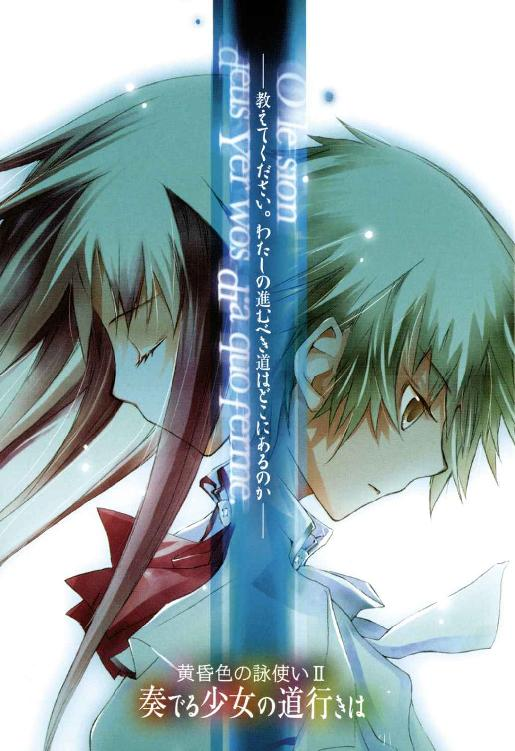
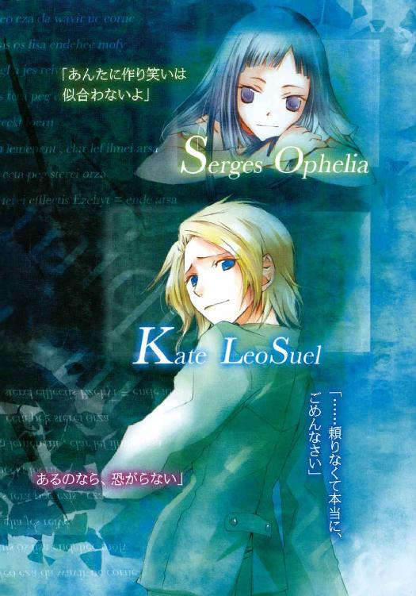
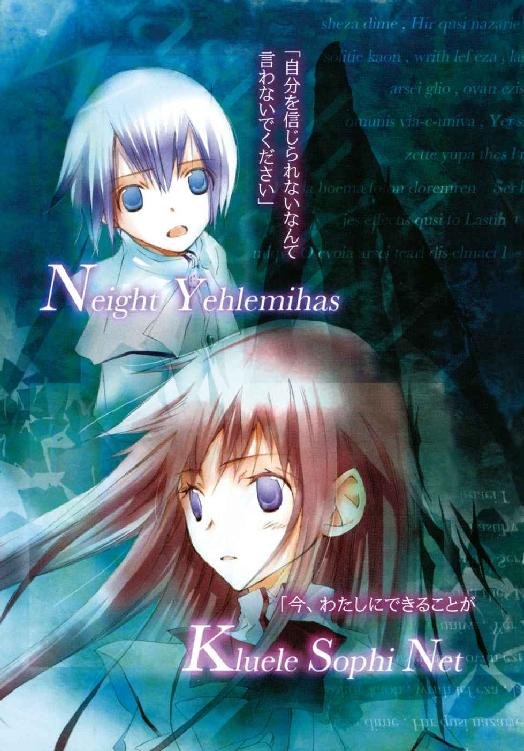
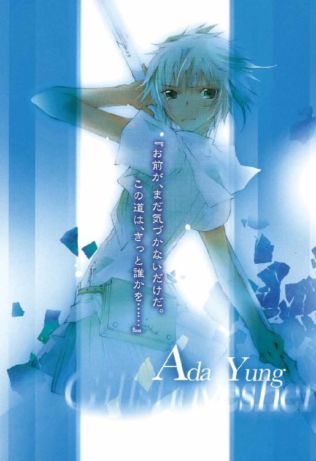
黄昏色の詠使い
奏でる少女の道行きは
細音 啓

富士見ファンタジア文庫
本作品の全部または一部を無断で複製、転載、配信、送信したり、ホームページ上に転載することを禁止します。また、本作品の内容を無断で改変、改ざん等を行うことも禁止します。
本作品購入時にご承諾いただいた規約により、有償・無償にかかわらず本作品を第三者に譲渡することはできません。
本作品を示すサムネイルなどのイメージ画像は、再ダウンロード時に予告なく変更される場合があります。
本作品は縦書きでレイアウトされています。
また、ご覧になるリーディングシステムにより、表示の差が認められることがあります。
口絵・本文イラスト 竹岡美穂
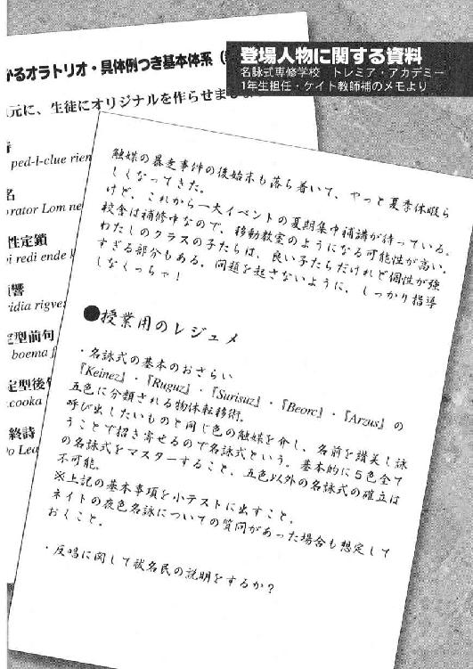
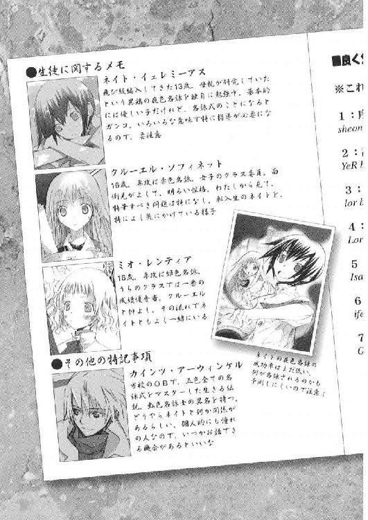
夢奏 『願わくば、あの日あの時をもう一度』
目の前の世界全てが、真っ赤な炎に炙られていた。
にこやかな笑い声が響く競演会。そのはずが──あの日学園で、笑い声は一瞬にして悲鳴にとって代わられた。
悪夢。そう、現実には到底起こりえないような恐怖の具現だった。
校舎、校庭、広場。目に映る全ての場所で燃え上がる残酷な炎。強風に煽られ火の粉が舞い、それがさらに新たな火種を芽吹かせる。
生徒の絶え間なき悲鳴、罵声、泣き声。それに混じる教師の慌ただしい指令。
混乱が混乱を生み、恐怖が恐怖を肥大化させる。
校舎の陰から現れた三首の怪物に生徒が傷つく。それを助けようとして、今度は教師が傷を負う。犠牲の連鎖。痛みの螺旋。
......わたしは、それから目を背けて逃げていた。
悪いことはしていない。避難しろという指示に従っていただけ。そうだ、あの時自分のクラスメイトがそうしたように、まだ名詠をろくに使えぬ生徒の一人として適切な行動をしただけだ。
〝本当にそうかしら？〟
不意に聞こえてくる誰かの声。いや、その声の正体は分かっている。
自分にとって最も身近な、それは他ならぬ自分自身の声だった。
一年前、もはや振り返らない過去として切り捨てた自分。
〝あなたはあの時本当に、自分にできることの全てをしていたかしら？〟
目の前、キマイラに怯え震えるクラスメイト。恐怖に歯の根があわない友人たち。
キマイラに襲われ傷ついた友人がいた。怪物の眼前、身体を張って生徒を助けようとする教師がいた。
「あたしは......まだ何の名詠もろくにできない」
キマイラに対抗できるような名詠は使えない。だから......
〝だから、逃げるのが当然だった？〟
......その通りだ。無力な名詠士、それが自分なのだから。
〝それは違う〟
どこまでも変わらぬ冷たい声で、幻聴は深々と告げてきた。幻聴、そうと分かっていてなお、その声を意識の外に追いやることはできなかった。
〝なぜなら、あなたは名詠士ではないのだから〟
あたしは名詠学校にいるじゃないか。
名詠士になりたくて、毎日こうして勉強もしてる。
〝あなたは名詠学校にいるだけ、名詠を学んだふりをしているだけ〟
フリなんかじゃない。あたしは......あたしは毎日ここで勉強して、試験も受けて、クラスメイトの子と一緒に頑張ってる。十分じゃないか。
〝十分？ あの日あの時の自分の行動を、あなたは十分と言い切れるの？〟
......もういいじゃない。もうやめてよ。あれはもう、終わったことなんだから。
あたしは自分で納得してる。......それでいいじゃない。
〝終わっていない。なぜなら、あなたは自分に噓をついているから。自分にも、自分の教師にも噓をついている。クラスの友人にすら〟
......う、噓なんかじゃない。
あたしは別にそんなつもりじゃ──
〝そうね。噓は言っていないかもしれない。けれど真実も伝えていない。あなたが本当は、名詠を学ぶ生徒などではないということを〟
もういい。やめて、もうやめて。お願い......
あたしは、あたしはっ──
〝自分が、名詠学校の生徒という皮を被っただけの祓名──〟
「やめてぇぇえええっっっ！」
壮絶な悲鳴と共に、彼女はベッドから飛び起きた。
冷めやらぬ火照った身体、痛いほどに疼く胸の鼓動。胸を押さえたまま、カーテンから零れる光をしばし眺め──
......夢？
ようやく彼女は、それが自分自身の幻覚であることに気づいた。
「──平気？」
ふと、背中に浴びた声に振り向いた。
自分のベッドに隣り合う、もう一つのベッド。そのベッドから上半身だけを起こしているのは、とうに見慣れた顔の相手だった。
黒髪長身、細身の少女。自分と同じ学校に通う同級生にして、学生寮の同居者だ。
「ごめん、起こしちゃった？」
時計の針が告げる刻は朝の四時。あまりに早い。
「寝汗すごいよ。それに、さっきからうなされてるみたいだったし」
友人の指摘、でもそれは、言われるまでもなく自覚していることだった。寝間着から滴り落ちるほどの汗。ぞっとするほど身体を冷やす、嫌な類の汗だ。
「また、あの夢？」
「......うん」
ここ一週間、自分が苛まれ続けてきた悪夢。
──いや。夢ではなく、それはきっと自身の葛藤なのだろう。
「あんた、明後日から一人で平気？」
同居人であるこの友人は、明後日から部活の合宿でこの寮を留守にする。その間、また自分が悪い夢を見ないだろうか。そういう意味の問いなのだろう。
ここ一週間同じ夢を見て、明後日は見ないという自信はない。きっとまた繰り返す。あの日の記憶が、自分の中で霞んで消えるまで。
「平気よ。もう子供じゃないんだから」
せめて無理に笑ってみせた。下手な作り笑いだ、自分でそうと知っていても。
「でもさ、辛い時には誰かに相談しなよ。わたしだって構わないんだから」
「ううん、平気だって」
気丈を装う。友人に余計な心配はかけたくない。
「そう、それならいいんだ」
透き通るような黒く艶やかな髪を手で梳いて、眼前の友人が背を向ける。
「わたしもうちょい寝るね。おやすみ」
「......うん」
汗に濡れ冷えきった身体と寝間着。戸棚からタオルを取り出し汗を拭う。
が、その作業もそこそこに、背後からの視線を感じ振り向いた。
「どうしたの？」
寝ると言っていた彼女が、ベッドに座る格好のままこちらをじっと見つめていた。
「んとさ。これは友人としてちょっとしたアドバイス」
「なに？」
「──あんたに作り笑いは似合わないよ」
「......っ！」
反射的に言い返そうと口を開きかけ──
「んじゃ、おやすみね」
だがその前に、同居人の方は再び自分のベッドに潜り込んでしまった。
数十秒と経たず聞こえてくる、友人の安らかな寝息。
「作り笑い、か」
ぽつりと、姿見の前で友人の言葉を反芻した。
......そんなの、あたしだって知ってるよ。
序奏 『薄暮の二人』
夕焼けの薫り、とでも言うべきか。陽が落ちる寸前の時間は、周囲を舞う微風がどこか懐かしい匂いを運んでくる。
哀愁を誘うこの薫り。
──花か、香草か。あるいは、なんだろうな。
夕焼けの匂い。その正体を確かめる気はない。
突き止めてしまえば、その魅力はきっと半減してしまうに違いない。謎めいた神秘的な匂い。だからこそこうも想いが募る。
「ここは本当に怖い場所ですね」
木製の古椅子に座り直し、カインツ・アーウィンケルは微かに吐息をこぼした。
周囲を見回す。鈍色の高塀に囲まれた、広大な庭園がそこにはあった。
夕日を浴びて茜色に染まる噴水からは滾々と水が湧き、足下に咲き乱れる草花は盛夏を前にますます隆盛を誇っている。
「ここにいると、まるで十数年住み慣れた我が家に帰ったような気分になってしまいます」
つい気が緩んで、どうにも時間の経過を忘れてしまう。
「ふむ。まあお前も、たまには骨休めが必要ということだ」
自分の正面。それほど離れていない場所から聞こえてきた声に苦笑する。
骨休め──なるほど、言い得て妙だ。
「骨折って、どれくらいで治りましたっけ」
左手に巻いた包帯に触れながら首を傾げる。
「程度によるだろうな」
「......キマイラの爪を受け止めたくらいなら？」
一瞬、沈黙の幕が下りた。
一呼吸にしては長く、二呼吸にしては短い半端な余韻を残し──
「そもそもだな、お前は鍛え方が足りん」
風に運ばれる、嘆息にも似た相手の吐息。
「打撲程度ならともかく、それで腕を折るとはなんと無様な。いくら名詠に優れていても、身体の基礎部分がなっていなければ何の意味もない。私があれほど言っておいたのに」
「......先輩が鍛え過ぎなだけですよ」
苦笑を隠す気もなく、カインツは相手の方へと顔を持ち上げた。
この庭園、そして広大な敷地の領主たる人物へと。
「よく言われるよ。特に若い輩からな」
口調を変えぬまま返してくる相手。自分の知る限り、この男ほど外見の特徴ある人物はいないように思えた。
──赤銅色に日焼けした、夕日に晒される上半身。
色褪せた檜色のズボン。男が身につけた衣服はそれだけ。だが衣服の代わり、皮膚を内側から押し上げる筋繊維が何よりも頑丈な鎧を思わせる。
背中から肩胛骨にかけて盛り上がる広背筋。脂肪の欠片すら見あたらない腹直筋、常人の倍近い上腕筋。誰もが目を瞠る体格でありながら、しかしこの類の大男にありがちな鈍重感をまるで感じさせない。見る者によっては、その事実の方が驚愕に値する事だろう。
筋肉発達に特化した者にありがちな、あの重量感がまるでないのだ。
幾千の夜を自己の鍛錬に費やすことで、極限まで身体を研ぎ澄ませる。さながら刀鍛冶が鋭利な刃を研ぐように、研鑽という名の過程で脂肪はおろか余分な筋肉すら削ぎ落とした──一般人とは一線を画す次元にある肉体。
自らの骨格を識り、骨、内臓の負担まで考え尽くした上での、一グラムの齟齬すらなく完全なまでに計算しつくされた体形。
古代の彫像美術ですら及ばない、人体工学という分野の紛うことなき完成形。
「ところで、先輩の番ですよ」
「分かっている、〈女王〉を３Ｂへ」
短く告げるその間すら、彼は動きを止めていない。
両手で握る金属製の長鎗。
鈍色に輝くその武器を構え、振るう。
振るう。振るう。振るう。
その流れのまま、勢いを殺さず廻す。縦に廻し、横に廻し、そして薙ぐ。
風を「斬る」。庭園に吹く微風と明らかに質の異なる風鳴りが響く。
とある目的に沿って特化された、完全なる戦闘用鎗術。鳥の羽毛が舞うような軽捷感と同時、全てを刺し貫く寒気が並行して存在する。
それが美しいと感じられるのは、この男の動きがあまりに俊敏く、そして軽やかだからなのだろう。
なるほど、確かに彼ならばキマイラの爪を生身で受けても自分のようにはなるまい。
──まったく、敵わないなこの人には。
しばしその演舞を眺め、カインツは膝上に載せた金属盤へと目を向けた。言われるまま、盤面に配置された赤色の敵駒を移動。
しばしの黙考を挟み、自分の白駒を持ち上げる。
「では12Ｅへ〈騎士〉を。〈王〉まであと二歩ですね」
瞬間。鎗の勢いこそ変わらぬものの。
「む......」
わずかに、彼の鋭利な眼光が弱まった。
「では15のＦに〈王〉を逃が......そうと思ったが」
短く切り揃えた亜麻色の髪を風になびかせながら、彼が視線だけをこちらに送る。
「一つ訊く。もしや12のＦにはお前の〈弓兵〉がいないか？」
「ええ、三手前に移動させた奴ですね。しっかり〈王〉を狙ってますよ」
「では14のＤに〈王〉を逃が......したかったが」
再び一呼吸分の間が空いた。
「もう一つ訊くが。もしや14のＤにお前の〈道化〉が隠れてないか」
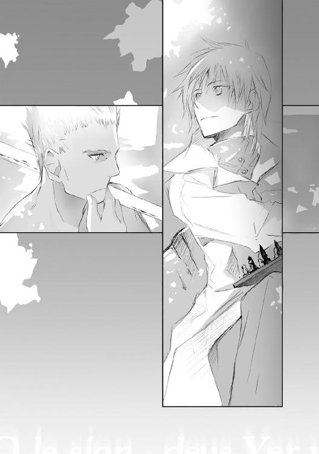
「あ、ばれてましたか？」
膝上の盤面を一瞥し、カインツはあえておどけてみせた。
「騎士で前面、弓兵で縦列を塞ぐ。王が逃げようとする場所には罠役の〈道化〉を配置。お前が唯一覚えている攻め方だからな。見え見えだ」
誇った様子もなく鎗を振るう彼。それにしてもよくぞまあ覚えているものだ。さすが、この遊戯を教えてもらった「先輩」なだけはある。
次の手を告げてくる。そう思わせる数秒の空隙を残し──
「が、それに捕らえられた私も人のことは言えんな。投了だ」
やおら、彼の声音が弱まった。
「ちょうど日課も終わった。頃合いといえば頃合いか」
その言葉の通り、いつしか彼の持つ長鎗も動きを止めていた。
相手が汗を拭うのを待ち、カインツは腰掛けていた椅子から立ち上がった。
「今日の先輩、心ここにあらずといった感じでしたが？」
「......ふむ」
鍛錬を始めてから今まで。
クラウス・ユン・ジルシュヴェッサー。この敷地の所有者は、ようやく自分に顔を向けてきた。
「いつもはボロ負けですからね。今日の先輩の手はどうにも精彩を欠いていたし」
「いや済まない。だが何も手を抜いていた訳ではないんだ」
それは百も承知。口に出すまでもなく無言で頷いてみせる。
「──考え事ですか」
彼にとって、鎗の鍛錬はもはや思考と別に存在する。だからこそ鍛錬の間にもこのような盤ゲームができるのだが、今日に限っては自分との盤上の差し合い以外にも、打ち合う相手がいたらしい。
「まあな」
隠す素振りもなく、彼が濁った吐息を絞り出す。
「この歳になってとも思うが、娘のことだよ」
「確か、十六歳になられたんですよね」
厳めしい外見と裏腹に、家族に対する彼の情は厚い。自分も暇さえあれば彼の家族自慢を聞かされている。
......けど、娘の話か。
今まで聞かされていたのは、彼の妻の話が主。娘の話はあまり耳にした記憶がない。いや、彼の方がそれを避けていたと思わせる節もあったほどだ。
「そういえば、娘についてはあまり話したことがなかったな」
長鎗に白布を巻きながら、彼がにわかに目を細める。
「ところでだ。才能というものについてどう思う」
娘の話になるかと思いきや、この相手は前振りとまるで異なることを訊いてきた。
「才能......どうと言われても、面白い返事をすぐにというのは難しそうですね」
「四十年。私はこの道で生きて、自他称問わず多くの『天才』と出会ってきたよ。彼らの多くと実際に話し食事を共にし、その中で一つ悟ったことがある」
小さな吐息を従え、彼は自らの拳を持ち上げた。
「この世に天才はいない、ということだ」
「出会った中で、一人たりともですか」
自分では的を射た質問のつもりだった。だが。
「ああ、ただの一人もだ」
まるで動じた素振りを見せず、どこか乾いた眼差しで彼は首を横に振ってきた。
「出会った者の大半が、やはり陰で相応の努力をしていることが見て取れた。それ以外で成功者とされる者もいたが......やはりそれは、単に運を味方にしただけのつまらない人間だった」
それきり彼が口をつぐむ。
「──と、思っていた」
と思いきや、沈黙もそこそこに彼は肩をすくめてみせた。
「だがまあ、それだけ自信を持っていたんだが、どうも間違いだったらしい。二人、この世界に二人だけ、どう誤魔化そうとしてもできない『天才』と出会ってしまった」
よどみなく言葉を綴り、そして、彼は鋭利な眼光を向けてきた。
「私が知る二人。その内の一人はお前だよ、カインツ」
一瞬、息が詰まるのを自覚する。
彼の口上を聞きながら、薄々とは予感していた。
カインツ・アーウィンケル──歴史上誰一人として踏み入ることの敵わなかった未踏の領域、名詠五色の全制覇を成し遂げた虹色名詠士。
「......こんな場面でおだてられるのは複雑な気分ですよ」
「事実だからな、こればかりは仕方ない」
「そのもう一人とやらは？」
もし自分が名前を挙げるとするならば、それは間違いなく、かつて互いに約束を誓った夜色の少女。実に十数年の年月を経て、とある学園で再会を果たした相手。しかし、彼がそれを知っているはずもない。
「名詠士の世界ほど派手ではないがな、我々の道もそれなりに歴史と人口を持っている」
それは当然承知のこと、頷くまでもなかった。
「本家たる我がユン家、そしてその宗家。歴史上数千人を数えるであろう道に、史上例のない、まさに申し子たる少女が現れた」
ふと、カインツは我知らずのうちに眉をひそめた。
今、彼は何と言った。──少女？
「ああ、そうだ」
粉末化した鉄錆を思わせる空虚な声音で、彼は続けてきた。
それは悪いことではなく、むしろ誇るべきことのはず。
なのに。なぜこの人の視線はここまで曇ってしまっているのか。
「その才能は、だが大輪の花を咲かせる直前で止まっているのさ」
苦悶にも似た表情で彼が弱々しくこぼす。
「あろうことか。あの子は天賦の才たるジルシュヴェッサーの名を捨て、名詠士の道を選んでしまった」
ジルシュヴェッサーの名前？
〝この歳になってとも思うが、娘のことだよ〟
彼の呟きをようやく思い出す。
「先輩、まさかその少女」
「......私の、一人娘さ」
「あなたの一人娘ともあろう者が、祓名民を捨て名詠士に？」
「あの子が選んだ学舎は、トレミア・アカデミー」
トレミア。
その名で自分の思い当たる学園は僅かに一つ。まさか。
「ああ。お前が出くわした、あの触媒暴発事件が発生した学園だ。お前もそこで、あの子と出会っていたかもしれんな」
「そのご令嬢の名前は？」
茜色の陽をしばし見つめ、その父親は静かに瞳を閉じた。
「──エイダ。今年名詠学校のハイスクール生になったばかりの女の子だよ」
一奏 『赤銅色の詠使いになりたくて』
１
大陸辺境としては異例とも言える、生徒数千人を超える名詠式専修のハイスクール──それがトレミア・アカデミーだ。敷地規模は他の名詠学校の優に数倍、その設備・教員の質も他の名門校に劣らないと評される。
その敷地の中央部に位置する、ドーム状のアーチを描く建物。
『図書管理棟』──蔵書数百二十万冊を数え、地上五階、地下二階にまで広がりを持つ施設である。学習だけではなく交流・休息といった目的でも用いられ、生徒のみならず教師も頻繁に足を運ぶ、多目的ホールという一面も持っている。
その二階で。白制服に身を包んだ幼げな生徒が、ずらりと並べられた本棚をじっと眺めていた。年齢はせいぜい十二、三。深い紫色の髪と中性的な面立ちの少年だ。
「えっと。これと......これ、と」
一抱えはある資料集を数冊まとめて両手で抱え、少年がいそいそと階下のロビーへと降りていく。
「ネイト君、だいじょうぶ？ 足下ふらふらしてるよ」
その姿を目にし、制服姿の少女が口を開いた。
ミオ・レンティア。金髪童顔、おだやかな口調が特徴で、実年齢である十六よりは二、三歳幼く見られることが多い女子生徒だ。
「へ、平気です......たぶん」
持ち上げた本から顔を覗かせ、その少年──ネイト・イェレミーアスはかろうじて彼女に対して頷いた。
「外暑そうだし、もうちょっと図書館で休んでいけば？」
読みかけの本を閉じ、不安げな顔つきで訊ねてくるミオ。図書管理棟というのは学園側の正式名称。しかしその長い呼称は生徒も教師も用いず、もっぱら『図書館』で済ませてしまうのが習慣になっている。
「名詠の練習は外でしかできないですから。それに、クルーエルさんに外で待っててもらってますし」
名詠式。それが、この学園で生徒が専門的に学んでいる技術である。自分の望む対象を心に描き、それと同色の触媒を携えた上で対象の名を賛美する──一種の物体転送術。
『Keinez』・『Ruguz』・『Surisuz』・『Beorc』・『Arzus』の五色に分類され、そこで生徒は各自の専攻色を決め、その専攻色と同色の物体を詠びだすことを目標とするわけだ。
「ミオさんはどうします？ クルーエルさんも校庭で待ってますけど」
見ると、既に彼女の視線は自分ではなく、手元の本へと向いていた。ちなみに彼女の専攻色は緑色名詠。彼女の場合であれば、仮に緑色のカエルを詠び出すには緑色の画用紙など緑の何かを触媒として用意し、そのカエルを讃える詠を歌うという過程になる。
「ちょっと待ってて。もうすぐこの本読み終わるから。うーん、推理物って、どうしてこう先が気になるのかなぁ」
......その台詞、三日くらい前からずっと聞いてる気がするんですけど。
夏休み以降ふとミステリー関係の本に手を出して以来、ミオは延々とこの調子。彼女のことだ、ここにある推理物全てを漁りつくすまで図書館から出ないだろう。
「じゃあ、先に校庭で練習してますね」
積み上げた本のせいで前方がろくに見えないのだけれど、まあそれは仕方ない。図書館の出口を越え、玄関部へ続く渡り廊下へと──
「......っ！」
壁に突き当たったかのような衝撃に、抱えた本ごとネイトは床へ転がった。
「っと。平気かい」
見上げたそこに、眼鏡をかけた線の細い教師。教師に支給される白衣に、胸元には青糸で織り上げた校章。ええと、たしか最上級生の担任をしてた先生だっけ。
「あ、は、はい。平気です。その......ごめんなさい」
「通路は前を見なさい──と、普段なら言うところだけど」
床に転がる分厚い資料集の山を見回し、その教師はふっと表情を和らげた。
「君の勉強熱心さに免じて、今日に限ってお小言はやめておこう」
床に散らばる本をかき集め、教師がその表紙をじっと眺める。
「懐かしいな。この資料集は自分もよく読んだ。と言っても、学生時代の話だけどね」
積み重ねた本を手渡してくる。それも、自分が最初に積んでいたのと同じ順番。ぶつかった時に順番まで覚えていたのだろうか。
「あ......ありがとうございます」
「夏期休暇中とはいえ、廊下は静かに歩くことを忘れずに」
悪戯っぽく、その教師は眼鏡のブリッジを持ち上げてみせた。
夜色の髪をなびかせ、小柄な少年が早足気味に通路を去っていく。
「......そういえば、あの子」
その背に向け、ミラーは双眸を細めた。
ネイトと言ったか。学園に入学早々、特殊な境遇を持つ生徒として、教師内でも話題にのぼる生徒だった。五色から成る名詠式。学園内のどの生徒も既在五色のどれかを専攻とする中、しかしこの少年だけはまったく異なる色の名詠式を習得しようとしていたからだ。
夜色名詠──公式にはその存在すら認められていない異端色。
「残念、もう少し話したいこともあったんだが」
教師である自分にも未知なその名詠。もちろんそれも気になるが、自分にとっては更に別の話題があった。
自分とあの少年をつなぐ、一人の女性について。エルファンドを卒業し彼女がどのような足跡を経てきたのか。かつての同級生として少なからず興味はあった。
「あいにく、仕事がなければの話だけど」
小脇に挟んだ資料を一瞥、深く息をつく。
「さて、自分は今から調べ物か」
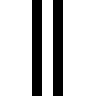
「......ネイト」
背中越しにかけられた声に、触媒入りのフラスコを片手に振り向いた。
「は、はい。なんでしょう」
「やっぱり少し休みましょ。キミ、足下ふらふらしてるよ」
やわらかで落ち着いた少女の声。その声は、自分の立つ校庭から数メートル離れた木陰からだった。真夏の鋭い陽射しを遮る小さな影の下で──そう告げてくる彼女の、緋色の長髪が微風に舞う。
「で、でも」
「だーめ。さっきからずっと名詠失敗してるじゃない。集中力だって落ちてるのよ」
彼女の言い分は筋が通っていた。反論できる言い訳が思いつかない、渋々ながらネイトは頷くことにした。
「......はぁい」
「ほら、これ被ってなさい」
有無を言わさず、鍔の広い麦わら帽子を押しつけられた。ややサイズが大きいらしく、目の前の視界全部が鍔の陰に隠れてしまう。
「......あの、前が見えないんですけど」
帽子を頭から浮かせ、ようやく視界が広がった。
と。その視界全てを埋めるほど近い距離──
「それでいいの。どうもキミは、力つきて倒れるまで前に走り続けちゃうタイプみたいだからね」
目の前に、真っ青なワンピースを着た少女が立っていた。緋色の長髪に長身、遠目からでもその容姿が際だつ少女。
クルーエル・ソフィネット。年齢は自分より三つ年上の十六歳。その髪の色が示すかのように、赤色名詠を専攻。自分がこの学園に転入してきて以来、ずっと傍に居てくれる人だ。
「ま、困ったことに、それがキミのいいところでもあるんだけどね」
くすりと、からかい半分といった微笑を彼女がこぼす。
「......なんか、あんまり褒められた気がしないです」
ふふ──案の定どこか楽しげに、彼女は口元に手をあてた。
「それより、少し日陰で休んでていいよ」
風になびくワンピースを手で押さえたまま、彼女が背を向け歩き出す。
「あ、あれ。クルーエルさん？」
「たしか学内のカフェ開いてたわよね。冷たい飲み物でも買ってくるから、そこで待ってて」
２
校庭に吹き降りる風が地上の砂を巻き上げる。
「......ホントに暑いや」
校舎の陰に身を寄せ、ネイトは額の汗を拭った。自分もクルーエルのような軽装にすれば良かったのだが、つい条件反射で普段の白制服を着てしまったのだ。寮に戻って着替えるというのも手ではある。しかしそれはそれで面倒だ。
「......クルーエルさん、まだ戻ってこないかな」
一年生校舎からカフェまでは往復で十分ほど。混み具合によってはまだしばらく時間がかかるだろう。
「お、ネイティじゃん。どしたのさ」
──ミオさんみたいに、やっぱり今日はどこかで本でも読んでようかな。
「......あ、あれ？ ネイティ、聞こえてないってやつ？」
となるとやっぱり図書館かなぁ。ミオさんもまだいるだろうし。
「ちょ、ちょっとこらネイティ、無視しないでってば。......ああもうっ、ネイトってば」
ネイト？
突如後ろから聞こえてきた自分の名前に、ネイトは反射的に振り向いた。すぐ目の前に、見覚えある黒髪長身の女子生徒。
「......あれ、サージェスさん？」
ミオやクルーエル同様、自分のクラスメイトの少女だ。学校指定の制服ではなく、今の彼女は藍色のスポーツウェアを着こなしていた。その背に、自分が丸々入れてしまえそうな巨大なリュックまである。
「おはようございます、サージェスさん」
「おはよ。てか最初から気づいてよ。さっきからネイティのこと呼んでたのに」
「ネイティって、僕だったんですか？」
似た名前だなとは思っていたけど、まさか僕のことだったとは。
「だってほら、年違うけど一応同級生じゃない。『ネイト君』みたいな君付けってちょっと苦手なのよね。そこでこの愛称よ。どう？ 素敵でしょ？ 今この場で考えたにしては素敵よね」
「ど、どうと言われても」
圧されるように後ずさりしつつ、ネイトはゆっくりと彼女の背負う荷物を指さした。
「......えと、サージェスさん、夏休みなのにどうして学校にいるんです？ しかもそんな大きなリュック背負って」
「さりげなく話を逸らしたわね。......まあいいけどさ」
よっ、と──軽く呟き、少女が背の荷物を降ろす。地に降ろした途端、どすんという鈍重そうな音と共に砂埃が舞う。
「それ、何が入ってるんですか？」
その途端。
「ん、これ？ 知りたい？ 聞きたいのね？ 後悔しないわね？」
怪しげな光を目に灯し、にやりとサージェスが近づいてきた。
「あ......や、やっぱりいいです。なんか恐そうだから」
「いやいや大したことないって。ただの新鮮な人の遺体、それもちょうどネイティくらいの幼くて──」
「うわあっ、誰か来てええぇえ！」
「って、ちょっと、こらネイティ逃げないで！ 冗談だからっ！」
一目散に駆け出す間際に首筋を摑まれ、おずおずとネイトは彼女の方に振り向いた。
「......ホントは何が入ってるんですか」
「テントと寝袋と食料と雨具と、その他もろもろよ。ほら、わたし登山部だから」
登山部。そう言われてみれば、そんな部活があったような気がする。確かに、彼女が履いている靴も普段の運動靴ではなく、なにやら重厚な造りになっていた。
「明日から四泊五日で夏山に挑戦するの。今日が部活の最終ミーティングだから。んで、ネイティはどうしたの」
じろじろと、彼女がこちらの制服を眺め回す。
「えっと、クルーエルさんとミオさんと一緒に名詠の練習です」
「ああ、クルーエルはさっきすれ違ったわ。ミオは？」
「図書館で推理本読んでます。今年の夏中に、図書館にある全五百七十冊を読破してみせるとかで」
「名詠の練習と関係ないじゃん」
ある意味、ごく自然な突っ込みを口にする彼女。
「意気込みはすごいんですよ。ここ数日、朝七時には学校の図書館に来て開館を待ってるらしいです。生徒の中で一番早く来てると豪語してましたし」
「......ふむ」
やおら、サージェスの瞳の色が微かに変わった。
何やら考え込むように、相手の視線が宙を泳ぐ。
「ネイティって、たしか学校の寮に住んでるんだっけ」
「ええ。運良く一つだけ空いてたので、そこに入れてもらいました」
トレミア・アカデミーの寮は学園の敷地内に設けられている。一年生校舎から歩いて十数分の距離にあるので生徒からの人気は高い。競争率が高いため、実家が遠いなどの特殊な事情がなければ、今はほとんど入寮できないらしい。
「んじゃさ。明日早起きして、六時半に学校においで」
さらりと彼女が告げてきた時刻に耳を疑った。
「......六時半？」
「そそ。ただし、六時半に『一年生校舎の屋上』ね」
よりによって校舎の屋上？ 無理だ。六時半といえば校門こそ開いているかもしれないけれど、校舎の方は施錠されている時刻のはず。
「非常階段使いなさいな。校舎入らなくても屋上までいけるから」
非常階段は、普段生徒の立ち入りが禁止されている区域の一つだ。でも、なぜそこまでして？
「そこに誰かいるんですか」
「行けば分かるよ。っと、わたしはそろそろ部会議の時間だ」
校舎の外壁に掛けられた大時計を眺め、サージェスがリュックを背負いなおす。
「ではお二人さん。邪魔者は消えるので後はごゆっくり」
お二人さん？ その意味を推し量るより先。
「......なんか引っかかる言い方ね」
聞き馴染みのある声が背中側から聞こえてきた。振り向いたそこに、両手に飲み物のカップを抱えたクルーエル。眉をつり上げる彼女に対し、リュックを背負った方の少女は陽気な口調で手を振ってきた。
「いやいや、別に深い意味はないってば。それよりクルーエル、あんた早く左肩治しなさいよ」
ワンピースの袖が風に舞い、そう言われた少女の肩先が微かに陽の下に晒される。ほのかに上気した肌に、白い包帯が痛々しい。二週間ほど前、学園で起きた事故で負った傷だ。本人曰く、もうほとんど治ったと言ってはいたが。
「......分かってるわよ」
「あんた、大人しそうに見えて案外やるときは無茶するからね」
やや憮然とした面持ちでクルーエルが口を尖らせる。その姿に、黒髪の少女の方は可笑しそうに表情をゆるませた。
「でもま、そこら辺があんたの可愛いとこだから」
「な......なによそれ」
どこかで聞いたような台詞を自分に返されるとは思っていなかったのか、気恥ずかしげにクルーエルが後ずさる。
「んじゃね、バイバイお二人さん」
悪戯ぽい笑顔を残しサージェスが校舎の方へと去っていく。
その姿が校庭から消えるのを見送って──
「あれ、そう言えばサージェスどうしたのかな。あんな大きな荷物持って」
聞きそびれたらしく、クルーエルが頭上に疑問符を浮かべた。
「部活だそうです。登山の合宿らしいですよ」
「そっか。遠出するならお土産でも頼んでおけばよかったわね。でも山のお土産って、何があったかな」
「......遭難者の新鮮な遺体。それも僕くらいの年頃の」
「え？」
「......なんでもないです」
リュックの中にソレが収められている図を想像してしまった。......うぅ、もうしばらく頭から離れなさそう。
「あ、そうだ。クルーエルさん。明日僕、ちょっと早めに学校行きたいなって」
「うん。わたしの方はいつも通りの時間になっちゃいそうだけどね。それにしても、どうしたのいきなり」
なんて説明すればいいんだろう。数秒沈思したあげく。
「なんか、誰かが屋上にいるとかいないとか」
サージェスに言われたことそのままを、ネイトは答えることにした。
「誰かって、誰？」
「さあ......教えてもらえませんでしたから」
どう表情を作ればいいのか迷い、ネイトは頰を搔いた。
教えてくれない──言い換えるなら、ここで教えずとも、屋上に行けば分かる相手だと彼女は暗黙のうちに言ってきたということになる。
......それってつまり、僕の知ってる人だってこと？
３
正門から見上げる、校舎に掛けられた大時計。その時計の針は、昨日サージェスと約束した時間より更に半時間ほど早かった。
──現在六時。
一年生校舎の屋上って言ったって、こんな朝早くに誰がいるんだろう？
それが気になるあまり昨夜はろくに寝れなかった。そのおかげで、早く来れたのはいいのだけれど、まぶたが重くて仕方ない。
洩れそうになるあくびを嚙みつぶしつつ、ネイトは正門をくぐりぬけた。
生徒はおろか、周囲には教師の姿さえ見あたらない。一年生校舎の横、ドーム状の設計になっている図書管理棟へとつま先を向けた。案の定というべきか、図書館はまだ開館すらしておらず、そこに並ぶ生徒の姿もない。当然、自分の良く見知った少女の姿も。
「この時間だもの。ミオさんが来てなくても当然だよ」
自身に言い聞かせるよう口にし、ネイトは一年生校舎へきびすを返した。
金属製の強固な造りをした鈍色の建物。競演会の事件でキマイラの襲撃を受けたものの、その校舎自体は無事だった。
「......やっぱり閉まってる」
校舎の入り口に掛けられた巨大な南京錠。それを一瞥し、校舎の裏手へと回る。
日の当たらぬ草地から頭上へそびえる、螺旋状の非常階段。
「アーマみたいに飛んでいけたら楽なのに」
屋上まで続いているであろう長い螺旋の渦を見上げ、ネイトは小さく溜息をこぼした。
カツ、カツン......
所々錆び付いた階段に、一人分の足音が幾重にもこだまする。
二階を越え三階を越え、校舎の頂上へ。
──こんなとこ、本当に誰かいるの？
サージェスの言うことを噓だと決めつける気はない。ただ、校庭や教室ならばともかく、わざわざこんな場所に生徒がいる理由が思い浮かばないのも事実だった。
屋上へと続く最後の一段を上りきる。
さっとまぶたを焼く朝日に目を閉じかけた。完全に閉じなかったのは、それより先に、何か鋭い風切り音が鼓膜に響いてきたからだ。
この音、何？
音の方向──広大な屋上の中心部へと視線を向ける。
「......え」
眩しい陽射しの中、ネイトは両目を見開いた。
鮮烈な陽を浴び踊る、小麦色の肌をした少女がそこにいた。
──違う。踊りなんかじゃなくて......
少女が握る長大な棒。金属特有の鈍い光を放つその先端、鋭利に研ぎ澄まされた刃──それはすなわち、鎗だった。
自らの背丈を上回る長さの鎗を少女が振るう。
流れるように払い、踊るように廻し、舞うように穿つ。一瞬として澱むことなき動き、一つとして同じ動作のない型。見る者を惹きつけ誘うような、あまりに洗練された刃の流れ。これが本当に鎗の鍛錬なのか。そう思わせるほど華麗な体捌き。
「......すごい」
一見、できすぎた演舞を思わせる華麗な闘舞。しかし、演技には決して出せぬ気迫がそこにはあった。迫真という言葉すら生温い。鎗振るう者の眼差しがそう告げてくる。
少女の動きは止まらない。徒競走が可能なほどの広さを持つ屋上を、目に追いつかぬ足運びで駆けめぐる。陽を受け輝く汗の飛沫すら美しい。どんな運動ともかけ離れた、次元を逸する領域。
屋上の端から中央へ戻り、少女が片手で鎗を回す。
......キィィッィィン
「──っ！」
突如鳴り響いた金属音に、ようやくネイトは我に返った。
十メートルほど先、少女の動きが止まっていた。その手に鎗がない。
──鎗、落としたの？
心中の思惑を肯定するかのように。地に落とした鎗を見下ろす格好のまま、少女が小さく吐息をこぼす。
動きに魅せられ今まで気づかなかったが、彼女の背丈はそれほど高いものではなかった。自分よりせいぜい数センチ高いほど。白のショートパンツに、同色のタンクトップ。日焼けした剝き出しの肩は小麦色、いや赤銅色と喩えた方が適切かもしれない。
亜麻色の髪を肩先で切った、ショートヘアのボーイッシュな少女。小柄な身体に比例する小顔に、それと対照的な大きめの瞳。どことなく猫を思わせる顔立ちが印象的な──
......あれ。この人見覚えが。
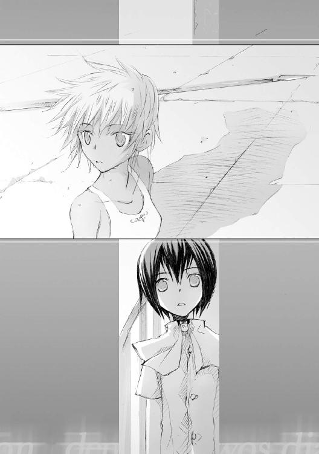
「ん？ あれ、キミ」
眼前の少女がようやく顔を持ち上げた。視線が触れ合う。
「あれれ、ちび君じゃん。おはよー朝早いね」
先の息つかせぬ表情が噓のように、あっけらかんとした表情で相手は片手を上げてきた。
「......エイダさん？」
エイダ・ユン──目の前にいたのは、自分やクルーエルたちと同じ教室の、顔馴染みのクラスメイトだった。
「エイダさんのそれ、鎗ですか」
「ん、ああ。ちょっと待ってね。あたし汗かいたままでいるのダメなんだ」
屋上の端に置いてあった鞄からタオルを取り出す少女。
エイダさん、一体いつからいるんだろう。
朝七時前だというのに。にこやかに笑う彼女の額、いや全身は、この時刻にして既に大粒の汗が止めどなく流れ落ちていた。
「ねえ、ちび君。お願いがあるんだけど」
......ちび君？
「あ、あの。ネイティのがまだマシな気が」
「えー。ちび君て呼び名、可愛いじゃない。こっちのが愛嬌あるよ」
「そうですかぁ？」
遠回しに不満を口にするも彼女の方はあっけらかんとした表情のまま。既に彼女の中ではその呼び名が定着してしまったらしい。
「うんうん。ところでちび君。少し後ろ向いててもらえるかな」
「後ろ？」
なんのためだろう。その意図が摑めず、ぼぅっとエイダの方を見つめる。
と、彼女の方がにやりと唇をつり上げてきた。
「ちび君は、やっぱりちび君だなぁ」
「え？」
「着替えよ着替え。あたしタンクトップ脱ぎたいから。後ろ向いてないと、ちび君にはまだ刺激が強すぎるものね？」
「......それならそう言ってください」
頰をふくらませ、ネイトはぷいっと後ろを向いた。もう、着替えと言ってくれたらすぐそうしたのに。
「だから、そこがちび君なのよ」
からかうように、どこか楽しげに彼女は肩をふるわせた。
「部活動？」
少女の告げてきた単語は、妙に聞き覚えのあるものだった。
「うん。あたし鎗術会ってのに入ってるの。さっきのはその練習」
「練習って、こんなに朝早くからですか」
正確な時間は不明。推し量るしかないものの、彼女がここにきたのはおそらく六時前。毎朝どれだけ早くから。
「部の練習は十時から。それまでは個人レッスンの時間てこと」
「個人レッスンて、自主練習ってことですよね？」
すると。照れ隠しのつもりか、はにかみ顔で少女は後ろ頭に手をやってみせた。
「まあ人それぞれよ。あたしはほら......物覚えが悪いから。質の良い練習ってのがよく分かんなくてさ、もっぱら量で稼ぐの」
物覚えが悪い？
「え、でもエイダさん。鎗術会に入ったのって今年の四月ですよね？ まだ半年も経ってないのにあんなすごいんだもん。物覚えが悪いなんて」
にわかに、彼女の表情が変わった。
何が変わったか言葉に表せないくらい微細な変化。でも何か、彼女の瞳に怖いものが灯っていた。恐い。正確には、恐いくらいに昂ぶった何か。
「いやいや。ちび君も見てたでしょ。最後の最後に鎗落としちゃったし。格好悪いったらありゃしない。あんな初歩ミス一体何年ぶり──」
......何年？ それって。
彼女の口ずさむ単語の意味を理解するより先、当人の方が慌てて腕を振ってきた。
「あー。今のなし、忘れて忘れて。女の子の秘密」
「......は、はあ」
今ひとつ釈然としないものの、彼女の勢いに圧され仕方なく頷くことにした。
──でもすごいなぁ。
運動着姿の彼女はとにかく小柄に映る。見た目だって、あの鎗を振り回せるのが信じられないほど華奢に思えるのに。
「まあ、この体形維持するのも割と苦労してたりするんだけどね」
自身の腕を指先でつつき、苦笑気味にエイダが腕を組む。
「こんな重い物振り回してるとすぐ筋肉ついて重くなっちゃうし。男はそれでもいいんだけど、女の子でそれはちょっとね。......日焼けはもう諦めたけどさ」
「大変なんですね」
自分の方はと言えば、その筋肉をつけるという段階で既に苦戦中だった。
──ネイト、もう少し身体鍛えるといいよ。クルーエルからそう言われてはいるのだが、どうにも鍛え方が分からないのだ。
「てか、男ってヤツは女のその気持ちを分かってない輩が多すぎるの。こっちが体形気にして食事節制してるのに『もっと食べないと身体が保たないぞ』とか、お化粧してる時に無遠慮に入ってきて『支度が遅い』とか言いだす始末だしさ」
腕を組み、不機嫌そうにエイダが眉をつり上げる。
「......はあ。そ、そうですか」
最初は彼氏かとも思ったが。
「そもそもまったく、あの頑固親父は娘の気持ちも知らないで」
彼女の話を聞くに、どうやら違ったらしい。
「男って、もしかしてエイダさんのお父さんですか」
「うん」
存外、あっさり彼女の方はそれを認めてきた。
「うちの親父ってなんつーか朴念仁でさ、細かい気配りとかそういうのができないのよ。おまけに発想が貧困で、一人娘の十四歳の誕生日に重さ十キロの鉄アレイプレゼントしてくるぐらいだから」
「それは......むしろ発想として斬新な気がしますけど」
とんでもない！ 言葉の代わりエイダが勢いよく首を横に振る。
「重さ十キロよ十キロ。頭きたんでそのまま親父目がけて投げつけてやったの。そしたらあのばか親父、『すまん、十五キロの方が良かったか？』なんて真顔で訊いてくるんだもん」
「......投げつけちゃったんですか。十キロもあるのに」
投げられた方も大変だっただろうが、でも確かにエイダさんが怒っても仕方な──
「そもそもだ、あたしの愛用アレイは二十キロだっての！」
「怒った理由そっちですか！」
「ん？ ちび君どうしたのさ、元気ないぞ？」
......前言撤回。怒る方も怒る方だ。
「エイダさん、お父さんに似てるってよく言われません？」
「えー、言われるわけないじゃん。むしろ似てない似てない！」
本気で嫌だったらしく、彼女があからさまに表情をしかめる。
「と、そうだ。あたしそろそろ行くね」
唐突に、何かを思い出したらしく彼女はさっと立ち上がってみせた。
「もう部活の時間ですか」
「ううん。今日は買い物。せっかくの旅行だし、夏服とか鞄とか買いに行かないとね」
「旅行って、どこか行かれるんですか？」
「あれ、ちび君もでしょ」
鎗を丁寧に織布でくるみつつ、エイダが首を傾げてきた。
「学校の校舎、この前の大騒ぎでところどころ補修中でしょ。夏休み中の補講って普段トレミア・アカデミーでやるんだけど、今年の夏期補講は学年単位でトレミア・アカデミーの分校に行くんだってさ。海が近くにある場所だって」
そう言われてみれば、そんな掲示がしてあったような。
「ちび君も行くでしょ？ クルーエルも行くって言ってたし。名詠の練習ばっかりじゃバテるよ。たまには息抜きもね」
「......クルーエルさんにも同じようなこと言われました」
「そうそう。んじゃ今からみんなで買い物行こうよ！ どうせ図書館にはミオいるんでしょ。なんだかんだでクルーエルも暇人ぽいし」
言い終えるやいなや、少女がさっさと非常階段を降りていく。
「ちょ、ちょっとエイダさん。今日部活あるんじゃなかったんですか！」
「いいよいいよ。今日はお腹痛いってことにするから」
ほ、本当にいいのかな？
でも、そういえば普段の授業もこんな感じだっけ。
「......エイダさんて不思議な人」
「え、なんか言った？」
非常階段を降りる足をとめ、耳聡く聞き返してくる相手。
「ううん。なんでもないですー」
白々しく嘯き、ネイトも非常階段を下っていった。
４
「なあエンネ、お前暑くないの」
ふと、隣を歩く相手が思い出したように口を開いた。
「暑いけど、でも教師ならきちんとそれなりの服装しておかないと」
思わず頷きたくなるのをぐっと我慢し、エンネは予め用意しておいた回答を口にした。自分が着用しているのは白を基調としたスーツ。白の生地は太陽光を反射するとはいえ、それでも暑いことに変わりない。
「それに、ミラーだって教師用の講義服着てたわよ」
「ああ、あの学者みたいな白衣ね。あいつはアレが好きなだけだっての」
そう言ってくる相方は、派手なまだら模様のＴシャツだ。それでも暑いらしく、今はその裾をまくり上げている。
「......ゼッセル、もうちょっときちんとした服装にしてきなさいよ」
同僚であり幼馴染みでもある男性教師。学内外問わず、その台詞を今まで何百回聞いたことだろう。
「学園長は好きにしろって言ってたぜ。俺だって生徒の前ではきちんとするけど、夏休みのしかもこんな時間に生徒がいるわけが──」
「いたわよ、図書館が開くの待ってる子が。たしか一年生の子だったと思うけど」
「......左様でございますか」
「というわけで、明日からあなたもスーツ着用」
......勘弁してくれ。
ぼそっと口にしかけた言葉を、彼が慌てて呑み込んだ。
トレミア・アカデミー、総務棟。一階最奥の部屋──すでに自分たちがその近辺まで来ていたからだ。
姿勢を正す同僚の隣、それとなくエンネもスーツの襟を正した。
「やっぱ気になってるよな、お前も？」
「気にならない、と言ったら信じるかしら」
からかうような口調の幼馴染みに、こちらも意味ありげに視線を送る。
「万一にも生徒に洩れないようわざわざこんな早朝を選び、他言無用という条件で教師たちを呼ぶ。どういった内容であるにしろ、それなりに構えて向き合う必要があるものに決まってるものね」
眼前にそびえる、荘重な文様細工が施された木製の大扉。
「わたし、こういうの苦手なのよね」
あなたに任せたということで、エンネは一歩後ずさることにした。
おもむろに、前にいるゼッセルの背を押してやる。
「......俺だって苦手なのに」
「ほら、頑張って。お昼ご飯奢るから」
「......ホント勘弁してくれ」
二度目の嘆息を押し込み、ゼッセルが学園長室の扉をノックする。濃緑色の通路から一転、柔らかい真紅のカーペットが敷かれた部屋へ。
学園長室。そこには既に、数人の教師が円陣を組むように立ち並んでいた。
「二人ともすまんな、わざわざ早朝に」
円陣の中央、軽装服の老人が軽く手を掲げる。
「ひとまず揃ったようだ。皆も忙しいだろうし、用件だけ手短かに伝えよう」
──用件？
最寄りの壁に背を預けたまま、エンネは周囲の顔ぶれを窺った。
学園長、その側近として控えるジェシカ教師長。その脇には一年生を担任する教師たち。他学年の教師は自分とゼッセル。そしてミラーか。
「さて今夏も、一年生たちの基礎作りという主旨で夏期集中補講が行われる。......が、諸君もまだ、先日の競演会における事件は記憶に新しいことだろう」
競演会──教師たちの表情が一瞬険しいものになる。最悪の結果は免れたが、生徒や教師の中にも少なからず負傷者が出た事件だ。
......あれは、あんまり思い出したくないのだけれど。
「我が校の補修をするため、例年この校舎で行っていた泊まり込みの補講は取りやめになる。その代替策として、フィデルリアにあるトレミア・アカデミー分校の校舎を利用することにした。臨時の修学旅行のようなものになるな」
唯一表情を変えぬまま、中央の老人が二の句を継ぐ。
分校。普段は学舎というより地域の集会所として開放されている施設だ。エンネ自身はまだ訪れたことがない。フィデルリア、確か海に面した地域だったかしら。
「問題は〈孵石〉だ」
老人の声音が微かに揺れる。重さと苦みの混じった声音。
「人命に至る事故が起きなかったことは不幸中の幸いだが、例の事件で多少なりとも我が校の生徒、教師は被害を受けた。むろん校舎そのものもな。......あの時は何かと偶然も重なったようだが、全ての元凶は、我が校に持ち込まれたあの凶悪な触媒にある」
毒を吐くように言い捨て、壁にかけられた地図を老人が視線で示す。
大陸の北側、大陸に走る山脈寄りに穿たれた赤い点。これはトレミア・アカデミー。
そこから多少離れた大陸の端。青く塗られた海に面した地点、そこに穿たれたもう一つの赤い点。これが分校か。
「あの厄介な触媒を精製したケルベルク研究所。が、そこは大陸各所に支部があってな。もともと〈孵石〉を精製したのは研究所本部ではなく支部らしい。実際、我が校にあの触媒を持ち込んだのも支部の職員だった」
ケルベルク研究所の名前は、エンネにも聞き覚えがあった。大陸中央部に本拠地を構える、相当の研究員を抱える大規模な研究機関だ。講演として、その職員が我が校に招かれることも多々ある。
「で、先ほど研究所本部の方に連絡を入れたが、詳しい事情は支部の方の職員にと返してきおった」
......なるほど。うっすらと摑めてきた。顔を持ち上げると、正面に立つミラーと視線が重なった。自分やミラーが微かに頷く中。
「事情は把握しました。一年生が夏期合宿に行く間に、俺たちはそこの支部所長に文句の一つも言ってこいということですね」
「......ゼッセル」
溜息の代わりエンネはまぶたを閉じた。ここが学園長室でないのなら、隣に立つ馬鹿の背中をつねってやりたいくらいだ。
「え、いやもちろん冗談だって？」
呑気な表情で誤魔化し笑いを浮かべる幼馴染み。......どうしてこう男って、子供の頃の癖が治らないのかしら。
「まあ、ゼッセルの言うことも分からないでもないのだがな。今回ワシが気がかりなのはまた別の件だ」
人ができていると言うべきか、老人の方はさして気を害した様子もないらしい。
「どうもその〈孵石〉を精製した研究支部が、一年生の向かうフィデルリアにあるということでな」
......なんとまあ、タイミングが良いのか悪いのか。
とはいえ、ケルベルク研究所はトレミア・アカデミーとの協力機関。こちらの支部と相手方の支部が隣接しているというのは、確かにありえる話ではある。
「ところがだ、つい一昨日本部の方から連絡があった」
老人の言葉の先を継いだのは、自分と反対の壁に立つミラーだった。
「ここ最近、例のフィデルリア支部からの音信がまるで途絶えてしまっているらしい。しかもその音信の途絶えた時期が、学園で〈孵石〉が暴走した日のわずか数日後という事実も判明した。こちらからも連絡してみたが、やはり相手からの返事はなかった」
「音信が途絶え、さらにはその時期が競演会のものと重なる、か。原因の調査は進んでないのか？」
眉をひそめるゼッセルに、老人が頷くように首を振る。
「それを今回、君たちに調べてもらいたい。ミラー君にはその件で、既に調べ物に取りかかってもらっている最中だ」
なるほど。この部屋に入室した時から気になってはいたが、ミラーが小脇に抱えた資料の中身がようやく想像ついた。
「そのような場所を一年生の合宿として用いるのは、本来褒められたことではないのだが......ケルベルク研究所支部のそういった状況を把握したのが、こちらでもつい直前のことでな。昨日今日で、すぐさま候補地を移動することが少々難しい。まあ、分校と研究所支部も直接隣り合っているわけではない。一年生を担当する教師諸君には、生徒が分校の敷地から出ないよう万全を期すよう頼んである」
一年生の担任教師が一年生の見張り。
と同時に、わたしやゼッセルの役目というのはつまり──その合宿に同行し講義を担当する教師のふりを粧い、研究所の様子を探ること。
「......重大な任務ですね」
「それだけあなたたちを信用しているということよ」
そう応えたのは学園長ではない。
ジェシカ教師長──かつて自分やゼッセル、ミラーの師事した教師。
「では、それぞれ自分の職務に就いてくれ。分かっているとは思うが、この件については生徒に決して洩れることのなきようにな」
二奏 『ただこの時を求めていたから』
１
甲高い汽笛を上げ、黒塗りの車体がプラットホームへと入ってくる。
上空へとめどなく吐き出される高温高圧の水蒸気。その理屈の詳しいところまでは聞かされていないが、どうやらあの水蒸気を利用してピストン運動を起こし、その力を動輪へ伝える仕組みらしい。
「......わぁ」
見上げ、思わずネイトは驚愕混じりの歓声を上げた。
「すごい！」
金属製の車両が十近くも編成をなし、一つの列車を構成。どれほどの重量があるか想像もできないが、こんな鉄の塊が動くだなんてとても信じられない。
「ネイトは蒸気機関車って初めてか？」
ぽんと肩に手がかけられる。見上げたそこに、体格の良い男子生徒。
「列車って初めて見ました。僕、こっちに引っ越して来るときは船を使ってましたから。オーマさんはあるんですか」
返事の代わりに、クラス名簿片手に、男子生徒を統括するクラス長は投げやり気味に肩をすくめてきた。
「俺は田舎に帰るときにちょくちょくな。その時は気楽でいいんだけど......さすがにこれはひどいな」
トレミア・アカデミーの一学年およそ四百人が一つのプラットホームに集結。おかげでプラットホームは生徒でごった返してしまい、どこに誰がいるかすら分からない。各クラスごとに集まるはずの予定が、現段階でオーマの下に集まってる男子生徒はわずか十人だ。
「なんつぅか、ここまで集まりが悪いとかえって潔い感じがするな」
クラス名簿をめくりつつ、呆れたまなざしで彼が周囲を眺め回す。教師の方もそれぞれ生徒の誘導に回っているらしいのだが、その教師の姿すら人波に埋もれてしまっている。
「クラス委員って大変なんですね」
「俺はまだいいよ。うちの男子は見つけて声かければきちんと集まるから」
はて。彼の言いぶりに首を傾げる。
「......そうじゃないことってあるんですか？」
「ほれ、大変なのはむしろあっちの方だって」
彼の視線の先──ハンドバッグを提げた、長身に緋色の髪の少女が疲弊しきった表情で、人波をかきわけプラットホームを走り回っていた。
トレミアの制服を着た少女がホームから離れ、ふらふらと駅構内の売店へと走っていく。その首根っこを摑まえて。
「こらミオ、どこ行くつもり！」
「ん？ えとねー、お土産買おうかなって。地域限定販売だって」
動じた素振りも見せず、のほほんと答えるクラスメイト。その小脇には読みかけのミステリー本が挟んであったりする。
「まだ出発すらしてないでしょ、気が早い！」
ミオをホームへと連れ戻すやいなや、彼女が次に目をつけたのは──
「......って、ちょっとサージェス、なんでそんな大きいリュック背負ってるの。列車内に持ち込める大きさじゃないわよそれ！」
「それがさー、クルーエル聞いてよ。わたし自分の布団と枕じゃないとだめなの。そんなわけでさ、登山部たる者、旅行の時は寝袋じゃないと。あとはテントと非常食と雨具とコンロと──あ、ネイティじゃん。今夜、わたしの寝袋で一緒に寝ない？ すごい暖かいんだよ」
「全部没収！ 怪しげな誘いも禁止！ ──ん？ こらキリエ、駅内は飲食だめよ！ ホームでお菓子は食べちゃだめだってあんなに言ったじゃない！」
「でもクルーエル。せっかく限定販売の特製クッキーなんですもの。料理研究会に所属する者としては......」
しずしずと、ウェーブがかった髪を揺らせる大人びた少女。まだあまり話したことはないが、彼女もネイトのクラスメイトの一人だ。
「謳い文句につられすぎ！ そんなのどこでも売ってるわよ！ ......あーもうっ、みんなお願いだからじっとしてて！ ていうか、無駄な抵抗はやめて大人しく捕まりなさい！」
好き勝手に逃げようとするクラス女子たち。それを次から次へ摑まえて集合場所へと引き摺っていく、もう一人のクラス委員。
その様子を、ぼんやりとネイトは見つめていた。
「......クルーエルさん、可哀想」
「うちのクラス、どっちかと言うと女子の方が厄介なんだよな」
オーマが苦笑するその後ろ。男子生徒の方はいつの間にか全員の顔ぶれがそろっていた。
２
......どうすればいいんだろう。
敵勢の守りは盤石だった。
全方位に対して隙がなく、一点の集中攻撃に対しても厚い守備壁を敷いている。残しておいたはずの坑道は敵駒に埋められ、〈王〉を守る兵たちも既に分散させられている。
──最後の特攻か？ いやしかし、捨て鉢になってはだめだ。
「ネイト君、決まった？」
「......も、もうちょっと考えさせてください。あと三十秒だけ」
手元の盤面から目を離さぬまま、ミオに向かって首を振る。
やはりまずは〈王〉の生存を優先。それにはまず15のＦに〈王〉を逃がすことだ。が、既に12のＦには相手の〈弓兵〉が詰めている。ならば次善策は14のＤに〈王〉を移動させること。しかし、そこにもやはり敵の駒。敵駒自体はいたって普通の〈歩兵〉。自分の手番である今、〈王〉で攻め込めば奪える駒だ。
──ただ一つの危惧は......これが〈歩兵〉の仮面を被った〈道化〉である場合。
わざと駒を奪わせるようなこの配置。あまりに怪しい。
「......まさか」
「ん？ ネイト君どうしたの？」
頭に疑問符を浮かべるミオ。ただし、その表情はにやにやと笑みの形だったりする。もうここからして怪しすぎる。奪いにきてくれと言っているようなものだ。
......だけどだめだ。もう時間がない。賭けに出るしかないのか。
「じゃあ、〈王〉を14のＤに逃がします」
「そこ、あたしの〈歩兵〉がいるんだけど。〈歩兵〉を奪うということでいいのかな」
無言で頷き、自駒を相手の駒の上に重ねる。
「ではでは、どうぞご覧あれ」
言われるままミオの〈歩兵〉をつまみあげ、その裏を見る。
駒の裏面に、奇妙な笑みを浮かべたピエロのシール。
「あああっ、やっぱり道化だったぁぁ！」
「はい、ネイト君の負けー」
ゲームの成績帳らしきものに結果を書きつつ、ミオがけらけらと笑う。
「ま、初めてにしては上出来上出来。精進しなさい少年。長きにわたる修練を修めれば、いつか日の目を見ることもできるであろう」
......ミオさん、人格変わってます。
「僕、頭使うゲームは苦手なんです」
駒を片付ける片手間に頭を搔く。
列車での移動時間は三時間ほど。その間、クラス内で盤ゲームのトーナメント戦をしようという話になったのだ。ネイトはこのゲーム自体初めてだったのだが、全員参加ということで半ば強制的に参加させられた。おまけに運悪く、一回戦目の相手が優勝候補のミオだった。
「それに、ミオさん強すぎですよ」
「このゲーム、カイ様もやってるらしいからね。いつかお相手したいなって時々練習してたんだよ。ちなみに今の戦い方も、あの人と同じスタイルなんだ」
虹色名詠士さんが？
「前にどっかの雑誌のインタビューに載ってたよ。『最初は先輩に無理やり誘われたんだけど、やっていくうちにはまりました』って」
「先輩？」
最高の名詠士とも名高い虹色名詠士。ある意味、彼のそのイメージからほど遠い単語だ。
先輩って、まさか母さんのこと？ いやでも多分、カインツさんと母さんは同級生のはずだし。となると、他にそれらしき人は思いつかない。
「気になるよね。詳しく言ってなかったから尚更。母校の先輩か何かだと思うけど。カイ様が『先輩』って呼ぶなんて、その人も何かすごい名詠士なのかな」
「まさか。ただの頑固親父よ」
やおら、日焼けした少女が一つ前の座席からひょいっと首を出してきた。
「エイダさん？」
「ん、エイダ何か情報持ってるの？」
対し、苦笑気味にパタパタと手を振る彼女。
「ああ、気にしないで、あたしの独り言」
『......はあ、そうですか』
ぼんやり口を揃えるネイトとミオ。
「それよりミオ、二回戦の相手あたしだから。よろしく」
「あらエイダ、一回戦勝ったんだ？」
驚きの声を上げるミオ。
「ふふふ、せいぜい油断しないことね。何気にあたしこのゲームやりこんでるんだから」
「ほう。それは楽しみだね」
何やら怪しげに目を光らせる二人。それを後目に、ネイトは席から立ち上がった。
「オーマさん、僕ちょっと列車の中見て回ってきたいんですけど」
「ああ、列車の一部は他の学校もいるらしいから、迷わないようにな」
ゲームの盤から目を離さず、クラス委員は気楽に手だけ振ってきた。
先頭車両、プライベートルームとして設けられた個室で──
「......研究所の偵察、気をつけてくださいね」
ぽつりと、若葉色のスーツを着た女性教師が思い出したように顔を持ち上げる。その様子を、椅子に腰掛けたままゼッセルは視界の端で眺めていた。
ケイト教師、いや教師補か。専任は青色名詠。配属されてまだ日が浅いものの、一年生の担任としてよくやっているという話を職員室でしばしば耳にする。
「うん。でも、そこまで大変な仕事ではないと思うの。単に研究所側と意思疎通できればそれで済む話だもの」
部屋の隅に置かれた観葉植物に触れながら、エンネ。
──はい噓。
声に出すことなく、ゼッセルは心中呟いた。幼馴染みの癖だ。何か不安を抱え込む時、必ず近くの植物に触れたがる。
凶悪な触媒を造りだした研究所。そして今、音信が途絶えている。単なる設備の異常か、あるいは何かしら危険を伴うものだとしてもおかしくない。事実、他ならぬ学園長から昨夜、用心しろと耳打ちされたばかりだ。
「ま、俺とエンネはぼちぼちやるさ」
......しかし気になるな。
情報収集を担当しているミラーから受け取った資料は総計三十枚。職員の過去五年分の経歴、研究所の資本金出資元、経営実績まで。しかしそのどこにも、〈孵石〉を製造した研究者の名前がないのだ。最重要とも言うべき情報が。
「ミラーさんが載せ忘れたというのは？」
「あまりそっちには期待しない方がいいな。こういう報告事例に関して、あの完璧主義者がそんな必須事項を落とすことは考えにくい」
──つまり、現時点においてトレミア・アカデミーの情報部、そしてケルベルク研究所の本部ですら、その支部における〈孵石〉の製造責任者を突き止めていないことになる。
「結局のところ、それなりに用じ......」
言葉半ばでゼッセルは口をつぐんだ。通路に響く足音。テンポが速い、走っているのだろう。それが徐々にこちらへと近づいてきている。
「ケイト先生！」
扉をノックする音に、名を呼ばれた女性教師が席から立ち上がる。
「オーマ？ どうしたの」
「別車両に乗っていた他校の生徒と、うちのクラスが小競り合いに。止める間もなくうちの女子が──」
「なんですって！」
表情を強張らせ、ケイトが急いで扉を開ける。目の前に息を荒らげる男子生徒。
「女子......まさか誰か怪我でも」
が。予想に反し、息こそ荒らいでいたものの彼の様子は落ち着いたものだった。緊張というより、その表情はどこか疲れたかのような。
「あの、いえ......エイダとかサージェスとか含め、うちの猛者が先陣を切っていったので」
「あー、ユン家の娘さんか。他校の生徒も災難だな」
苦笑を隠す気にもなれぬままゼッセルは立ち上がった。
エイダ・ユン。特殊な生い立ちゆえ、トレミア・アカデミーに彼女を知らぬ教師はおるまい。ある意味それは、あの夜色の名詠を学ぶ少年よりも特異なものだ。
武家貴族として大陸中に名高いユン家、その一人娘。本来『祓名民』の第一人者として脚光を浴びるはずが、なぜか名詠の学校に入学してきた少女。当時は教師内でも話題になった。あの学園長が直接本人に意向聴取をしたほどだ。
「オーマ、争い自体は終わったの？」
「えっと、ひとまずウチの女子は全員無傷です。......今は自分たちの席で、勝利の美酒で乾杯してるくらいですから。ただあっちの学校は何人か犠牲者が出たみたいで」
ああ、早くも問題事......苦悶の表情でケイトが目頭を押さえる。彼女の肩を叩き、ゼッセルは彼女の代わりに通路へ出た。
「彼女の親父さんとは一応面識あるし、俺が行くよ。頭使うよりこういうのが楽でいい」
「あなたまで喧嘩しないようにね」
本気か冗談なのか。どちらともつかぬ口調で幼馴染みが釘を刺してくる。......はいはい、分かってますよ。
「相手の態度次第ではちょい難航するかもな。そっちは俺の分の資料読んでおいてくれ。俺が千文字以上の文読むと眠くなるの知ってるだろ」
「もう読んでおいたわ」
さすがに付き合いが長い。そう応えてくるエンネの前、彼女の物に加えいつの間にか自分の分の資料が積まれていた。
──喧嘩の仲裁か。研究所の方もそれくらい単純な話だと楽なんだけどな。
呟きかけた言葉を胸の内に押し戻し、ゼッセルは列車の後部車両へと足を進めることにした。
列車の最後尾は、テラスを思わせる設計の、吹き抜けの空間だった。夏の陽射しが照りつける中で、突風に制服が煽られるのはむしろ心地よく感じる。
「みんなで旅行かぁ」
転落防止用の柵に摑まり、ネイトは流れゆく景色を何の気なく眺めた。
......でも、アーマはいないんだ。
賑やかだった車両内と一転、耳元で唸る風鳴りと車輪がレールを軋ませる音しか聞こえてこない。
暑い気温の中、制服が風でなびくのは心地よい。でもその風鳴りも、どこか寂しい音色に聞こえてしまう。旅行という楽しいはずの騒がしさに、けれど、自分にとって最も身近だった相手がいないから。
「──ねえアーマ。僕、列車って初めて乗ったよ」
テラスを過ぎる突風に搔き消されてしまうほどの、小さな独り言。どこからも返事はない。返事が来るはずもない。それでも普段の癖で、自分の肩先に話しかけてしまう。
「すごく速くてすごく頑丈そうで......でもね、逆にそれが少しだけ」
「少しだけ、怖い？」
......今の、僕じゃない。
声は自分のすぐ近く。振り返るまでもなかった。その声が、とても自分と親しい人のものだったから。
「──クルーエルさん」
「わたしも抜け出してきちゃった」
緋色の髪を風になびかせる少女。こちらが相づちを打つより先、彼女は自分の横に立ち並んできた。
「クルーエルさん、朝大変そうでしたね」
「いつものことよ」
少女が呆れ混じりの苦笑をこぼす。そしてそのまま、数秒の静寂を挟み──
「すこし安心したよ」
移り変わる風景を見つめたまま、隣の彼女はそっと頷いてきた。
「え？」
「夏休みの間ちょくちょくキミと一緒にいたけど、時々キミが辛そうな表情してたからね。何がそんなに辛いのかなって......大体予想ついてたけど、確証はなかったから」
その自覚はなかった。自分はただ、アーマや母さんに会いたくて名詠を頑張りたい、そう思って練習しているつもりだった。──少なくとも、自分ではそう信じていた。
「ぼく、そんな表情してましたか」
「今わたしが声かける前もそんなだったよ」
口元は優しく微笑んでいるのに、彼女の瞳はどこか悲しげな色を灯したまま。
「でもその理由が分かった。だから安心したの。『早くアーマに会いたい』、どうやら悩みの方向は前向きみたいだからね」
その言葉の裏に潜む想いに触れ、ネイトはまぶたを伏せた。
......そっか。僕はこの人に、こんなにも心配をかけちゃってたんだ。
「──ごめんなさい」
「寂しい気持ちは分かるから謝らなくていいよ。でもね」
ふわりと、彼女が視線をこちらに向けてきた。
いつもと同じ。夏休みに一緒にいてくれた時と同じ。母のそれにも似た安らかな表情。
「ミオもわたしもケイト先生も、みんなキミの近くにいるんだから。もっと頼ってもらってもいいって気持ちはあるかな」
じゃあ、もしかして、クルーエルさんが夏休みも一緒にいてくれたのは。
「──風、気持ちいいね」
こちらの思いに気づかぬように、いや、あるいは気づいたからこそかもしれない。
仰ぐように、目の前の彼女は頭上の雲へと瞳を向けた。
「せっかくの旅行なんだから楽しまないと、ね？」
３
風が......湿ってる？
列車を出てふと感じた違和感に、無意識のうちにネイトは足を止めていた。
駅舎を出てすぐ、濡れた空気が顔に触れる。不思議な匂いのする風。どこか懐かしい。それはきっと、海辺が近いからなのだろう。
──そう言えば、船に乗った時もこんな感じがしたっけ。
一度だけ、母に連れられて乗ったことがある。あの時は船酔いでろくに海も見られなかったけれど、この匂いは確かに覚えていた。
「おーい、ちび君、早くこないとはぐれちゃうぞー」
離れた位置からかかる声に、反射的に姿勢を正す。ぼんやり足を止めていた間に、クラスの集団から離されてしまった。
「あ、はい！」
一抱えはある荷物を背負い、クラスメイトの後を追う。
「あれ。エイダさん、それ」
左手に荷物を抱える彼女は、右手にも細長い物を携えていた。黒布に巻かれた、彼女の身長を上回る大きさの。
「ん？ ああこれか。昔の癖でさ、これ持ち歩かないと落ち着かないのよ」
やっぱり鎗か。けど、いくら何でも刃物には違いないだろう。そもそも、どうしてこんな大きな物の携帯をケイト教師が許可したのか不思議なくらいだ。
「......学校の先生たちは、あたしのこと知ってるから」
何を。そう訊ねるより先、彼女の方がさっと歩調を速めた。
「ま、色々とね」
口早に呟き、それきり彼女が押し黙る。物言わぬ少女、だから、ネイトもそれ以上は訊けなかった。
お願い、触れないで──彼女の小さな背中が、そう言っているように思えたから。
赤茶けた正門から見上げる、鼠色の巨大な校舎が陽に映える。
トレミア・アカデミー分校。芝生で覆われた本校の敷地と異なり、ここは目の細かい砂を敷き詰めた路面になっていた。
「はい、じゃあここで一度解散」
クラスを先導する担任教師が校舎のロビーで振り返る。
「うちのクラスの部屋は男子が三階東の第一室と第二室。女子が西の第三と第四ね。荷物を置いて、三十分後に中央ホールに集合すること」
本校と異なり建物は一棟。だがその大きさは本校一年生校舎のおよそ二倍。一階がロビー、二階が教室。三階が宿泊用の施設になっているらしい。
「んじゃ、うちらは東だからこっちだな」
ルームキーを握りしめ、オーマが右階段へと進んでいく。
「廊下とか、トレミア・アカデミーのものと同じですね」
「なんたって分校だからな。っと、第三......第二......ここか」
宿泊部屋の扉を開ける。さっと目を焼くまぶしい陽に思わずネイトはまぶたを閉じた。
「おー、これすごいな」
部屋に入るやいなや男子生徒が声を上げる。その視線の先は窓。
ガラスを通した視界の先──三階から見下ろす風景が青一色に染まっていたからだ。
彼方に渡る水平線。このまま世界の果てまで続いているのではと錯覚させるほど広大な、透き通った紺碧の海。その手元、一直線に広がる白砂の浜辺。
......波の音は聞こえてたけど、こんな近くだったんだ。
「めちゃくちゃ海日和だな。こりゃ初日くらい遊びに行くか」
荷物を部屋の端に置き、クラス委員のはずの男子生徒が両手を広げる。
「ええっ、今から授業じゃないですか」
「ん、ああ、冗談だよ冗談」
おどけた様子で、当人は荷物の中から勉強道具を取りだしてみせた。
「いやでも、女子だってきっとそんな感じだぜ。先生だけだよ講義したがるの」
「そうなんですか？」
クルーエルさんにミオさん、女子の方はみんな真面目に講義を受けると思うんだけどな。
「うわっ、めちゃくちゃいい天気。最高の海日和じゃん！ てかビーチほとんど人いないし、これまさかトレミアのプライベートビーチってやつ？」
登山用のリュックを放りだし、サージェスが窓枠へと駆けていく。
「すっごーい。これはあれだね、泳げって言ってるようなもんでしょ」
上の制服を脱ぎだすエイダ。タートルネックのインナーではなく、なんと彼女は制服の下にすぐ水着を着用していたらしい。
ゴーグル片手に走りだそうとする二人。
「はいはい、二人とも待ちなさい」
あわやというところで、クルーエルはその首筋を摑まえた。
「ダメに決まってるでしょ。ていうかそんなことされたら、クラス委員のわたしが怒られること分かってます？ それとも、分かってやってた？」
「え、ああ、冗談冗談。......クルーエル目が怖すぎ」
「ねー。優良真面目なわたしたちが、そんなことするわけないでしょ」
向き合い、互いに口を合わせる二人。
......まったくもう。服の下に水着を着ておきながら、冗談も何もないだろうに。
「あなたたちの場合は冗談に聞こえないから怖いのよ」
「クルル、クラス委員て大変だねえ」
勉強道具を取りだしながらけらけらと笑うミオ。
「......クラス委員に推薦してくれたのはどなたでしたっけ」
「えへ、あたしあたし」
まったく、天然なのか図太いだけなのか。罪悪感の欠片もない笑顔で断言してくるから困ったものだ。まあ、あえて確かめたいとも思わないけれど。
「でも先生だってきっとそうじゃない？ こんな暑い日に講義なんかやってらんないって」
水着の上、再び制服を羽織りつつエイダがぼやく。
......そう思ってても、そんなこと堂々と口にする先生いるわけないでしょ。
「おおっ、こんな近くにこんな綺麗な海辺あったのか」
荷物を抱えたまま、ゼッセルは部屋の窓を勢いよくこじ開けた。
「ほとんど人いないのか！ こりゃ生徒には自習させておいて海で遊──」
「ゼッセル。生徒が教室で待ってるわよ」
部屋の扉。いつの間にやら、振り返ったそこには教本を脇に携えた同僚の姿。
「......や、やあエンネさん。いらっしゃったんですか」
「今の、学園長に報告していい？」
にこりと、いつになく清々しい笑顔で微笑む女性教師。茹だる暑さのはずが、背筋が一気に冷たくなった。
「い、嫌だなぁ、冗談ですよ冗談」
「それならさっさと講義室に行くわよ」
「......はい」
渋々、講義用の教材を取り出す。
「生徒が真面目に勉強する中、わたしたちが怠けるわけにもいかないものね」
──生徒だって遊びたいに決まってるだろ。
ぼやきを内心に留め、ゼッセルは先導するエンネの背を追った。
今、思えば。
やはりあの時くらい、多少羽目を外しても良かったのではないか。そう思う。
少なくとも俺とエンネにとってあの一日が──合宿の初日が最初で最後の、そんな馬鹿騒ぎができるであろう唯一の時間だったのだから。
三奏 『逃げたくて でも、なぜか 捨てられなくて』
１
送風機の音、時計の秒針が時を刻む音、そして──生徒が鉛筆を走らせる音。
無言で机上の用紙とにらみ合う生徒たち。
大教室に並ぶ七十人強の受講生。だがその中で、実際に筆を走らせている生徒は一割といったところか。
......やっぱり、一年生にはまだ難しかったかしら。
教壇の上、一通り生徒の様子を眺め終え、エンネは胸元で腕を組んだ。
トレミア・アカデミーへの入学時点で、生徒は自分の専攻色を決めている。この教室に集まっている生徒は、自分の教える『Arzus』を専攻とする者たちだ。ハイスクールに入りたてとはいえ、専攻色の知識は多少なりとも持っているはず。それを踏まえた上で──『Arzus』の第二音階名詠において詠び出せる小型精命を列挙し、他色に属する小型精命と比較考察した上で、その共通点及び相違点を述べなさい。
エンネの用意した課題がこれだ。
だがどうやら、他色の小型精命と比較しろという点が鬼門だったらしい。自分の専攻色に属する小型精命、たとえば有翼馬について書けても、『Surisuz』の小型精命であるウィル・オ・ウィスプの特徴まで覚えている生徒は僅かだった。
......一年生だもの、仕方ないか。
午前の講義終了の予備鈴に、小さく吐息。
「みんなごめんね、他の色の事を書けっていうのはちょっと意地悪だったわ。それは抜きで、『Arzus』の部分さえ書いてあればいいから。書けた人から提出して、お昼ご飯にしてください」
案の定、今まで唸っていた生徒が途端に安堵の表情に。
「ですよね、先生これ意地悪すぎですよ」
「もー、それだけなら一時間前に書き終わってましたよ」
雑談混じりに試験用紙を提出する生徒たち。教壇に並ぶ列が終わった頃には、教壇に用紙の山。あっという間に教室から生徒の影が消えてしまった。
これで全員かしら。
乱雑に重なった紙束を整え、再び教室内を見回した。
「あら」
教室の最後列、その隅。人目につかない席に一人だけ生徒の姿が。
「どうしたの？ もう無理しないでいいから」
「んー、でもあと一色書けてないんです。他四つは何とか書いたんだけど」
用紙に視線を落としたまま生徒が呟く。
「『Arzus』だけで良いのに、すごいじゃない。それだけ書ければもう提出して十分よ」
「......えっと、それがねセンセ」
ようやく生徒が顔を持ち上げた。日焼けしたボーイッシュな顔立ちで、すっとこちらを見つめてくる。
「『Arzus』以外の色は書けたんだよ。でもさ、肝心の『Arzus』が書けてないんだ」
──エイダ・ユン。
『Arzus』以外の色を全部書いた？ それはどういうこと。
「ちょっと見せてもらっていいかしら」
机上の用紙を手に取る。
......なにこれ。
手にした姿勢のまま、その用紙に記述された内容を凝視した。
黄の小型精命──その外見は黄色い球形の浮遊体。人語は話さないものの、ある程度単純な命令ならば解するとされている。
大きさは、統計上九十五パーセントの割合で直径七十センチから百センチの範囲。最大百十三センチというのが公式に報告されている。地上六十センチから八十センチの間を浮遊し、その移動速度は時速三キロと遅い。術者の力量によっても異なるが、その存在時間はおおよそ五時間。力を消費すればその分、滞在時間は削られていく。
臨戦態勢になると青白く発光し、注意が必要となる。高圧電流を帯びた青い触手を伸ばし相手を感電させる。触手を伸ばす速度は移動速度の十倍。触手の長さは全固体で一律となっており、最大百六十七・三センチ。触手の本数は最大三本、その太さは一センチ弱。上空及び横方向への攻撃は可能だが、自分の真下に触手を伸ばすことは不可能。
特筆すべき点は特になし。
討伐難易度、易。
名詠士にとって肝心な触媒・〈讃来歌〉については一切触れていない。それと対照的、その生態については異様に細かい記述。名詠の際に必要な知識ではなく、どちらかと言えばこれは──むしろ、この黄の小型精命と対峙した時に必要となるデータ？
「討伐難易度......、易？」
「あっ！」
自分の呟いた一言に、少女の方が表情をしかめる。
「書いちゃってましたか。つい昔の癖で」
「う、ううん。別に書いて悪い事じゃないから」
試験用紙をめくる。他の名詠色における名詠生物。これらについても全て、詳細な記述があった。それも触媒や〈讃来歌〉には触れず、ただ圧倒的に綿密な生態データの列挙。
『Arzus』については書く時間がなかったのだろうか。
──いえ、違う。彼女は本当に書けなかったんだ。
エイダ・ユン・ジルシュヴェッサー。試験用紙に書かれた名を見て、エンネはようやくその理由に行き着いた。
赤の小型精命、緑の小型精命。
「ここに書かれてあるの、全部攻撃的な名詠生物ね」
少女からの返事はない。その沈黙が、何より自分の推測を正しい物と感じさせる。
そう。『Arzus』の第二音階における有翼馬や一角馬は攻撃的な習性を持っていない。だからこそ、彼女はそれについて習っていなかったんだ。
やはりそうだ。この少女が持つ名詠生物についての知識は全て、その名詠生物と戦うための知識。
「『Arzus』、書かなくちゃだめですか」
困った表情で頰をかく生徒。
「そうね。せっかくここまで書いたのだから『......以上のことと比較し、『Arzus』の小型精命の特徴は、攻撃的な性格の名詠生物が少ないことだ』とでも書いてちょうだい。それで提出してもらえばいいわ」
「あ、そっか！ その手があったかぁ！」
威勢良く頷き、少女が試験用紙にかじりつく。
──あれ、瞬きしていない？
ふと気づいたが、実際に筆を走らせている時の彼女の集中力は中々に大したものだった。普段の授業では割とよそ見しがちな、あまり熱意の見られない生徒だと思っていたのに。
「はいセンセ、できたよ！ やれやれぇ、やっと終わったぁ」
いそいそと机の上を片付ける生徒。彼女が鞄を肩にかけるのを待って、エンネはその背中に声をかけた。
「ねえエイダさん」
「ん？」
「個人的な話になっちゃうのだけど、あなたのお父さんはあのクラウスさんよね？」
明るい表情が一転、少女の双眸に影が差す。
「......まあ一応、あの有名人があたしの親父っぽいですよ」
クラウス・ユン・ジルシュヴェッサー。武家貴族たるユン家の家長にして、数百を数えるであろう祓名民の首領たる人物。
祓名民──名詠士と最も密接な関係を持ち、同時に最も対極的な者たちだ。
『Nussis』、反唱とも呼ばれる、名詠物を送り還す術式。触媒を持ち相手に直接触れるというスタイルをとるが、あの競演会での事件、自分を助けるため反唱を用いたカインツが左腕を犠牲にしたように、その技法は常に危険を伴う。
「あなたもやっぱり祓戈を持ってるの？」
この問いに関しては、この少女はそれほど迷った様子もなく頷いてきた。
「あれは、祓名民の家に生まれた人間なら必ず持ってますよ」
素手で相手に触れるという、危険を伴う反名詠。それゆえ、素手の代わりに鎗を使って反唱を行う技法が編み出された。
鎗の先端に五色の宝石を付設し、名詠対象をその鎗で突いた際に『Nussis』の術式を用いて送り還す。その特殊加工を施した鎗を『祓戈』、そしてその技法に特化した者が『祓名民』と呼ばれるのだ。
「ユン家のあなたは、祓名民の道に進もうとは思わなかったんだ？」
「......どうだろう」
あやふやに言葉を濁す少女。その表情を見るに、あまりそれに関心を持っているという印象は抱かない。
現在、祓名民は本家であるユン家の他、いくつかの分家に分かれており、その家に生まれた子供は代々祓名民となるのが伝統だ。中でも本家たるユンは先人の活躍もあり、代々要人の護衛につくことが伝統となっている。今では武家貴族として確固たる地位を得るに至るほどだ。
エイダ・ユン。もしそれを望むなら、クラウスの後継という偉大な地位も望めるというのに。
──いえ、祓名民としての訓練を受けていたのは間違いないはずよ。
それは、この模擬試験の結果が如実に示している。これらの知識はおそらく、決して書物から学んだものではない。知識の全てが、彼女が実践で身を以て、それこそ脳ではなく骨の髄に刻み込んだもの。
「......まあ、あたしの方は生憎、そっちの才能なかったみたいですから」
「才能？」
「そそ。練習っていうか訓練ていうか、あたしそういうの割とすぐ逃げちゃうんで」
頭の後ろで手を組み、自嘲じみた表情でエイダが笑う。
「......でも」
言い終えるその前に。
「ねね、センセ、あたしも一ついいかな」
なにかしら。視線で先を促す。
「エンネ先生って最上級生の担任だよね。なんで一年生の臨海学校に来てくれたの」
「一年生の担当の方が体調崩されたの。それでわたしが急遽参加することになったのよ」
それはある程度、最初から想定されていた生徒からの質問の一つだ。淀みなく、こちらも用意していた答えを返す。そう、返したつもりだった。
「あ、それ噓」
途端、少女の視線が鋭くなった。
「え？」
「それだとさ、ゼッセル先生も一緒について来た理由にならないもん。急遽って言われても、それじゃ納得いかないよ。そもそも、一年生の担当で今回の臨海学校に来てない先生は確かに一人いるけど、その先生は前から旅行行くって嬉しそうに話してたしね。体調崩したからって理由も嚙み合わないよ」
あまりに整然とした言いように、言葉に窮した。ゼッセルとの打ち合わせの際、確かにそれは自分も気に掛けていた。けれど、そもそもそんな突っ込んだ追及をしてくる生徒はいないだろう。心のどこかでは、そう高をくくっていた。
──だけどまさか、それを突いてくるのがよりによってこの子だなんて。
普段この少女はどちらかといえば、遅刻が多く成績も芳しくない問題児と聞いていた。それがこんな些細な疑問まで注意を払っているなんて。担任のケイト教師からもそんな情報はなかった。
......どうする、ここから俄仕込みで噓を重ねるか。あるいは単に言葉を濁すか。
「ええと、それは」
言いかけた時、午前の講義終了を報せる鐘が鳴り響いた。
「お。やっと昼ご飯か！」
緊迫な空気から一転、自分に背を向け、何事もなかったかのようにエイダが教室の出口へと走りだす。
「え、ちょ、ちょっと。エイダさん？」
「ごめんね先生、午後はクラスのみんなで海行く予定なの！」
無邪気な笑顔で言い残し、少女はあっという間に消えてしまった。
「ま、待って！」
それを追いかけようとした瞬間──
窓の外の世界が、真紅に燃え上がった。
「......えっ？」
二階にあるこの大教室。その窓からも全容が見通せないほど、異様な猛火が眼前に在った。それも、気味が悪くなるほどに色が濃い。真っ赤という言葉を超えた緋色。炎というより、さながらそれは、人の鮮血を思わせる。
──一体、何が起きたっていうの。
天上すら焦がすように、どこまでも果てなく燃え立つ緋色の炎。あまりの眩しさに目を開けていられない。窓の外、位置的には校庭近くの広場だったはず。この時間はたしか、ゼッセルがそこで名詠の実技指導をする予定になっていた。
ならばこれはゼッセルの？ いえ、こんな化け物じみた炎、果たして彼が全力でやったって詠べるかどうか。そもそも、実技指導で彼がここまでする理由がない。
眩しいながらもその炎を睨みつけ、その途端──唐突に、その眩しさが消え去った。
「炎が、消えた......？」
矢継ぎ早に起こった一連の出来事に、エンネは無意識的に息を呑んだ。
既に先の静けさを取り戻している外の世界。見れば、教室に入り込んでいた火の粉も消えている。
さっと窓の傍にかけよる。しかし、窓から見下ろした広場にそれらしき人影はない。
生徒もゼッセルも見あたらない。つまり、既に彼の講義は終わってたということになる。ならばやはり、あれはゼッセルの名詠ではなかったのだ。一体誰が──
「エンネ、いるか？」
やや大きく、教室の扉がノックされた。
「ゼッセル！」
がらりと音を立てて開く扉。入ってきたのは、珍しく整った服装の同僚だった。
「ゼッセル、広場で上がった炎見た？」
「そりゃ、あれだけ派手なら嫌でもな」
のほほんと、陽気な口調で頷く彼。動じた様子がない、つまり。
「もしかして、あの炎を名詠したのが誰か分かってる？」
「ああ。さっき広場で講義してて、一人だけ毛色が違うのがいたんで気になってた。そしたらそれが、講義が終わって他の生徒が校舎に戻っても、その一人だけが戻らないときた。んで、ついつい物陰から様子を見てたら案の定、ってとこだ」
まさか、さっきの炎は生徒が名詠したというの。まだハイスクール一年目の生徒が？
「その生徒、誰」
最上級生を教えるエンネだが、名詠に秀でた生徒は他学年の者でも覚えるようにしている。一年生でも、数名は目をつけている生徒がいた。
ところが──
「いや、言っても分からんと思う」
やおら、彼は考え込むように頭上を見上げた。
「どうしてそう言い切れるの」
「......ノーマークだったからさ」
試すような口ぶりで呟き、彼が肩をすくめてみせる。
「エンネ、競演会で真っ赤な羽根をやたら沢山詠び出した生徒って覚えてるか？」
真っ赤な羽根？ 名詠式において、羽根を詠び出すのはさほど難しい部類ではない。競演会においても、羽根ではなく無数の鳥を名詠した生徒の方が注目を浴びていた。自分も鳥を名詠した生徒の顔は覚えているが、羽根となると。
「......すぐには出てこないわね」
「無理ない。俺も、ついさっきそれを思い出したくらいだしな」
競演会の発表時点では他の生徒と変わらない。しかしこの合宿の時点では既に、ゼッセルが自然と一目置くほどまで成長したということ？
「そんなとこだな。競演会から今日まで、その間あの子に何があったかは分からない。だけどもし、このままの速度であの子が名詠を覚えていけば」
どこか楽しげに、彼の口調に抑揚がつく。
「来年の今頃には間違いなく、他の上級生を抑えて『Keinez』の筆頭生徒になる。いや、来年を待たず今年中にもなるかもしれない。とにかく俺から見ても、ちょっと怖くなるくらいの子だ。大した原石だよ」
「教師としては冥利に尽きる？」
「上手くいけばの話だな。......むしろ、少し不安もある」
珍しく、歯切れ悪そうに彼は続けてきた。
「講義中に名詠に成功すると、大抵の生徒は喜んで俺に報告にくる。だけどあの子だけは違った。上の空って言えばいいのかな。怯えたような表情つきで、俺が声をかけるまで口もきけない感じだった」
名詠とは、自分の願う物を賛美し詠びよせる式。だからこそ、自分で名詠した物に自分が驚くというケースは本来ありえない。怯えるなど、もってのほかのはずなのに。
「いやまあ、それは俺の杞憂だろうけどさ。ていうか、そうであって欲しい」
いないと分かっていても、今一度、エンネは窓向こうの広場を見下ろした。いずれにせよ、今はその子に何かができるわけでもないらしい。
「ありがと、大体事情が摑めたわ。心配してたの。最初はあなたが、生徒に煽てられた挙げ句やらかしたかと思ってたから」
「......あ、そうですか」
拗ねたように顔を背けるゼッセル。まったく、子供みたいね。その様子に盗み笑いし、彼に先導する形でエンネは通路を歩き出した。
「さ、行きましょ。急がないと今日中に帰ってこれないかもしれないし」
──目的地は、〈孵石〉を精製したケルベルク研究所。
２
「じゃあ、今日はこれくらいにしましょう」
クラス担任であるケイト教師が教本を閉じる。
「はい。ありがとうございました」
「もうお昼ご飯の時間なのに、ちょっと遅くなっちゃってごめんね」
「い、いえ......僕が勉強してなかったからなので」
教本を鞄の中に詰めつつ、ネイトは大慌てで首をふった。
トレミア・アカデミーの講義は単位制になっており、必須科目の他、各々が自由科目を選択して受講する仕組みになっている。
ネイトの受けた講義は名詠式における必須科目の一つ、歴史学だ。トレミア・アカデミーに転入する以前、自分ではほとんど未習だった分野でもある。
「教師と二人っきりは、やっぱり大変だった？」
苦笑混じりの視線で、ケイト教師が面白がるように聞いてきた。この科目は、他のクラスメイトは夏休み以前に履修済み。残された自分はそのおかげで、こうしてケイト教師と一対一での勉強会だ。
「......大変と言えば大変でした」
「正直でよろしい」
にこりと、むしろ楽しそうに微笑む教師。
「ちなみにこの科目ね、あの虹色名詠士さんも苦手だったらしいわよ」
「カインツさんが、ですか？」
「教師長がこっそり教えてくれたの。あの人、昔カインツさんの先生だったこともあるから」
ジェシカ教師長。転入の際に一度会っただけで、それ以降あまり話した記憶はない人だ。普段は学園長の傍に控えており、教師というより、今は学園長の秘書に近いらしい。
「カインツさん、学生の頃から優秀だったんですか？」
「学生時の成績は学校で真ん中だったらしいわ。というより、あまり学校の講義には興味がなかったらしいんだって。今の歴史学も含めてね。歴史に名を残すような人が歴史の勉強をしていないっていうのも、なんかちぐはぐな感じだけれど」
──そういえば、お母さんも名詠式の歴史は教えてくれたことなかったっけ。
偶然か必然か。そういった部分も、母と虹色名詠士は似ていたのかもしれない。
「さて、蛇足もおしまい。お昼ご飯にしましょ。早く生徒食堂行かないと自分の席も取れないわよ」
あ、しまった。そう言えば、お昼ご飯一緒に食べようってミオさんとクルーエルさんから誘われてたんだっけ。
「ごめんなさい、お先に失礼します！」
鞄を小脇に抱え、ネイトは慌てて通路へ飛び出した。
一階ロビーから外れた、吹き抜けの道。瑞々しく茂る草木が規則正しく植えられ、頭上には雨を防ぐための簡素な屋根。
屋根の支柱に背を預けたまま──
クルーエルは、ぼんやりと頭上の屋根を見上げていた。熱い陽射しに、熱い風。汗ばむ額を拭うこともなく、その静けさの中にただ身を委ねる時間。
その静寂を破ったのは、馴染みのある友人の声だった。
「あ、クルルいたぁ！」
とてとてと、見知った顔の少女が走り寄ってくる。
「......ミオ？」
その後ろにネイトの姿も。
「クルル、お昼の時間になっても来ないから探したんだよ」
「あれ、もうそんな時間？」
ぼんやりとした目をこすり、クルーエルは寄りかかっていた支柱から背を離した。
「......ごめんね、授業が早く終わって少しぼうっとしちゃってて」
「まったくもー」
ぷくりと頰をふくらませ、ミオが胸の前で腕を組む。
「ミオさんと見てきたんですけど、やっぱり食堂混んでました。三人分の席はちょっと空いてなさそうな感じで」
「仕方ない、食堂でご飯だけ買ってきて外のベンチで食べようか」
顔を見合わせ頷く二人。
「あ......ミオ、悪いけど、わたしの分も買ってきてくれるかな」
「うん、そだね、食堂混んでるから一人でまとめて買ってきた方がいいもんね」
──ううん、違うの。
理由は別にあった。けれど、それは言い出せなかった。
「......クルーエルさん？」
ミオが食堂の方へ駆けていくのを見送り、ややあってネイトがこちらを見上げてきた。
「クルーエルさん、何かあったんですか」
「何かって？」
深紫色の髪をゆらし、彼は不安そうにおずおずと。
「......なんか、クルーエルさん今日元気なさそうに見えて」
じっと見上げてくるネイトに、クルーエルはそれとなくまぶたを伏せた。
──キミは、そういう部分が本当に敏感なんだね。
前から薄々感じてはいた。顔色を窺うといった類のものじゃない。純粋に、この少年はそういった部分が聡いのだろう。
「うん......またちょっとだけ、迷っちゃった」
ごまかすように、せめて精一杯の作り笑い。
......でも、なんて言えばいいんだろう。うまい言葉が見つからない。だから──
「あのさ。キミは、怖いと思ったことってない？」
ひどく直接的な、何の飾りもない言葉を、クルーエルは素直に口にした。
「怖いって？」
「名詠式が、だよ」
その意味を推し量ることもできないのか、彼の方は目を丸くしたままだった。......やっぱり、わたしの質問の方が変なだけなのかな。
「あのね。さっきさ、広場の方ですごい炎が巻き上がったの知らない？」
「あ、僕それ見ました！」
興奮混じりの表情で少年が口を開けた。
「すごかったですよね。一緒にいたケイト先生も驚いてたし、他の先生も原因を調べに行ってたみたいです。そのせいで授業がちょっと遅れちゃったくらいだから」
「──ネイト」
あれ詠んだの、わたしなんだ。
「............え」
沈黙。優に数秒、ネイトが息をすることも忘れて立ちつくす。
「うそ......いや、でも......まさか、クルーエルさん？」
「信じられないよね。でも本当なの」
うん。すぐには信じてもらえない方が当たり前。
わたしだって、自分で信じられないんだから。
「わたしね、競演会でたまたま黎明の神鳥を詠びだせたでしょ。それから、少し変なの。なんか、こんなこと言うと変かと思われるかもしれないけど」
一呼吸。小さな余韻を残したまま──
自分の両の掌を見ながら、おずおずとクルーエルは先を続けた。
「名詠の調子が良すぎるの」
「良すぎる、ですか？」
ぽかんと、彼の方が赤子のようにそれを復唱する。
「ごめんね。自慢みたいに聞こえちゃうかもしれないけど......でも、本当に違うの。本当に怖いの」
今日の午前中に行われた名詠の実技指導。課題として出された名詠が、自分でも不思議なくらいあっさり成しえた。〈讃来歌〉すら詠わず、名詠に要した時間は僅か数秒。
いいえ、それだけじゃない。他の生徒の名詠が、ひどく幼く思えて仕方なかった。
あまりに稚拙な想像構築、〈讃来歌〉。手に取るようにその組成が見透けてしまえた。こと『Keinez』に関して、できないことは何もない、そう錯覚してしまいそうなくらい。
「これはきっと勘違いだ。そう思ってさ、授業が終わった後に一人で残って、火の名詠をこっそりやってみたの......触媒は、普通の赤い絵の具」
その結果が、あの凄まじい炎だった。周囲に誰もいなくて本当に良かった。もし自分の近くに誰かがいたら──あれは、ただの火傷じゃすまなかった。
「......それが、すごく怖かったの」
両手で、クルーエルは自分の身体を抱きかかえた。寒いわけじゃない、ふるえてるわけじゃない。痛みとして感じ取れるくらいに上り詰めた心の昂ぶりと、身体の火照り。それが、どうやっても鎮まらないから。
競演会で真精を詠んだ副作用なのかもしれない。きっとわたし、一種の興奮状態になっちゃってるんだ。でも、こんなの違う。
「こんなの、いやだよ。わたし、そんなつもりで神鳥を詠んだんじゃないのに......」
競演会で見た、あの力と暴力に頼った最上級生のように。自分が何でもできると過信して、名詠が暴発したらどうしよう。あの時の五色のヒドラじゃないけど、わたしがああいう物を名詠してしまう危険性だって、きっとある。
その可能性に気づいてしまった時、目眩にも似た寒気がした。
「だから、急に名詠が怖くなっちゃったの」
わたしの言葉の余韻が途切れるその前に。
「──でも」
普段遠慮がちな彼が、いつになく強い口調で言ってきた。
「でも、僕、クルーエルさんはあの最上級生の人みたいにはならないし、そんな怖い名詠詠んだりしないと思います」
そう言ってくれるのは嬉しいよ。けど、だめなの。わたし......
「ううん。僕、信じてますから」
お願い、今は、そんな目で見ないで。
「ありがとう......でも、ごめん。わたし、今は自分で自分を信じられないの」
思わず目を逸らしてしまった。あまりに真っ直ぐな彼の瞳が、今だけは切ないほどに苦しかったから。
「──クルーエルさん」
ふと、彼の声音が変化した。
「お願いです。自分を信じられないなんて......そんな、そんな悲しいこと言わないで」
目を逸らしたはずなのに、思わず彼の方へと瞳を向け──
溢れる泉の水面の如く。
彼の黒瞳がゆらゆらと揺れているのを、見てしまった。
......ネイト？
「クルーエルさんは、自分を信じられないような人じゃないです。だってクルーエルさんは、それをこんなにも怖がってるんだから」
唐突に、前触れなく──
「......な、なに？」
彼は、両手でわたしの手をそっと握ってきた。
「あ、あのさ、ネイト？」
「だから、きっと平気です。僕、クルーエルさんの名詠なら、どんなものだって怖くないです。名詠が怖いのなら、僕も一緒にいますから」
ち、違うの。手......いきなり何を──
「おまじないです」
にこりと、その少年が微笑んだ。その目の端に、小さなしずくを浮かべたままで。
「競演会で、クルーエルさんが僕にしてくれたことです」
......わたしが。
〝だいじょうぶ。わたしも一緒にいてあげる。一緒に詠んであげるよ〟
一字一句違うことなく、あの日あの時の光景が脳裏に繰り返される。
「僕、クルーエルさんの詠、大好きです。誰の詠よりも優しくて綺麗で、素敵です。......だからお願い、自分を信じられないなんて言わないでください」
言葉を詰まらせながらの、おせじにも流麗とは言えない口ぶり。それでも彼は一生懸命、わたしに精一杯自分の気持ちを伝えようとしている。それが、伝わってきた。
──そっか。
こんなにまでわたしは、キミに信じてもらってたんだ。
ちくりと小さな痛みを伴って、胸の奥で生まれた何か。最初は痛かったはずの、言葉にもできないふしぎな何か。でもそれは次第に、それは優しい温かみへと変わっていた。
わたしずっと、わたしにできることはしてあげたいと思ってた。......でも、違った。わたしも本当はキミに、こんなにも心配をかけちゃってたんだね。
「あのぉ、もしかしてあの時のこと忘れちゃいました？」
黙ったままの自分を、彼が寂しげな瞳で見上げてくる。
「ばか。忘れるわけないよ」
つん、と、自分を見つめてくる少年の額を指先でつついた。
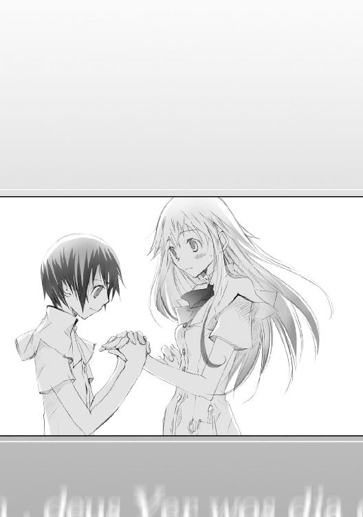
「......痛いです」
「痛くないよ、男の子でしょ？」
からかうように、クルーエルは片目をつむってみせた。
──ごめんね、心配かけて。
でも、少し楽になったよ。自分のこと信じられないなんて、もう言わないから。
「......あのさ」
なんか、キミってふしぎ。
手のかかる弟に思えることも、落ち込みがちな友人のように思えることもある。けど、普通の学友のはずが──なんだか放っておけない、とても大切な人に思えることもある。
わたしには、まだ分からない。
「わたしたちの関係って、何なんだろうね」
ねえ、キミ自身は、どう思う？
「え、か、関係って？ えっと......クラスメイト？」
悩みに悩んだ挙げ句、大まじめに答えてくる彼。
うん。今は、きっとそうなんだよね。だけど──
「でもね、もしかしたら、これから変わっていくかもしれないよ？」
「変わるって？」
「ふふ、何だろうね」
「えー、教えてくださいよ」
首を傾げたまま頰をふくらませる少年。まだまだあどけないその仕草。やっぱり、お姫様を守る騎士にしては、まだキミはちょっと頼りないかもなぁ。
「わたしにもまだ分からないよ。ま、いいやそれは。......あ、ミオ帰ってきた。さ、どこでご飯食べよっか」
「......クルーエルさんずるぅ」
「ほらほら、早くご飯食べないと。午後からクラスのみんなで海行くんだから」
３
頭上から燦々とそそぐまばゆい熱線。珊瑚を細かく砕いて敷き詰めたような白地の砂。透き通った紺碧の海。押し寄せては返す澄んだ波に、日常の鬱憤すら流れていくような。
トレミアの敷地ということで、一種のプライベートビーチのようなもの。まさに楽園と呼ぶにふさわしい。
しかし──そんな光景もいいが、オーマたち男子生徒の関心は別にあった。
「......ネイトの奴、おいしいよな」
日陰で、砂浜に腰を下ろしたまま前方を見つめる水着姿の男子その一。
「ああ、本人があれの価値を理解してないってのが余計にな」
右手にジュース、左手に団扇。それに遮光眼鏡を着用しつつオーマは渋々頷いた。
その視線の先。
水着姿の女子十数人と、それに混じって遊戯に興じる子供がいた。
「ほら、ネイティ、そっち行った！ 拾って！」
「え......あ、え......？」
風に流れるボールを必死で追いかける幼い少年。砂浜に慣れていないのか、その足取りはよろよろと、先ほどからどこか不安定だ。
「あ、あ、あーっ！」
頼りない少年の悲鳴。間を置いて、ぽてっとボールが砂浜に落ちる音。
「あはは！ だめだなぁ、ちび君」
「でも、かわいー」
「うん。かわいいから許す！ ていうかそれでいい！」
少年がボールを上手く繁げた時より、むしろ失敗した時の方が歓声が大きかったりする。
いかに上手いプレイをするかではなく、いかに面白可笑しいミスをするか。そっちの方をこそ、この少女たちは楽しんでいるらしい。
「......あれか、あれがうら若き十三歳の少年の魅力か」
「顔も男というか、中性っぽいしな。背も低いし華奢だし。女子にしたら、からかいがいというか、いじりがいがあるんだろ」
当初あの少年はライバルとして認識していなかったがとんでもない。恐るべき強敵が転入してきたものだ。
「あれ、そういや他の男子どこ行ったの？」
近くの売店に行っている者、海で素潜りを楽しむ者。男子生徒の方はそれぞれが好き勝手しているようだが、それにしても人数が少ないような。
「ん。ほらアレだよアレ」
オーマが顎でさすその方向。遊びに用いるボールを持ったまま表情をしかめる金髪童顔の少女と、それを呆れ顔で見つめる緋色の髪の少女。
「むー。おかしい。バレーの本では確かに理屈上......ここをこう打てばしっかりボールが飛ぶはずなのに。本読んでないクルルのがあたしより上手い理由が思いつかないのに」
「ミオ、だから本に頼りすぎだってば。実際に練習しないと上手くならないよ」
「......そっか。そうかもね」
「それより、泳ぐ練習するんじゃなかったの？」
「うん、それなら今から水泳の本を読んで──」
「......人の話聞いてないわね」
その様子をしばし眺め。
「ミオとクルーエルがどうかした？」
「無謀な奴ら数人。この旅行がチャンスだってあいつらに告白してきたらしい」
ほう。小さく感嘆の吐息を洩らし、男子生徒その一は女子の集団を盗み見た。言われてみれば、男子複数人が狙う理由も確かに納得できてしまう。
ミオ・レンティア──紙上試験では学年随一とも噂される秀才。であると同時に、愛らしい笑顔と穏やかな物腰が際だつ女の子だ。誰隔てなく接する彼女の振るまいは、生徒だけでなく教師からの信頼も厚い。
かたや、クルーエル・ソフィネット。面倒見が良い性格で容姿も頭一つ抜けているし、運動神経も抜群。試験の成績は控えめに言っても良くはないのだが、それもまた愛嬌というものだ。
「で、結果は？」
「『......ごめんなさい。わたしたち、まだそういうの──』だってさ。該当者数人は傷心旅行中。離れた砂浜でしばし心の傷を癒してくるらしい。そっとしといてやれ」
「......次は俺が」
「やめとけ。返り討ちにあう犠牲者が増えるだけだ」
冷淡に視線を交わし、オーマは遮光眼鏡のブリッジを持ち上げた。
「よし、次ボール落とした子、罰ゲームね。ボール落としたら、明日の講義はこの水着のまま出席ということで！」
女子全員が可笑しげに歓声を上げる中、顔を真っ青にする少年が約一名。
「え。ちょ、ちょっとそれは......あの、嫌な予感が」
「というわけで、行くよネイティ」
「う、うわ！ なんでいきなり球が速くなるんですか！」
「あら、ネイト君上手く拾ったじゃない。じゃあもう一度」
「え、な、なんで......いやそれは遠慮──わぁっ！」
「ちっ。二回連続生き残るとは、やるわね」
「あ、あのですね。今あからさまに舌打ちっぽいのが」
「よし今度こそ。じゃあちび君、三回連続に挑戦だ！」
「うわああっ！ やっぱり僕狙いじゃないですかぁ！」
「あっ、ネイティ逃げた！ 全員、追えー！」
「てか、男子禁制なのになんでネイトだけ許されてるの？」
もはや諦めた口調で呟く男子生徒その一。
「許されるっつぅか、むしろ強制参加させられてたしな」
午後、自由時間のため男子生徒全員でビーチに集合という予定になっていた。集合時間、ほぼ全員の姿が見える中、ネイトの姿がどこにもない。
オーマ含め男子一同で探すさなか──突如聞こえてきた擦れた悲鳴。見れば......女子生徒複数人に手足を縛られ、遥か彼方へと連行されていく少年の姿。
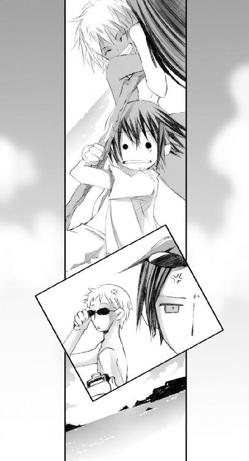
誘拐犯に何度か身柄の引き渡しを交渉したものの、あいにく彼女たちの目的は身代金ではなく、その少年本人だったらしい。
「......く、あれがうら若き十三歳の少年の魅力か」
それ、さっき聞いた。
「男として見られてないってのも、それはそれで哀れな気もするけどな」
「ちょっ、ちょっとオーマさん！ 黙って見てないで助けてくださいぃー！」
今なお、追いかける女子集団から逃走するネイトの姿。
「......今ネイト何か言ったか？」
「いや、聞こえなかった。空耳だろ。助けてくれだなんて俺は聞いてないぞ」
きっぱりと首を振り、オーマは鞄から読みかけの雑誌を取り出した。
......くそ、なんて羨ましいヤツ。
「あーあ。今頃、生徒諸君は海辺で仲良く遊んでるのかな」
砂地を敷き詰めた路面。足下に転がる小石を、ゼッセルはぼやき混じりに蹴りつけた。
「さっきからそればっかりね」
横に立ち並ぶエンネが苦笑する。
「ミラーは情報部に缶詰なんだから、それと比べれば良い方じゃない」
「いや、あいつ海嫌いなんだ。泳げないから」
「......まだカナヅチ直ってなかったの？」
同僚の声に混じる、どことなく楽しげな感情。
水泳の教本を読んだ限り理屈上はこれで浮く──エルファンド学舎時代、水深一メートル二十センチのプールで何度あのインテリがその言葉を残して溺れたことか。
「ほら、卒業旅行でも海行ったの覚えてるか？」
「随分昔のことだけど、まあ一応」
くすりと笑い声を上げ、エンネが口元に手をあてる。普段教師として見せる淑やかな笑みではなく、自分やミラー、幼馴染みの間でだけ彼女がこっそり見せる快活な笑いだ。
「青色名詠を教える教師なのに、よりによって海が苦手ってのが個性的よね」
卒業旅行の五日間。ただ一人ミラーだけは、最後まで海に入ろうとはしなかったのだ。
「まあどっかの誰かさんも、十六歳間近なのに浮き輪使っていましたけど」
「今は泳げるわよ。特訓したもの」
「どうだか、今回も旅行鞄に浮き輪入れてたろ。エンネ先生、案外泳ぐ気まんまんですね」
「......何で知ってるのよ」
ばぁか、鎌をかけてみただけだっての。
むっと口を尖らせる彼女。その様子に微苦笑し──その何気ない会話は、唐突に終焉を迎えた。
砂の路面から一転、硬く乾いた土が広がる敷地へ。
「......さて、お伺いするか」
一息分、ゼッセルは肺に残る澱んだ空気を吐き出した。
ケルベルク研究所、フィデルリア支部。
褐色の巨岩に刻まれた所名を後目に、開放されている門を越える。
......開いてる、か。
それほど広いわけでもない敷地は、雑草が無秩序に繁るだけ。
「誰かいたか？」
「見た感じ、外には誰もいないと思うけど」
「んじゃ、内部の方お邪魔させてもらうか」
研究所正面扉。その脇に設置された来訪者用のブザーに手を触れた。機械的な呼び出し音が内部でこだまし、その余波が正面の扉伝いに自分たちまで響いてくる。
「鳴ってるのは確かだな」
──なのに、なぜ内部からの応答がない？
隣に目配せする。こちらの意図が伝わったらしく、エンネが無言で首肯する。
左手に咄嗟用の触媒を隠したまま、右手で研究所の扉を開いていく。ギィッという錆びついた音を立て、徐々に口を開いていく研究所。
「......暗い？」
電灯が灯っているかと思ったが、内部は数メートル先すら見通せない暗闇の帳が降りていた。やはり、何かおかしい。
開けた扉へ外から陽が差し込む。僅かずつ、数メートル先の展望が明らかになり──
玄関ホールの光景が、視界に触れた。
「............っっ！」
声にならない悲鳴をエンネが上げる。
倒れかける彼女の肩を摑み、ゼッセルはかろうじて平静を装った。
......これは何かの冗談だよな。
石像。最初はそう思った。そう。玄関のロビーに飾ってある記念碑の類なのだろうと。
だが凝視すればするほど、それがただの石の彫刻でないと、嫌でも理解しなくてはならなくなった。あまりに生々しく、そしておぞましい。
お伽話等で何度も読んだことがある。だがまさか、こんな現象が現実にあるだなんて、今、この時まで欠片も信じていなかった。
何かに怯えたような形相の石像。必死で逃げようとする格好の石像。
──目の前にいたのは、石化した研究所の職員たちだった。
４
押し寄せるさざ波の音。靴が白砂を踏む、軽く小さな音色。同じ一歩のはずなのに一つ一つが違う音、聴いていて飽きることがない。潮風を受けながらの砂浜の散歩は、ネイトにとってどこか新鮮なものだった。
「あ、貝殻」
深い紫色の外面に、内側は紅色。不思議な色合いの二枚貝を拾い上げる。
「......クルーエルさんにあげようかな」
昼の青い海ではなく、夕焼けに染まった水平線。夜が始まる直前。だからこそ、余計に陽を身近に感じる時間が夕焼けかもしれない。
ふと。波飛沫に混じり、何かが宙を切る鋭い音が鼓膜に届いた。
──あれ？
自分が進んできた方向の直線上、無人と思っていた砂浜に人影が見えた。歩を進めるにつれ、次第に速まる風鳴り音。速いだけではない、確実に強くなっていた。
既視感。
夕陽を浴びながら鎗を振るう少女が、数日前に見た屋上の光景と重なった。
「エイダさん？」
一度目は純粋な驚愕。二度目となる彼女の鎗術を見て、その凄まじさをネイトはようやく悟った。
以前見た時は、その動きの華麗さのみに目を奪われていたが──今彼女が振るう鎗には美しさの中に、背筋を凍らせるほど冷たい、研ぎ澄まされた鋭さがあった。
自由を奪う砂の足場にもかかわらず、まるで動きに衰えがない。なにより、踏み込みや跳躍、それらの動作がまるで無音なのだ。砂を蹴る音すら聞こえない。
あまりに静謐。あまりに澄みきった流れ。
鎗術会。そんな、部活などという幼いレベルのものではない。
......違う。あの時と何かが違う。
素人のネイトでもはっきりと分かる。屋上で見た動きも驚いたが、今の少女の鎗はそれすら通り越し、見ていて恐くなるほどだ。
そして──少女が片手で鎗を携え、全身を回転させると共に、更に鎗を高速で振り回す。
そう。あの時、屋上で彼女が鎗を落とした場面。
片手で回す、廻す、舞わす。
十回、二十回、三十回。
いつまで経とうと、彼女が鎗を落とすことはなかった。
にわかに、少女の動きがそこで止まる。小さく洩れる吐息。この暑さの中あれだけの動きを見せておきながら、しかしその呼吸は一糸の乱れもなかった。
「......二度目だね、ちび君」
困ったような照れたような、複雑な表情でエイダが苦笑する。
「あ、あの。また鎗の特訓ですか」
「半分当たりで半分ハズレ。まあ正解にしてもいいんだけどね」
それきり会話が途切れる。てっきり彼女の方から二の句を継いでくるかと思っていたが、彼女は自分の握る鎗を、哀愁にも近い視線で見つめているばかり。
「エイダさん、本当すごいです」
「ん、すごいって？」
「お昼にあれだけみんなと一緒に騒いでたのに、夕方またそんな特訓してるだなんて」
クラスの皆はと言えば、今は一斉に部屋で休んでいる。自分も今までばったりと寝ていて、少し前に目を覚ましたばかりだ。
「もう、ご飯食べるのとかと同じくらい習慣になっちゃったからね。十何年同じこと続けてれば誰でもそうなるよ」
十何年？ 鎗術会はトレミア・アカデミーに来てから入ったはずだ。それならまだ半年も経っていないはずなのに。
「ちび君はあれだっけ。名詠士になりたいのは、お母さんの遺した名詠を完成させたいからだっけ」
「はい。名詠士になるかどうかはまだ決めてないんですけど、まずは母の名詠式ができるようになりたいなって」
「──そっか」
ぎゅっと鎗を握りしめ、彼女はゆっくり頭上を見上げた。
「......ちび君は怒るかもしれないけど、あたしはそういうのだめなんだ。だめっていうか、もう逃げ出してきた後なの」
ゆっくり、ゆっくり、自らに教え聞かせるかのように少女が息を吐く。
「あたしの場合はね、生まれた家が特殊だったの。祓名民ってわかる？ 一言で言えば、名詠された物を還す専門の職業みたいな感じの連中」
祓名民。記憶の器をどれだけひっくり返しても、その単語の欠片すら出てこなかった。
「......ごめんなさい、僕まだ勉強不足で」
「ううん、ちび君が知らなくて当然なんだ。詠び出す側じゃなくて還す方。なんつか、地味なんだよ。でっかい生物出すとかそういう派手さがないからね。知名度も名詠士と比べて当然低いわけでさ。それを知ってあえて祓名民を志望する人はホント少ないの。だからこそ、祓名民は父から子へと家系を以て受け継がれることになるわけだ」
仮に、とある街で名詠が暴走したとする。この時、暴れる名詠生物を取り押さえるために別の名詠生物を詠んだとしたら、名詠生物同士の戦いで街はさらにぼろぼろになってしまう。たとえば競演会時のヒドラに同じヒドラをぶつけたとしたら、街一つがそのまま廃墟と化すのは想像に難くない。
となれば、被害を抑えつつ名詠生物に対処するには、反唱が望ましい。しかし近くにいる名詠士が、たとえばミオやクルーエルなど女性しかいない場合、暴れる名詠生物に触れるという作業は非常に危険。
よって、反唱のためだけに知識と技術をつみ、暴れる名詠生物にも対抗できるよう心身を鍛え上げた『反唱のプロフェッショナル』が必要となった。
「それが今の、祓名民の始祖というわけ。もちろん、今も祓名民として頑張ってる人はすごいと思うよ。身体張って命かけてる職だからね。一日たりとも一定量の訓練を欠かさない、尊敬すべき人たちだから」
だけど──溜息にも似た吐息をこぼし、エイダがうつむく。
「それでもやっぱり、知名度はすごく低いんだ。名詠士みたいな専門学校も無いしね。ただ延々と、独りぼっちでの練習。華やかさなんて欠片もないよ。......祓名民って特殊な読み方も何か語源があるらしいんだけど、親父は教えてくれないの。ただ名詠士に対する劣等感から生まれたものじゃないかって、疑いたくなっちゃうよ」
自嘲じみた微笑を浮かべる彼女。応えに迷い、ネイトはそっと視線を逸らした。
「エイダさんのお父さんも、祓名民なんですよね」
「......うん。一応祓名民の本家がユンでその家長だから、名実共に祓名民のトップだろうね。色々大陸を回っているみたいでやたら顔が広くてさ、親父が知人を集めた一つの会合ってか集団があるんだけど、そこにはあのカインツ様も入ってるくらいだからね」
「カインツさんが？」
名詠士には、出身校や人脈繁がりで大きな派閥が十数個ほど存在する。
組織のメリットは大きい。職の斡旋、売名、著名な要人との会合。トレミア・アカデミーの教師も、学園運営本部が形成するグループに名を連ねているはず。生徒も、トレミア・アカデミーを卒業して名詠士になった時、まずはそのグループに加入するのが恒例だ。
虹色名詠士であるカインツ。聞くところによれば、しかし彼だけは、なぜかどの組織にも入ろうとしないという。当然多くの呼び声もかかっただろうし、彼が顔を見せればどのグループだって重役扱いで彼を受け入れるはず。なのに、いまだ彼は独り気まぐれな行動を好む。一時期、それが逆に注目を集めたほどだ。
「まあ、カインツ様はちょっとした傍観者的な参加らしいけどね。でも時々うちの家に来ることもあるみたい。大抵あたしが学校にいる間だけど」
「......すごいですね」
「カインツ様だけじゃないよ。他にも大勢、他から見たらすごいを通り越して変人としか思えない連中がたくさん。むしろそれの巣窟みたいな会合だよ」
もはや言葉が出ない。それだけ偉大な父親を持っているなんて。そう。普通の人間であればそう考える。それは素晴らしいことだ、と。
けれど──それを口にする少女の双眸は、寂しげな色に揺れていた。
「そのリーダーの長子に生まれちゃったもんだから、......色々窮屈な思いをしてきたよ。決められた日課、決められた道、決められた将来。他の子が友達と遊んでる時も、あたしは独りでずっと祓戈だけを握ってた」
鎗の先端に輝く宝石。恐らくはそれが送還用の触媒なのだろう。
彼女が祓戈と呼ぶ鎗。そう言えば、屋上で見たときの鎗は、何の細工もしていない普通の鎗だった。
「......気づいた？」
泣き笑いのように、彼女が唇の端を微かに持ち上げる。
「あたしはずっと祓戈を使っていたから、重さも長さも祓戈のものを身体がすっかり覚えちゃってるの。それが、部活の鎗は部指定のだから、当然重さから何から全部違うの。その違いに違和感あってさ......部活の鎗持った時はよく失敗するの」
屋上で鎗を落とした時、彼女がそれをじっと見下ろしていたことを思い出す。あの凝視の意味が、ネイトにも少しだけ分かった気がした。
「部活動の鎗と祓戈って、そんなに違うんですか」
「ううん。あたしが祓戈に慣れ過ぎちゃっただけ。祓戈の重さは零コンマ一グラムだって間違えないし、間合いだって零コンマ一ミリも間違えない。だからこそ、少しでも違うと歯車が全部狂っちゃうの」
〇・一グラム、〇・一ミリ。それをごく当然のように口にする彼女。
けれど、そんなことが本当に可能なのだろうか。少なくとも自分は、普段使ってるペンの長さだって覚えていないし、言い当てられる自信はない。
「エイダさん、もしかして反唱も複数色使えるんですか」
反唱の術式も通常の名詠同様、五色それぞれに分かれている。名詠対象を還す専門の職だというのなら、もしや──
「......うん。あたし物覚え良くないけどさ。それでも反唱だけは複数色覚えてるよ」
反唱の習得は名詠よりも容易と言われている。トレミアの中にも複数色をマスターしている教師はいるだろう。しかし生徒でそれをとなると話は別だ。
──それを誇らしげに語るどころか、その素振りすら普段この少女は見せたことがない。
噓をつくような人じゃない。だけどにわかには信じられなかった。彼女の告げるそれは、あまりに自分の常識を超えた領域だったから。
「言うと馬鹿にされることあるんだけどね、こいつはあたしの......最初の友達だったんだ」
宝石の施された鎗を胸に抱き、少女が身体を強張らせる。
「ううん、友達っていうか、今はもう自分の分身みたいなもんだよ。ずっとずっと一緒にいる。重さも長さも、お互い知らないことはない──そんな関係」
......でもそれも、もういいの。
乾いた声音が、彼女の小さな口唇からそっとこぼれた。
「少しね、家に決められた道以外のことをしてみたいんだ。実はあたしの母親が名詠士の資格持っててさ、昔から名詠学校には興味あったの」
「......そうだったんですか」
「トレミア・アカデミーに来て友人もたくさんできたしね。ちび君じゃないけど、ここに来て本当に良かったなって思う」
多くの友人に恵まれ、部活に入り、学校生活を心から楽しんでる。それは普段の彼女の様子からも伝わってくる。
けど──解らない。
「エイダさん」
一つだけ、一つだけどうしても解らない。
「でも、それならどうして祓戈を使って、今もこうして練習してるんですか」
そうだね。どうしてだろう。そう呟き、彼女は独り言のように唇をふるわせた。
「......あたしにもよく分からない。でもたぶん、もう後悔したくないからじゃないかな」
後悔？
「うん。もうあの夢は見たくないんだ」
あの夢。後悔。それは、どういうことだろう。
どれだけ彼女の横顔を見つめても、揺れる瞳の奥底は、何か大切なものをしまったまま、どこか遠くの景色を映すだけだった。
５
「......衣服の皺までここまで緻密に」
触れないまでも、ゼッセルは目の前の石像ぎりぎりまで近づいた。
十数体の石像。服の繊維すら真似た質感の石像など、今まで見たことがない。いやそもそも、石像が浮かべる恐怖の表情だけで十分だ。ただの彫刻では決して及ぶことなき、圧倒的なリアリティ。
「どうやら、思い違いでもなさそうだな」
「人が石化するなんて......そんなことが」
消え入るように洩らし、同僚たる女性教師が後方へとよろめいた。その肩を強めに叩き、ゼッセルは一歩だけ足を進めた。
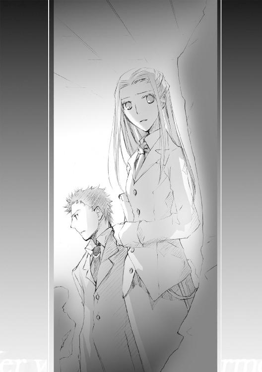
「エンネ、石像に触るなよ。カラクリが分からないんだから用心に越したことはない」
「──学園長に連絡」
思い出したように呟く彼女。
「それは、報告できるだけの材料を揃えてからだ」
そう。自分たちはまだ、研究所の玄関ホールにいるに過ぎない。この先この奥、何が起こっているのか。最低でもその状況を、可能なら原因の追求までだ。
「......うん」
ホールの暗がりに白光が差す。
「行きましょ」
エンネの左手に、名詠によって生まれた白色の光球。
「お願い、わたしたちの少し先を照らしながらゆっくり進んで」
無生物のような外見だが、その実態は第三音階名詠に属する光妖精。危険を察知すると点滅する習性がある。白色名詠士が探索用に好んで用いる名詠だ。
通路前方十メートルほどが見渡せる光量。その光が照らす周域には石像はない、そのことにひとまずは安堵する。
だがその代わり。
──なんだこの灰？
前方の通路を見据え、わずかに歩行速度をゆるめた。
通路の隅に散る、膨大な量の灰燼。何かが燃えた後の残滓？ いや、それならこの研究所だって相応に焼け焦げているはずなのに。
「何かは分からないけど、なるべく踏まずに歩いた方がいいかもね」
「だな──んっ？」
つと鼓膜を揺らす音。カサッという、何かが擦れたような音に反射的に振り向いた。
「どうしたの？」
先導するエンネが足を止める。応えるより先、まず自分たちの背後を確認した。
何もいない......俺の気のせいか。神経が過敏になっているからか？
「いや何でもな」
言葉尻は、突如消滅した光妖精の光量と共に消えた。
「えっ？」
エンネの声。それと同時、周囲が再び暗がりに包まれる。
光妖精が突然消えた？ 自然消滅にしては異常なほど早い、早すぎる。
やはり、この研究所には何かがある。いや、何かがいる！
──『Keinez』──
右手に持った触媒を元に、手元へと一握りの炎を詠ぶ。
光妖精ほどの光量ではないが、これで数メートルは............
一瞬、目の前の光景に自身の目を疑った。
......おい、ちょっと待て。......なんだこいつは。
先を歩いていたエンネの、その最寄りの壁に──灰色の壁と同化するように、同色の鱗を持つ大蛇がずるずると這いずっていた。
「エンネっ、伏せろ！」
「え？」
突然の警鐘は逆効果だった。呆気にとられたようにエンネがこちらへと振り向く。すなわち、謎の蛇に対し背を向ける。その蛇が鎌首をもたげ......
「エンネっ！」
蛇が口を開け襲いかかる。
選択肢を迷うだけの時間はない。無防備の同僚を力任せに反対側の壁へと突き飛ばした。
さくり。耳元で、何かが自分の肩を穿つ音がこだました。あまりに微細な、恐るるに足りないとすら思えるほど呆気ない音。
だが、蛇の牙が肩の肉を穿つ激痛だけは本物だった。
「......痛っ！」
「ゼ、ゼッセル！」
彼女の声にいちいち答える余裕はなかった。
左肩に嚙みついて離さない蛇の頭部を右手で握り、力任せに引き剝がそうと試みる。が、蛇は強固にその牙を突き立てたまま。
「こ......のっ......！」
明かりとして名詠しておいた炎を摑む。その炎を直接、蛇の頭部に押し当てた。
炎に炙られ蛇がのたうち回る。緩くなった顎を持ち、一気に肩から剝がす。なおも暴れる蛇を、ゼッセルは力任せに床へと叩き付けた。床を這いずる大蛇。まだ息はあるものの、さすがに再度飛びかかってくる気配はない。
左手の出血を確かめようと視線を自分の肩先へとやり──
「......そういうことか。ようやくここのふざけたカラクリが見えてきたぜ」
「ゼッセル......肩！」
エンネの掠れた悲鳴。
灰色に石化した左肩。痛みも違和感もない。ただ自分の腕でないかのように、どれだけ力を込めても肩から先が反応しない。
こいつが、玄関ホールにあった石像の原因か。
「考えるのは後だ！ とにかく一度ここを出るぞ！ この研究所はやばい！」
歩いてきた通路を駆ける。だが二人の足はものの数秒で凍りついた。
......今まで何もいなかったはずなのに。
歩いてきた通路を埋める、灰色の石竜子。その壁には今襲ってきたものと同じ大蛇が、それも上壁から横壁までを塗りつくすように這い近づいてくる姿。軽く見積もっても優に十体。
通路に堆く積もっていた灰の山を思い出す。あの中に隠れていやがったのか。だが腑に落ちない。そこまでして侵入者を出口へ向かわせたくない理由はなんだ？
もし研究所内部に入れさせないことを目的とするならば、この名詠生物たちを隠しておく必要はない。最初から玄関前で威嚇させているはずなのに。
むしろこれでは、最初は研究所に誘うことを良しとするような──
「......なるほどな」
立ちつくすエンネの肩を摑む。
「ゼッセル？」
出口を塞ぎ経路を断つ。自然、侵入者にとって残された道は一つ。
そう。このふざけた悪戯を施した奴は、俺たちを研究所の奥へ招待しようとしているに違いない。
「エンネ、逃げる方向はこの奥だ！」
エンネの背を押し、ゼッセルは通路を駆けだした。
研究所の奥へ進む方向へと。
間奏 『それは、夏の冷たい風に誘われて』
湿気と熱を帯びた微風に、にわかに混じる冷たい冷気。夏のこの時期に、ふと気候がもたらした気まぐれな悪戯。肌を冷やす風に身をさらしたまま、クラウス・ユン・ジルシュヴェッサーはまぶたを閉じた。
......もう、一年が経つのか。
一年前に娘と交わした口論。一字一句、まるで違えることなく覚えている。
〝なんで、なんであたしだけこんなことしなくちゃいけないの！〟
去年のまさに今頃だった。あの暑い日の、暑い夜。
O toga Wemmillmo,HIr shoulda ora pegilmerigiris endezorm
〝他の子が友達と遊んでるのに、なんであたしだけ毎日毎日──〟
エイダ・ユン。娘は生まれた時から専用の祓戈を与えられ、物心がつくと同時、祓名民としての教育を受け始めた。
祓名民としての修行。その過酷な鍛錬は、控えめに言っても常軌を逸するものだ。その訓練は陽の昇る前より始まり、終わりはない。筋肉が悲鳴を上げ骨が泣き、呼吸すらままならない状態でなお鎗を振り続ける。精神が摩耗し意識を失って、ようやくその日一日の修行が終わるのだ。
Lor be seGillisufeo olfeycori endeolte
〝辛いとかそういうのじゃない。ただ......あまりにもくだらないんだ〟
ユン家の一人娘として、それはすなわち、いずれは自分の後を継ぐ者として。
自分を含め、周囲の期待はあまりに大きいものだった。だからこそ、娘に課した鍛錬も相応に苛烈なものだった。成人男性でも音を上げる鍛錬を、まだ学校に行く歳にすら達しない幼い少女がこなす。できなくて当たり前。これは最初から、挫折を学ばせるためのものだった。
誰もが無理だと思っていた。自分も、娘が音を上げるものと思っていた。
──だが、娘はその修行に耐え切った。
熾烈な鍛錬をただ乗り越えただけではない、娘の鎗術に対する習得速度は異様なものだった。まだ十を少し過ぎた年齢でありながら、自分を除くなら娘の技量を上回る者がすぐには思い浮かばないほど。
その才能は才能という言葉すら超え、狂気と喩えた方が正確なのかもしれない。それこそ、父である自分が恐ろしく感じるほどに。
恐ろしい、だが同時に、それは自分にとって最高の誇りでもあった。
紛うことなき天賦の才。親馬鹿と言われようと、外へ出かけた時は娘の自慢話に夢中になっていた。娘の訓練の最中は、娘に気づかれない場所で、ずっとそれを見守っていた。それだけ娘を愛していたのは、今なお胸を張って宣言できる。
祓戈の到極者。とある条件を満たした時に冠することを許される後名。祓名民としての訓練を修める者の多くが三十代にようやくその後名を許される。自分が二十四でそれを付与された時、周囲からどれだけ持て囃されたことか。
エイダ・ユン・ジルシュヴェッサー。
それを、わずか十六歳の少女が冠することの特異性。異常性。
認める者、尊敬に値する者は今まで何人も見てきた。だが娘に対してはそれすら超えた、ある種畏怖の感情を禁じ得ない。
祓名民の最も気高き血。最も濃き血。先人より受け継いだ全ての技術と歴史を受け継ぎ、さらにそれを凌駕し昇華させるに足る、至高器。
しかし──
〝あたしは、もうこんなつまんない生活はこりごりだ〟
あの夏。あの暑い日の夜更け。
唐突に、娘は自分の部屋に怒鳴り込んできた。
......いや、思えば、薄々と予感はしていたのかもしれない。
「エイダ。この道が、本当につまらないだけの道と思うか」
あの日返した言葉を再び呟く。
娘は泣いていた。何を思って泣いていたのかは分からない。
父に対する怒りか、哀しみか。自分の生まれた家系が持つ定めの苦しみか、悔しさか。
〝親父こそ、そう思ったことはないの？ 生まれた時からこれをやれって決められて、一生死ぬまで同じことの繰り返し。それに疑問を思ったことは本当にないの？〟
ole shanilis, pegloar, pegkei, Hiret univasm hid
Hir bequsiGillisuxshao elesm thes,neckt ele
「......あるさ」
かつて、娘と対峙したときは意固地に「ない」と言い張っていた。
けれど、もう認めよう。あれは私の拙い噓だ。
「祓名民の家系に生まれた者は誰だって一度は同じ疑問に辿り着く。──私だってそうだった」
庭園に植えられた大樹。その太い幹にくくりつけられた的。長きにわたる訓練の果てに幾千幾万の小穴が穿たれた的。ただずっとその的に向かい鎗を突き出す日々。
「だが、それでもある日気づいたよ」
名詠士に〈讃来歌〉があるように、祓名民に伝わる祀歌。セラフェノ音語に隠された、その歌詞の語る意味に。
Hir bequsiGillisuxshao elesm thes,neckt ele
誰に言われたわけではない。この道は、自分で選んだ道だった。
〝......親父、あたしには分からない〟
「分からないわけじゃない。お前がまだ気づかないだけだ」
「gil」、セラフェノ音語における『前』。
「ilis」、セラフェノ音語における『望み』。
祓名民の名の由来。父がなぜこうも根本的なことを未だ伝えずにいたか。
願わくば、そのことを自ら悟って欲しい。
──『gillisu』
この道は、きっと誰かを......
四奏 『守れる鎗の道行きを、教えてください』
１
分校、一階。ホールに設けられた休憩席に人影はなく、時折通路を過ぎる足音を除き、ホールは真冬の湖のような静けさを保っていた。
......まあ、今って本当は授業時間だから仕方ないけどさ。
その休憩席の端。テーブルに頰杖をついたまま、エイダはガラスの壁越しにじっと外の景色を眺めていた。
「──自主勉強するにしてもなぁ」
ぺらぺらと、テーブルに置いた教科書を適当にめくっていく。そのページに記された内容をざっと流し読む。が、それもせいぜい数十秒。すぐに脱力の吐息をこぼし、エイダはテーブルにうつぶせた。
机の上で本をじっと読むという行為が、とにかく自分はだめなのだ。そう。外で身体を動かしていた方がずっと楽。祓戈を握っていた方が──
「あー、違う違う！」
......もうっ、何考えてるんだあたしは。
自分はもう祓名民じゃない。名詠を学ぶ生徒なんだ。
そう、祓戈だって要らない。......要らないはずなのに。
〝でも、それならどうして祓戈を使って、今もこうして練習してるんですか〟
「......そうだね、どうしてなんだろう」
テーブルに寝そべったまま、視線だけを天井の照明へ。
昨日のネイトからの問いかけには、正直言葉に詰まった。
骨の髄まで染み込んだ祓戈の感触。鎗術会という部活に入ったのだってそうだ。やめたくてやめたくて、なのに、気づいた時には鎗を振るってる自分がいる。
もう一度同じ問いに遭遇した時、自分はなんて答えればいいんだろう。
脱力するようにまぶたを閉じ、数分──
ふと、微かな足音がホールに響いた。どうせ校舎の用務員か誰かだろう。そう決めつけ、一度は開いたまぶたを再度閉じる。
だが。その足音は通り過ぎるどころか、自分のすぐ背後で止まり──
「あれ。エイダ、どうしたの」
ん、この声？
聞き覚えのある声に、ゆっくりと顔を持ち上げた。眠気の残るぼんやりとした視界の中、クラスメイトの少女がこちらを覗くように見下ろしていた。
「クルーエルこそ、今は授業の時間でしょ？」
「うん。まあそうなんだけどね。なんか自習になっちゃったから」
飲み物の入った紙コップと自習用の教本を携え、対面にクルーエルが腰掛ける。それを待って、エイダはやんわりと口を開けた。
「......ねえクルーエル、前から気になってたんだけど、ちび君と仲良いよね」
「ちび君て、ネイト？」
紙コップに口をつけつつ、彼女がぽかんと首を傾げる。
「そそ。ちび君から聞いたよ。夏休み、ずっと名詠の練習付き合ってあげてたんだって？」
「ずっとじゃないよ。わたしの時間ある時だけ」
けろりと、涼しい顔で答えるクルーエル。
わたしの時間ある時だけ──もっとも彼女のことだ、自分の使える自由時間は全てという意味に違いない。
......あのね、それをずっとって呼ぶのよ。
「お姉さん役ってやつ？」
「そんなんじゃないよ。ただ、ちょっと放っておけないっていうか」
「ま、十三歳だからね。おっちょこちょいな部分もありそうだし」
どうにも忙しない彼の様子を思い描き、小さく苦笑した。転入した当日、実験室で名詠を暴発させて真っ黒な煙を詠んだのは今も記憶に新しい。
「それもあるよ。でも他にも......色々とね」
色々の中身については、クルーエルは言ってこなかった。ただ彼女の表情を見るに、それほど底の薄いものでないことは想像がつく。
「やれやれ、ちび君も大変だねぇ」
「ちび君も、って？」
耳聡く、友人は言葉の端を聞き返してきた。
「......えっとさ」
微かに、エイダは目を伏せた。
「──たとえばね、クルーエル。もしウチのクラスにさ、ちび君以外にも独りぼっちの子がいたとしたらどうする？」
「......たとえば、誰？」
その双眸に緊張を映し出し、彼女が押し殺した声で聞いてくる。
「たとえば、あたしとか」
しかし、自分がそう口にした途端。
「あー、平気。それは無いから」
ぱたぱたと、気軽な口調でクルーエルは手を振ってきた。
「え、平気って？」
「まーったく、何を言い出すかと思えば。あなたが落ち込んでる姿なんか見た日には学校中が大騒ぎよ。生徒会が臨時の集会騒ぎ、新聞部が総動員で取材に来て、ミステリー調査会も原因の究明に動き出すってば」
......え、ちょ、ちょっとそれはひど──
「そもそもそんな質問、らしくないよ。いつもの体力馬鹿で大騒ぎして先生に怒られて、おまけに遅刻魔のエイダじゃないと」
「......あ、あんたね」
表情を引きつらせながらも、何とか平静を保つ。うん、保ってるはずだ。あたしは冷静。決して、テーブルの下で拳を握りしめてなんかないぞ。
「──でも」
やおら、つい直前までのふざけた表情から一転。
「本当に何か困ったことがあったら、やっぱり話してほしいな。話を聞くだけでも、してあげられると思うから」
......相談か。それができればいいんだけどね。
胸の内だけで、エイダは首を横に振った。
親にも教師にも言えない悩み。相談しろと言うのは至極簡単。だけど悩んでる人間にとっては、それこそが一番勇気の要ること。相談なんて、それができれば──
「『それができれば苦労はしない』、エイダ、もしかしてそんなこと考えてる？」
前触れ無く、対面に座る彼女がぴしゃりと言い切った。
いつになく強い声音。まるで、その問いに絶対の自信があるかのように。
「......何でそう思うの？」
「わたしが、ついちょっと前までそうだったからだよ」
粛々と、クラスメイトは告げてきた。
「......あんたが？」
「うん。こう見えてわたしだって、ずっと迷いっぱなしだったんだから。こう言うと変に思われるかもしれないけどさ、学校に来るのも億劫な時があったくらいずっと迷ってた」
教室ではそんな素振り一切なかった。明るくて面倒見が良くて、そんな明るいイメージしか、エイダはクルーエルに抱いてなかった。......でもきっと、彼女のそれは噓じゃない。そうじゃなきゃ、あたしの気持ちを先読みなんてできるわけがないから。
「でもその分ね、他の人の似た気持ちも分かってあげられたらなって思うんだ」
胸に手を当て、しずしずと話す少女。
「だから、何かあったら言ってきてね。相談なんて堅苦しいことじゃなくて、学校の寮でわいわい話を聞くことだってできるもん。わたしで良いならいつでも。友達でしょ？」
テーブルに頰杖を突いたまま、そのクラスメイトはにこりと微笑んでみせた。
「............」
「ん？ エイダ？ どうかした？」
「......なんでもないよ」
見つめてくる彼女から、エイダはそれとなく顔を背けた。
話を聞いてあげる。彼女のその言葉はもちろんありがたい。だけど──悩みこそ違えど、自分のように迷ってて、それでも頑張ってる子がいた。その事実こそが、今の自分には嬉しいことだった。
「ま、一応お礼は言っておくね。でも気にしないで、ただ言ってみただけだから」
そっと椅子から立ち上がり、二、三回その場で身体を伸ばす。
「あ、そういえばさ。エイダはどうしてこんな時間に休んでるの？」
「講義担当のエンネ先生が体調崩したんだって。専攻生徒は休講みたい」
今日の朝唐突に告げられた休講告知。部屋にいても暇なのでぶらぶら校舎を徘徊、それにも飽きて、ホールで休憩していたというわけだ。
「あら、わたしのとこと同じか。うちも先生が風邪ひいたとかでさ」
「クルーエルの専攻って『Keinez』だっけ。先生誰？」
「んと、たしかゼッセルって先生。普段最上級生を教えてる先生だったかな」
......ゼッセル先生？
クルーエルの応えに、内心エイダは眉根を寄せた。
おかしい。エンネ教師の話を信じるならば、エンネとゼッセル両教師は、体調を崩していた教師の代理として合宿に参加したはず。その二人が、時同じくして体調不良？
「ねえクルーエル、昨日も『Keinez』の講義はゼッセル先生だったんだよね」
「うん。昨日は元気そうだったけど」
昨日は普通に講義ができていた。エンネ教師も同じだ。そしてもう一つ、自分の記憶が確かならば──昨日の二人には共通点があった。
「あたし昨日、授業終わった後ゼッセル先生とすれ違ったけど、たしかあの先生、割とまともな服着てたよね。一日目の列車なんかラフなシャツ姿だったのに」
「そう言われてみればそうね。珍しいねって他の子も言ってたかも」
トレミア・アカデミーにおいては教師用の上着が支給されているものの、基本的に日常の服装は教師に裁量が与えられている。ゼッセル教師はどちらかといえば、普段は割と軽装を好むタイプだったはず。
その教師がいつになく正装。それも真夏のこの時期に？
ざっと考えられるのは──大事な会議か場に出席、あるいは誰かがこの分校に来るか、逆に誰か要人の下へ行くか。
大事な会議か場。まずこれは考えにくい。本校ではなく分校で、しかも夏期休暇の合宿中に重要な会議があるとは到底思えない。
だが、わざわざ客人を分校で迎え入れる必要性はない。本当に大事な用があるなら客人の方が本校に来るだろう。逆に、些細な用件なら手紙でも何でも構わないはず。夏休み、それも合宿中の分校に要人が来るというのは現実的ではない。
ならば消去法で残るのは、誰か要人の下へ行くという選択肢。
......思い出せ。昨日のエンネ教師の授業を。
あの時エンネ教師は模擬試験を生徒に与え、終わった者から即座に教室から出て行かせた。実際、自分を除くなら全ての生徒が、実際の講義終了時間より早い時刻に教室を後にしていたはずだ。
──講義終了時間を早める必要性があったとしたら？
そしてその時刻、自分は通路でゼッセル教師とすれ違った。エンネ教師から離れる自分とすれ違う。すなわちゼッセル教師が歩いていた方向は、エンネ教師が講義を担当していた教室。つまりあの後、ゼッセルとエンネ両教師は二人でどこかに行く予定があった？
どこかに行って......そして現在、二人は何かしらの理由で教鞭がとれない状態にある。
それを裏付けるのは臨時の休講。もし事前にこの休講が分かっていれば、教師側もあらかじめ二人の代役を立てていたはず。つまりこの休講、教師側にとっても不測の出来事だった可能性が高い。
「ねえエイダ、ちょっと不自然な感じしない？」
自習用の教本を片手に、クラスメイトの少女が立ち上がる。やはりと言うべきか、クルーエルも同じ疑問を持ったらしい。
「まあ、やたら変な感じするわね。クルーエル、どうする？ 時間ある？」
「いいよ。どうせ休講だし、このまま腑に落ちないのも嫌だから付き合ってあげる」
互いに目配せし、そして二人は互いに相手から背を向けた。確かめることは──体調を悪くしたという教師二人が、本当に今この分校にいるのかどうか。
恐らくは、二人はこの分校にはいない。
そうだとして、二人が急遽外に行く理由は何だ。
「クルーエルは一階の看護室お願い。あたしは二階、教師の控え室覗いてみるよ」
コン、小教室の扉が小さくノックされた。
手元の試験用紙から視線を持ち上げる。扉が開き、そこには黒髪長身の少女が。
「おいっす、ネイティ。こんな教室に一人で何してるのさ？」
「あ、サージェスさん。おはようございます」
両手にレポート用紙と筆記具を携えた彼女。その後ろの通路では、何やら数十人の生徒たちがまとめてどこかに移動している。
「あれ、どこか行くんですか」
「うん。『Surisuz』専攻者はみんな海辺に集合だってさ。センセが模範演技見せてくれるんだって。その後は自由時間になるっぽいし」
「模範演技ですか、楽しそう」
いや、まあ見てるだけってのも眠たくなるんだけどね──あっけらかんといった面持ちで呟き、彼女は肩をすくめてみせた。
「興味あるならネイティもこっそり来る？」
「......僕、まだ歴史学の単位取れてないんですよ。この補講期間中に取りましょうって、ケイト先生がつきっきりで教えてくれてて」
「あれ。ていうか、その肝心のケイト先生は？」
きょろきょろと教室内を見回し、サージェスが首を傾げる。
「なんか今日の朝に急用が入ったみたいです。『午前中は昨日の箇所の小テストやってて』って言ったきり、どっかに行っちゃいました」
「あらら。まあ頑張りなさい、少年」
そう告げ、彼女がきびすを返す。そのまま教室の扉を閉めて出て行く、そう思いきや。
「あ、そうそう」
背を向けた姿のまま、彼女は思い出したように言ってきた。
「ネイティ、そういやあたしがこの前言った、屋上に行ってみなっていうのはどうなった？ 会えた？」
「はい、エイダさんですよね」
「どう思った？」
ひどく抽象的な彼女の問いに、ネイトは天井を見上げつつ。
「どうって......すごいなぁって。鎗術会にも入ってるし、他にも......えと、祓名民でしたっけ。それも習わされているんだとか」
「そっか、まあそう見えるかな」
こくりとサージェスが頷く。その納得にも似た仕草のまま。
──習うなんて......そんな生やさ............じゃないらしいけど──
「え？」
背を向けたままの彼女の言葉。あまりに微かな声音に、最後まで聞き取ることができなかった。
「あ、あの」
今なんて。そう訊ねる前に、やおら彼女はこちらへと振り向いた。
「あたし寮があの子と相部屋だからさ、色々聞いてるの。......ネイティ、エイダの件は、あまり他の人に喋っちゃだめだよ」
「は、はい」
理由は訊けなかった。そう告げる彼女の声音が、とても悲しげだったから。
「あの子が、自分からそれを言えるようになるまでね」
「エイダさんが、ですか？」
「うん。あの子、自分が『違う』ってこと、すごく意識しちゃってるから」
──違う？ それってどういうことだろう。
こちらの困惑に気づいた様子もなく、彼女が扉によりかかる。いつになく弱々しい双眸は、教室の窓を越えた、さらに遠くの場所を見つめていた。
「ばかだよね、あの子。自分がそっちだから仲間外れなんじゃないかって、いつか嫌われるんじゃないかって、ホントはいつも気にしちゃってるんだよ......そんなわけないのにさ」
「あ、あの。それってどういうことですか。僕、エイダさんのこと嫌ってなんか──」
「ううん、あの子が勝手に思い込んじゃってるだけ。ネイティの気にすることじゃない。......だけどね、ネイティ、これだけは覚えておいて」
ふたたび、彼女が背を向ける。
「ネイティとは違う理由で、昔、あの子も独りぼっちだったんだ」
分校二階、連絡室。無線のための機材に向け、ケイトは極力平静にと努めた。
「ゼッセル先生、あるいはエンネ先生からの連絡......やはりそちらもありませんか」
「本校側には来てないな」
通話先の相手は、ただ淡々と事実を述べてきた。
「ケイト、もう一度確認させてくれ。ゼッセルとエンネがケルベルク研究所へと発ったのが昨日の午後一時過ぎ。それ以降二人からの定期報告が途切れたわけだな」
「──はい」
壁にかかる時計は現在九時半。
二人の姿を分校で最後に確認した時から、既に二十時間が経過している。
「現在こっちは、学園長が臨時の用で外出だ。かといって俺から勝手な指示を出すわけにもいかないからな......生徒はどうしてる？」
「休講処置をとっています。全ての講義を取り消すと生徒側も不審がるでしょうし、他の講義は予定通りです」
数秒、通話先の相手が沈黙する。
ミラー・ケイ・エンデュランス。
ゼッセル、エンネ教師と同期の教師であり、今はトレミア・アカデミーの情報処理部門にも籍を置いている知識人。
「たしか、君の方も午後から講義があるはずだったな」
「ええ。午後からは全ての教師に講義予定が組まれています」
今はまだ自分の手が空いている。しかし午後になれば、連絡を絶った二人の対応にあたれる教師がいなくなる。本来なら早急に対応班を設置するべきなのに。
「......怪しいのは、言うまでもないな」
無線機の声に小さく首肯する。ケルベルク研究所支部、やはりあの場所で何かが起きたと考えるのが自然。
「わたしが──」
「だめだ」
わたしが偵察に。そう言い終えることすら許されなかった。
「あの二人もそれなりに警戒して赴いたはずだ。万全の用意をしていた二人が、なおどうしようもない状況に陥るような場所だとすれば、君一人で行くのはあまりに危険だ。二人、いや最低三人のチームを組んで行くべきだ」
それは......そんなことはわたしだって知っている。
自分はまだ教師として着任したばかりの半人前。経験も知識も足りないこと、他ならぬ自分が一番よく分かっている。
「今日の夜七時までに二人から何かしらの連絡がない場合、夜八時の列車で俺もそちらに向かう。それまでは待つんだ。同僚を信じて」
一方的に回線が切られる。
壁に掛かった時計を一瞥。夜七時まで、優にまだ十時間を残している。
だけど......それまで待てるわけがないじゃない。
仮に何かしらのアクシデントに巻き込まれても、あの二人ならいくらでも連絡の手段を名詠できるだろう。それすらない状態、それはどれほど深刻な状況なのか。
──やっぱり、せめて遠巻きに研究所を見てくるぐらいは。
教師にあてがわれたロッカーへと向かう。人工の宝石、自分が調合した触媒。自分の最も扱い慣れた触媒を持てるだけ、服の裏地に仕込まれた収納部に隠し入れる。
「......二人とも、どうかご無事で」
若葉色のスーツを羽織った教師が通信室を出、急ぎ足で通路を進む。通路に響く彼女の足音に自らの足音を重ね、エイダはそっと教師の背を追った。
──ケイト先生、どこかへ行く気？
教師の足取りに迷いはない。二階から一階へ。そして玄関フロアを出て校舎の外へ。
......しまったな。
予想以上に教師の行動が迅速であったことに、エイダは苦虫を嚙みつぶした。
部屋の外壁に密着し聞き耳を立てたものの、部屋内で喋るケイト教師の声はほとんど聞き取れなかった。いや、万一にも周囲に聞こえぬよう、教師の方が意図的に声量を抑えていたのだ。
ただ一つ分かることは、今から自分の担任教師がどこかへ向かおうとしていること。
僅かに開いている扉から内部を窺う。よほど急いでいたのか、開きっぱなしのロッカー。察するに、名詠用の触媒まで念入りに選んでいたらしい。
──やっぱりだ、ちょっと物々しすぎる。
教師の表情に浮かぶ緊張も、普段のそれと明らかに異なる。
さて、どうする？
今からではクルーエルに連絡しているだけの時間がない。動き出すのは午後かと思っていたが、まさかこの時刻からとは。
仕方ない、自分だけでも後を尾け────ん？
ふと背後に感じる気配、無意識のうちに振り返る。
「あれ、エイダさん？」
そこに、深い夜色の髪をした、まだ幼い顔立ちの少年が立っていた。
２
研究施設。薄暗い小部屋で息を殺し、扉向こうの気配を探る。
扉に耳を当てること数秒──あの生物たちが近づいてくるような物音はない。十秒......二十秒。優に一分は聞き耳を立てていたが変化はない。
......ふう。肺の中の澱んだ空気をエンネはようやく吐き出した。
「ひとまずここは安全みたいね」
直線の続く通路を脇にそれた小部屋。数人分のソファに楕円形のテーブルが目に付く、おそらくは休憩室か。
「腕、どう？」
ソファの背にもたれかかるゼッセルへと振り返る。苦笑混じりに、同僚は動く右腕で石化した左手を叩いてみせた。
「どうと言われても、別段痛いわけじゃないし違和感もない。ただ、どうやっても肩から先が動かないけどな」
玄関ホールに隠れ潜んでいた灰色の蛇と石竜子。そして同様に、あの石化した研究所職員も多くが玄関付近に集中していた。彼らがあの蛇と石竜子の軍勢にやられたことはまず間違いあるまい。
「あれだけの名詠生物。一人で全部詠び出したとは考えづらいな」
視線をテーブルへ向け、彼が押し黙る。そう、それは自分も疑問視していたこと。
──けれど、今はより早急に、優先させて考えなくてはいけないことがある。
「さしあたって、あなたの左腕を治すことを考えないとね」
まずゼッセルの言うとおり、あれは名詠生物だと思った方がいい。
現在のところ判明している事実は、あの生物たちが例外なく灰色だったということ。そして、この研究所の至る所に積もった大量の灰。そして、灰色の表皮を持つ生物たち。両者に関係性がないとは考えにくい。
あの灰の中に蛇と石竜子は隠れていた。しかしこれらが実は、名詠生物の隠れ家ではなく、本来名詠の触媒として用いられたものだとしたら？
「燃えがらの灰を触媒に？ そんな名詠聞いたことないぞ」
「まだ判断材料が少なすぎて何も分からないわ。とにかく今は、あの生物たちが名詠生物であると仮定して動きましょう。そう考えればある程度納得がいくわ。そして、そう考えることのメリットもある」
「メリット？」
オウム返しに訊ねてくる彼の左手を、エンネは凝視した。
「この現象が名詠生物によりもたらされたものならば、あなたの石化した腕も職員たちも、治す手段がある。腕を石にしている名詠効力を送り還せばいいはずだから」
「──反唱か」
名詠生物の中には毒の牙を持つ種も存在する。その毒は名詠生物本体が消えてもなくなることはなく、毒そのものを還すことで対処するのが常套。その応用として試みる価値はある。
「ほんとはそっち専門の祓名民がいればいいのだけど。わたしだと時間かかるかも」
スーツの内側から、液体状の触媒が入ったフラスコを取り出す。
「ここで焦ったって仕方ないだろ。のんびりやってくれ」
達観したかのように、幼馴染みは飄々と言ってきた。
「......ケイト先生、どこ行くんでしょう」
心もち抑えた声で、ネイトは先を行くエイダの背中に訊ねた。
「ま、尾いてけば分かるよ」
日焼けした肩をすくめてみせる彼女。
回答を終えた試験用紙を抱え職員室に向かう、その途中のことだった。
〝ちび君。念のためさ、あたしと一緒についてきて〟
言われるままにケイト教師の後を追って、もうどれだけ歩いただろう。十分、もしかしたら数十分？ 尾行という慣れぬことの緊張と疲労で、時間感覚が麻痺している。
教師の進む道は砂浜に面した一本道。周りには瘦せた木立がまばらにある程度。後を追う際に身を隠す場所が限られている。おまけに足下は砂利地。足を踏み出すたびに足下の砂が弾け、小さな足音を立ててしまう。
そのはずが──聞こえる足音は、先を行く教師と自分の二つだけだった。
自分のすぐ前を歩いているはずの少女の足音が、ぞっとするほどに静かなのだ。
砂地に足跡すら残さない無音の歩行術。砂浜で、彼女が鎗の訓練をしていた時のことを思い出す。あの時も、砂浜には足跡が残っていなかった。
......これも、祓名民の訓練で培ったことなのかな。
祓名民──名詠を送り還す者。名詠士とまるで対照的な人間。
〝ネイト......名詠って、なに？〟
かつて病床の母が伝えてきた、あの言葉。
〝名詠とは自分を詠ぶためのもの。わたしはそう思ってるの。自分の心を形にして詠び出すことが本当の名詠式だと思ってる〟
あの日の母の言葉を信じるならば──自分の心そのものを名詠によって詠び出すならば、なぜそれを送り還す必要があるんだろう。
......お母さん、僕ね、まだ分からないかもしれない。
他ならぬ母の言葉、信じたいに決まってる。けれど、祓名民として一生懸命生きている人たちがいることも、紛れもない事実。
「あ、あのエイダさん」
「ん？ なに、ちび君？」
「い......いえ、ごめんなさい。何でもないです」
胸の奥のしこりを残したまま、ネイトは口をつぐんだ。
僕には分からない。ねえ。エイダさんも、そうなんですか？
名詠士も祓名民も捨てられなくて、でもその歌と鎗の間に挟まれたまま動けなくなっちゃって、だからこんなに苦しんでるんですか？
先を行く少女の背中は、何も語ってこなかった。
沈黙したままの彼女。一歩だけ、ネイトは彼女との距離を詰めた。
少しでも、彼女との心の距離が近づくことを信じて。
──ケルベルク研究所、フィデルリア支部。
道の先に、そう刻まれた案内板が見えてきた。
灰色と化した左腕。石化したその表面にぴしりと罅が入っていく。亀裂。それは指先から始まり肘先まで伸びて──
「おい、これ」
まずいんじゃないか。同僚が言い終える前に、エンネはその口元に手をあてた。
「平気。動かないで」
そう告げる自分の視線は、あくまで彼の肩先。
......よし。罅の内側から、淡い白光が洩れだした。水蒸気が立ち昇るように、光の粒が少しずつ部屋の天井へと昇っていく。反唱の効果が現れている証拠でもある。
白光の粒と共に、石化した灰色の部分までもが併せて剝がれ、そして。
「さて、どうかしら」
色を取り戻した左肩に安堵の吐息をこぼし、エンネは額に浮き出た汗を拭った。
言われるまま、彼が左肩に力を込める。
「......動く。痛みも違和感もないな」
ゼッセルの様子を見る限り、石化する前とまるで変わりない。正直、治癒したとしても何かしら後遺症が残るものと互いに覚悟していたのだが。
「不幸中の幸いってやつか」
「あら、わたしに謝礼は？」
すると、幼馴染みは妙にあどけない笑みを浮かべてきた。
「帰ったら新品の浮き輪買ってやるよ」
「期待してるわ」
一瞬口元をゆるめたものの、すぐにエンネは表情を引き締めた。
「一つ分かったことがあるの。一応『Surisuz』・『Beorc』も試したけど、そっちでの反唱は効果が薄かった。効果があったのは『Arzus』。無理やりカテゴライズするならば、この名詠は『Arzus』に近い」
「......近いって、どういうことだ？」
効果があったのは確かに『Arzus』。けれど実際にやってみて、自分の知る『Arzus』とは何かが違ったのだ。『Arzus』の亜種......ううん、そこからさらに派生し変化した名詠？
学術的に言うなれば、五色の内の白色名詠。反唱が効くのだから、それは間違いないと思う。だけど、完全にそれと位置づけてしまうのは相応の危険を伴う。
「便宜上今は、これを『Isa』とでも言った方がいいかもしれない」
そう。つまり灰色名詠。
それも、ただ灰色の物を詠ぶだけじゃない。相手を灰色に、すなわち石にする名詠なんだ。そう仮定すればほぼ全ての現象の説明がつく。
「灰色名詠？ んな色そうそう認められるのか？」
怪訝な表情つきで同僚が口を挟んでくる。むろん彼の言い分も分かる。この世界に存在する名詠式は全部で五色。例外はない。そう自分も信じていた。
「でも、わたしたちはその例外を知っている」
夜色名詠という名の例外。
夜色の歌い手を、その詠を、その真精を、わたしたちは目の当たりにしたのだから。
「......まあそうだけど」
憮然とした面持ちで彼が押し黙る。
「夜色名詠を異端とするなら、灰色名詠はさしずめ『Arzus』の突然変異。それも、ものすごく攻撃的な変異ね」
本来好戦的な生物が少ないはずの白色名詠。それが、研究所一つを丸々落とすほどに凶悪な攻撃色になるなんて。
「気にくわないって表情だな」
「こんなの、本当の名詠の使い方じゃないわ」
これが『Arzus』の派生形ならなおさらだ。どんな理由があろうと、こんな非道い真似は間違ってる。
「なあ、ここの研究員たちも治せそうか」
......そうしたいのは山々なんだけど。
「ただ、今ここでそれをしてる時間的な余裕はないわよ」
もうかなりの時間、外部との連絡を閉ざしてしまっている。分校、あるいはトレミア本校でもその状況に混乱していることだろう。本来一刻も早く連絡をとらなくてはなるまい。が、大量の名詠生物群が今も退路を塞いでいるはず。
「ひとまずここの研究所の奥へ行きましょ。これだけ大きな施設なんだから、緊急避難通路の一つや二つあるはず。厄介な連中が群れてる出口より逆に楽かもしれない」
体温を取り戻した左腕を軽く回しつつ、腰掛けていた同僚がソファから立ち上がる。
「気乗りはしないけど、他に選択肢ないもんな」
疲れた表情で頷くゼッセル。その肩に手をやり、せめて自分も頷いてみせる。もはやそれくらいしか、できることが思いつかなかったから。
──急ぎましょう。わたしたちもそろそろ体力が限界に近い。
３
ケルベルク研究所？ こんな場所に、ケイト先生が何の用なんだろう。
案内板に刻まれた見覚えのない名に、エイダは内心眉をひそめた。前方にうっすらと確認できる、何かの巨大な施設。おそらくはあれが研究所なのだろう。
ちび君、そろそろ気をつけて。そう口にしようという矢先。カツン、歩道に突き出た岩に、ネイトの靴先がぶつかった。
ぁっ......少年が小さく悲鳴を上げる。
「誰っ？」
途端、前方を行くケイト教師が弾かれたようにこちらへと振り返ってきた。
あちゃ、まずぅ。慌てて最寄りの木々に身を隠す。
「ご、ごめんな──うぎゅっ」
だめ、静かに！ 声に出して謝ろうとするネイトの口を無理やりふさぐ。が、そうするやいなや、前方の教師が声を張り上げてきた。
「そこ、誰かいるの！」
薄々、尾行られているという予感はしていたのだろう。教師のそれは疑問ではなく確信の声音だ。
「エ、エイダさん。どうしましょう」
......どうしましょうと言われてもねえ。
「あと五秒待ちます。それまでに出てきなさい」
あのね先生。そう言われて出て行く輩がどこに──
「出てこないなら、その木々一帯に名詠で大粒の雹を──」
「なっ......ま、待って、タイム、先生早まらないで！ ほらあたしあたし。先生の可愛い可愛い生徒だから！」
沈黙。
ややあって、教師は呆れ気味に言ってきた。
「あいにく本物のエイダなら、教師の前ではきちんと姿を見せると思うのだけど」
本物のエイダならって......既にエイダだって分かってるくせに。
一度大きく嘆息し、エイダは木陰から歩道へと歩を進めていった。
「うー、分かりましたー。あたしたちの負け！ ほら、ちび君も出た出た！」
「う、うわっ。......エイダさん、いきなり蹴るのひどいです」
「ネイト君まで？ あなたたち、一体どうしたの」
呆れ半分驚き半分の眼差しで見つめてくる担任教師。
「いやぁ先生、偶然ですね。あたしたち、たまたま散歩がしたくなりまして」
精一杯ごまかし笑いを浮かべたものの。
「あ、あの。ケイト先生の行き先が気になるってエイダさんが」
「うわっ、ちび君裏切り者！」
プレッシャーに負け、隣の優良真面目少年があっさり吐いてくれた。
「ふぅん。エイダがねぇ。エイダ、もちろん話してくれるわよね？」
「え......ええとっ......そのですね、何と言いますか」
──先生、触媒持ちながら脅してくるの恐すぎなんですけど。
「ここが研究室か」
周囲を一通り眺め、ゼッセルは腕を組んだ。
巨大な研究部屋。周囲に散見する各種実験装置。溶液に満たされた、半透明の水槽。共通点と言えば、それらが例外なく破損しているということ。そしてここにも数体、石化した職員の姿。
研究所の至る所で見られる、石化した職員たち。つまりこの現象は研究所全体に関わる出来事だったということか。
職員間での抗争か。あるいは──
「得体の知れない何者かの襲撃、というところかしら」
低く抑えた声でエンネが呟く。瞬き一つせず、彼女はじっと正面の文字を見据えていた。
Lastihyt ;miquvy Wershela-c-nixerarsa
メインルームにそびえる白亜の中央柱。高価な石材を用いて建てられたであろう室内用の石碑に、緋色の塗料で刻まれた歪な字体のセラフェノ音語。
「ラスティハイト。何かの名前？」
──いや、これは。
「人名だ」
足早に石碑に近づき、擦るように指先でその石肌を削る。さらりと、微かに剝がれ落ちる塗料。いや、塗料の役割を果たしていた物。
どす黒い赤。なるほど、血液ってわけか。
「二年......いやもっと前、三年前かな。カインツが、確かその名前の奴を探してた」
「カインツが？」
目を細め、同僚が薄紙一枚分顔をこちらへと向けてくる。
「理由までは聞かなかった。だけどこんな奇妙な名前、それ以外に聞き覚えない」
黒く変色した血文字から目を逸らす。
奥へと続く通路。壁に貼られた間取り図──この先が最奥、最も広いメインホールになっているらしい。
「急ぎましょう。あまり長居するような場所じゃないもの」
先導するようにエンネが通路へとつま先を向ける。その背中を追おうとし、だがその直前にゼッセルは足を止めた。
研究室内に幾度となくこだまする、機械的な呼び出し音。
「ブザー？」
誰かが来た。可能性としては、自分たちを探しに来たトレミアの教師。
「......だけど、まずいな」
あの玄関ロビーには、危険な名詠生物たちが今も息を潜めて隠れているのに。
「──で、わたしの行き先が怪しいからって後をついてきたのね」
エイダの言い訳じみた白状に、ケイトは大げさに目元を押さえた。
「だって気になるんだもん。エンネ先生もゼッセル先生も分校校舎にいないだなんて、探したくなっちゃいますよ」
悪びれることなくうそぶく教え子。まったくもう......推測というか嗅覚というか、こういう時だけ鋭いのも困りものだ。
「で、先生ここ何？」
眼前のケルベルク研究所を、のほほんとした様子でエイダが指さす。
「知り合いの研究所よ」
「いや、まあそれは分かりますってば。どっちかと、気になるのはエンネ先生とかゼッセル先生とかが分校校舎にいない理由でして。ケイト先生がこんな場所に来るのも、何か関係があるのかなーと」
何か、まだ特別な理由があるんですね──白々しくも、言外にそう告げてくる。
「それに関しては、正直わたしにも分からないわ」
視線を前方へ。鈍色の壁に囲まれた施設が肉眼でも把握できた。
ケルベルク研究所、フィデルリア支部。〈孵石〉を精製し、そしてトレミア・アカデミーへと持ち込んだ研究所。
ゼッセル・エンネ両教師が訪れたはずの場所。自分の教え子をこれ以上同行させるのはあまりに危険。なのだが......あいにくここまでついてきてしまった時は、どうするべきか。今から帰れと言われてすぐ帰るような雰囲気でもない。
それに、もう一つ。既に最悪の状況が研究所内で起きていた場合、誰かを分校への連絡役として必要とする可能性も零ではない。
「......あなたたち、一つ約束して。わたしが帰るよう指示した時は、何があってもそれを優先すること」
こくんと頷く両生徒。それを確認し、ケイトは研究所の敷地に足を踏み入れた。
「あの、勝手に入っちゃっていいんですか？」
「トレミアとの協力機関だから。トレミアの教師とケルベルク研究職員は、相互施設への出入りが許されてるわ」
......それにしても、この静けさは何。
敷地に人ひとりとして姿がない。この不自然な静寂、逆に鼓膜が痛む。
──本当に、ゼッセル教師とエンネ教師がここに？
施設の正面扉脇に備え付けられたブザーを押す。扉一枚を通じて、内部で呼び出し音が鳴り響いていることが伝わってくる。
「......誰もいないんでしょうか」
「それは、ちょっと考えづらいわね」
少年の疑念に応えるように再びブザーへと手を伸ばす。
数秒。数十秒。内部からの応答はない。いやそれどころか、研究所内部から職員の会話すらまるで聞こえてこないのだ。
「ねえセンセ」
扉の鍵口をじっと見据えたまま少女が促す。
「その扉、開いてるっぽいよ」
扉の取っ手に手を触れ、力を込めた。軋んだ音を立て、僅かな砂埃を伴って扉が動く。
「そのようね」
一度、肺に残る澱んだ空気を吐き出した。この生徒たち二人を帰すための機を失ったことへの嘆息、もう半分は自分にも理解できぬ何か。決意か、それとも不安か。
「開けるわよ」
それは背中の二人ではなく、自分に言い聞かせるためのもの。
ゆっくりと、擦れた悲鳴にも似た音を響かせ扉が開いていく。暗がりに包まれた玄関ホールへと足を踏み入れる。
自分たちの眼前に、奇妙な光景が展開していた。
「......なに、これ」
玄関ロビーに並ぶ、十数体にも及ぶ奇妙な格好の石像たち。訝しげに表情を歪め、少女がそれの下へと歩み寄っていく。石像。それも一つや二つではない。石像の共通点は、どれも胸元に何かペンダントのようなものを。
いえ、違う。これは研究所職員用のネームプレート。けれどなぜ、この石像がわざわざ職員用の物を？ これではまるで────いや、まさか。
さっと脳裏をよぎる悪寒に背筋が粟立った。
「二人とも、石像から離れなさい！」
「え？」
「先生、どうしたんですか」
石像に触れようとしていたエイダ、一方で玄関ロビーを左に曲がる通路まで足を進めていたネイト、二人の声が唱和する。
「ここは危険よ、今すぐ分校へ戻ります！ ネイト君も早くこっちに戻ってきて！」
疑念の表情ながらそれでも小走りで駆け寄ってくる少年。
それを遮るように。
灰色をした何かが天井から落ちてきた。細長い、くねるように蠢く何か。少年の前に立ち塞がるように鎌首をもたげ──
「蛇っ？」
二メートル近い灰色の大蛇を前に、少年の足が止まる。なぜこんな施設内に、いや、そんなことを考えている場合じゃない。
「先生っ！」
背後ではエイダの悲鳴。
「分かってます！ ネイト君、後ろに下がって！」
少年目がけて襲いかかろうとする大蛇。果たして間に合うだろうか。衣服の衣囊から人工サファイアを取り出した。片手に携えた触媒が澄んだ青色の名詠光を放つ。
だが、それよりも早く。
「違うっ！ 先生、後ろっ！」
背後に控える少女が、悲鳴を超えた絶叫を上げた。
......え。
両足に走る微かな痛み。同時、その両足が、岩のように動かなくなった。
最も離れた位置にいた──最も出口に近い位置に立っていたエイダだけは、その時起きた出来事の一部始終を理解できた。
──天井から降ってきた謎の生物は、確かに灰色の大蛇一匹だけだった。
自然、ネイトやケイト教師たちの注意はその蛇一体に釘付けになる。いや、自分もそうだった。視線はその蛇にしかいっていなかった。だがこの場には、灰色の生物は一体ではなかったのだ。
自分が気づいたきっかけは、何かが地を這う微かな物音。それは、教師の足下すぐ近くから聞こえていた。
......え。
研究所の床に積もった大量の灰。それが動いていた。より正確に言うならば、その灰の下に隠れた何かが動いていた。
石竜子？
普段見るものより妙に手足が長く細く、鋭利な爪を持つ石竜子。それも一体じゃない。二体、いえ三体？ 明らかな敵意の光を眼に灯し、灰色の生物が教師の足下へと忍び寄る。
ケイト先生は──だめだ、大蛇の方に注意がいってしまってる。
「先生っ！」
「分かってます！ ネイト君、後ろに下がって！」
触媒を携え、大蛇を見据えたまま教師が応える。
違う！ その蛇はただの囮なんだ！ 本当にやばいのは──
祓戈を置いてきたことに歯嚙みしかけ、だがすぐに思い直した。
ううん、あたしは祓名民じゃない。今のあたしは名詠士になろうとする生徒なんだ、今こそ名詠で何とかしないと。だけど......
......だけど、何を詠べばいいの？
自分に行使可能な名詠ストックを思い出し、言葉を失った。ただでさえ攻撃的な生物の数が少ないのが白色名詠。皆無という訳ではない。けれど、それらはどれも自分の実力で詠び出せるようなものじゃない。
......だめだ、あたしの名詠じゃ何もできない。
「違うっ！ 先生、後ろっ！」
ただ教師に向かって叫ぶしかなかった。教師が慌てて振り向く。だがその警鐘はあまりに遅すぎた。教師の死角となる足下、足首めがけ石竜子が爪を振り翳す。
その爪が教師の足を僅かにかすめた瞬間、女性教師の足はもはや足ではなくなっていた。
埃が空を舞うほどの微かな音もなく、瞬間的に教師の足が灰色に凍り固まる。
「ケイトせんせ──」
だが。
ともすれば石化という現象自体既に予想、あるいは覚悟すらしていたのかもしれない。自由を奪われた両足の事をまるで気にすらかけず、あろうことか。
「来ないでっ！」
その教師は真っ先に、教え子たる自分に向け片手を突き出してきた。残る片手、触媒となる宝石が暗い玄関ホールを煌と照らす。
──『Ruguz』──
教師が床へ宝石を叩き付ける。刹那、その地点を発生点とし、巨大な氷壁が玄関ホールに聳え立った。自分と数多の灰色生物群を隔てる氷壁。出口に近い自分はいい、しかし灰色生物群の集う領域には、ケイト教師及び小柄な少年までも含まれて。
「せ、せんせ──」
「エイダ、あなたはこのことを分校の教師に伝えなさい。早く！」
「で、でも！」
「ネイト君はわたしが何とかします。氷壁がある間は、この生物たちもあなたを追えないはず。その隙に、できる限りこの研究所から距離を置きなさい！」
その理論に説得されたわけではなかった。
──あたし、何もできないの？
それが本当に正しい理論なのか、最上の選択肢なのかすら定かでない。だがそれでも、教師の必死の気迫に圧されエイダは駆けだした。
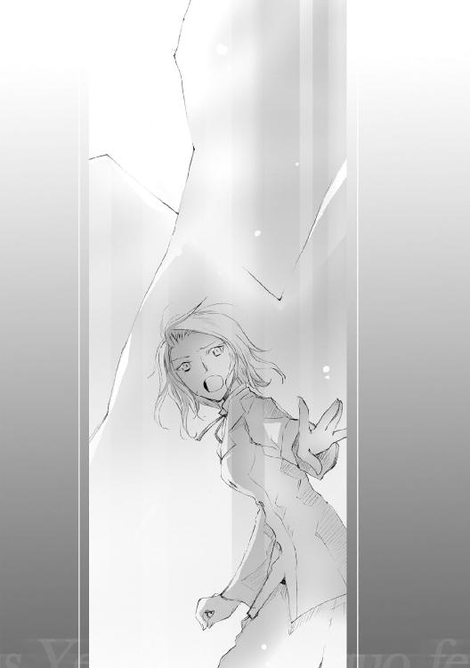
「先生、ちび君！ ......ごめんなさいっ！」
玄関を越えて外へ脱出する。風の悪戯か、それとも教師の策か。自分が外へ飛びだすと同時、今まで口を開けていた扉が音を立てて閉まっていった。室内の状況がまるで分からなくなる。悲鳴も物音も聞こえない。
「ごめんなさい......ごめんなさい......あたし............」
──馬鹿だ。
あたしは、どうしようもない馬鹿だ。
教え子の少女が玄関を飛び出していく。ひとまず一人分の無事は確保できた。そのことに多少なり安堵する。残る教え子は一人。
その残る一人に向かって、ケイトは声を振り絞った。
「ネイト君、あなたはその通路の奥へ向かいなさい！」
大蛇と対峙する少年が、慌てたように顔を持ち上げる。
「でも、先生は！」
「わたしは──」
平気です。無事です。必ず後で追いつきます。あまりに拙い言葉しか浮かばない。そんな気休めの言葉には、きっとこの少年を動かせるだけの力はない。
だから。頷く代わり、衣服から蓋付きのフラスコを取り出した。
「ネイト君」
せめて微笑んでみせる。名詠を志す者に、それを教える側の者として。
「......頼りない先生でごめんね」
再度、触媒を床に叩きつけた。床に零れた水面が光り輝き、そこに青い名詠門が生まれる。天井まで届く氷壁──それは少年と大蛇を阻む場所に。
これで彼の方もひとまずは安全だ。その代償に、全ての灰色生物の視線が自分へと突き刺さる。......そう、これでいい。わたしはこれで......いい。
「ケイト先生っ！」
「奥へ逃げなさい。エイダが助けを呼んでくるのがいつか分からないけど、それまでじっと隠れてて！」
「でもっ──」
「......頼りなくて、本当にごめんなさい」
教え子を守るつもりが、囮役だけで精一杯だなんて。
わたし、やっぱりまだ......先生なんて呼ばれる資格、ないのかな。
......まただ。
どうしようもない自分の無力さに、エイダは唇の端を嚙み切った。
絶え間なく移り変わる風景。全力疾走で、もうどれだけ走ってきたか。酸欠によって引き起こされる頭痛。心臓が痛み、肺が悲鳴を上げている。だがそれでも、走り続けた。
走ることしか、今の自分には贖罪されていないのだから。
──また、あたしは何もできない。逃げるだけだ。
学校の競演会、あのキマイラたちに襲われた時だって、あたしは逃げてた。
名詠士になりたくて、祓名民になるのが嫌で、名詠士としての自分のまま、ずっとずっと怯えてた。......ううん、怯えたフリをしてた。
名詠士としての自分には何もできない。もしあの時、自分が祓名民として振る舞っていたならば──少なくとも、あたしは守ってもらう立場じゃなかった。誰かを守れる立場にいたはずだった。
だけど名詠士として生きてみたくて、その結果、友人が大勢傷ついた。
〝ちび君はあれだっけ。名詠士になりたいのは、お母さんの遺した名詠を完成させたいからだっけ〟
〝......ちび君は怒るかもしれないけど、あたしはそういうのだめなんだ〟
〝少しね、家に決められた道以外のことをしてみたいんだ。実はあたしの母親が名詠士の資格持っててさ、昔から名詠学校には興味あったの〟
でも、それならなぜ今も祓戈を使って練習してるのだろう。
〝......後悔したくないから〟
あの時、競演会で感じた無力感。もう同じ後悔をしたくないから。
もうあの日の夢は見たくない。
だから、今も自分は祓戈を捨てきれなかった。
──なのに今もあたしは。
ケイト先生を、そしてあの幼い少年を見殺しにして一人で逃げてきた。
......親父──あたしは──
あたしは......どうすればいい！
「急げ、エンネ！」
全力で、薄暗い通路をゼッセルは駆け抜けた。
その前方を光妖精の幻灯が照らす。
数分前に聞いた呼び出し音。もしトレミアの教師が自分たちを探しにこの施設まで来たのなら、当然あの玄関ホールにも足を踏み入れてしまったはず。
......だが、おかしい。
既に玄関部に相当近づいているはず。灰色名詠の生物たちが襲いかかってくることは覚悟していた。なのに、いまだ一匹も現れないとは。
胸に渦巻く疑念を残したまま、玄関ホールへと続く最後の角を曲がる。
「──っ！」
まず目についたのは天井まで届く巨大な氷壁。その脇に添うように、無数の氷塊が乱雑に転がっていた。氷塊の中に閉ざされているのは、見覚えある灰色の名詠生物。
そしてその氷塊に混じり──床に伏せたまま微動だにしない人間の姿。
見覚えある形状のスーツ、学園で何度となく見かけたあの服装は。
「ケイトっ！」
最悪の予感に背筋を凍らせながらも、同僚の下へと駆け寄った。
慌てて抱き起こす。肩に触れた手にはスーツの感触はなく、ざらっとした石の質感。
「............ぁ......」
目を瞑ったままの女性から僅かに吐息が洩れる。その肩、背中、両足。五体の半分までもが石化しかかっていることに怖気だった。
「エンネ、早くっ！」
「もうやってるわ」
肩先から背中にかけ、広範囲に渡って灰色の光粒が立ち上る。うっすらと色を取り戻していく同僚の身体。
「......おい。これ」
ざらりとした石の質感はひとまず消えた。だがその後に残ったものは──ぬるりとした冷たい感触。......まさか。
彼女の背中にあてていた手を持ち上げる。掌に付着していた、大量の血。──しまった。血を止めていた石化が解け、かえって出血がひどくなったのか。
「悪い、背中開けるぞ」
スーツを脱がせ背中の部分のシャツをはだけさせる。傷痕そのものは小さいが、深い。大蛇の牙に背中を襲われたのか。問題は、その位置が心臓部に近いということ。
傷口に止血用の布をあて、包帯を肩から回して固定する。
「用意いいのね」
反唱を続けながらエンネが視線をこちらに向けてくる。
「赤色名詠士の場合、いよいよになったら自分の血を触媒に使うからな。その後に出血が止められませんてのは洒落にならないから、わりかしこの手の物は携帯してる」
だがこの傷、この程度で果たして応急処置になるかどうか。
「......ま......」
微かに、まぶたを閉じたままケイトが口元をふるわせた。
「まだ......残っ......てる」
残ってる？
反射的に周囲を見渡す。通路に撒かれた灰。燃えがらの粉塵の下、何かが蠢いた。
──俺たちが来て、ひとまず身を潜めてたってわけか！
「くそっ、こんな時に相手なんかしてられるか」
相棒である青色名詠士がいないことに歯嚙みする。密閉空間は赤色名詠士の弱点だ。相手を倒すために炎を盛大に詠びだせば、たちまち自分たちもその煽りを受ける。最悪この施設全体が燃え上がってしまう。
──やはり、何が何でも俺たちを奥まで行かせたいってことか。
玄関部、脱出を遮るように群れ集う名詠生物。
「ゼッセル、どうするの！」
「ケイトは俺が背負う。逃げるなら非常通路の方だ」
進むべき道は研究所最奥、大ホール。
その先に何かがある。その確信だけはもはや絶対に近かった。
４
分校の校門、その両脇に見覚えある教師たちの姿があった。
「エイダっ、今までどこ行ってたの。勝手に校舎から出ていって──」
「ごめん先生！ 後で話すから！」
「なっ......ちょっと、エイダ！」
肩を摑もうとする腕を強引に振り払う。その勢いのまま校舎の内部へ。
──ケイト先生は事情を話せと言っていたけど、そんな悠長な真似してられない。
分校三階、クラスの女子にあてがわれた部屋。
無人の部屋、その片隅に駆け寄る。無造作に置かれた自分の荷物、その脇の壁に立てかけてある、布にくるまれた細長い何か。
......結局。あたしにはこれしかないのか。
施設に残っている先生を助ける方法は、今の自分にはこれしかない。
そう、後悔したくないから。
「親父、あたしは別に祓名民になるって決めたわけじゃないんだから！」
通路を駆ける。長大な得物を持った自分を奇異の視線で見つめる生徒、教師たち。
......はは、懐かしいや。あたしがトレミアに入学した時、祓戈を持ったまま入学式に出た時も、初めはこんな感じで見られてたっけ。
そういえば、あの時は、どうやって最初に友達ができたんだっけ。
あの時は──
頭を過ぎるのは、黒髪長身の少女だった。トレミア・アカデミーの女子寮で自分と相部屋の子。一番最初に向こうから声をかけてくれて、偶然同じクラスで、そこから徐々に友達が増えていった。
彼女が、名詠学校の生徒として見つけた最初の友達だった。
ロビーへ続く最後の角を曲がる。その直前、その角の陰からトレミア・アカデミーの白制服が見えた。こんな馬鹿長い鎗を持って廊下を走る女の子。驚くか、からかわれるか、そう、そのどちらかしかないと思ってた。けれど──
「よっ」
その角から現れた生徒がしたことは、自分に向かって片手を上げることだった。
黒髪長身の、見覚えあるクラスメイト。
「......サージェス？」
なんで、なんでここに。
「あれだけ大騒ぎして戻ってきて、今度は大慌てで階段降りてくるんだもん。誰だって気づくよ。それより、その鎗──」
「こ、これは......！」
反射的に、自分の携えていた鎗を後ろに隠した。自分の背丈より長い鎗。隠しきれるはずがないのに。
「ち、違うんだ。あ、あのさ......あたし......」
何かを言おうとして、けれど声にならなかった。
あ......あたしはあんたと同じ名詠を学ぶ生徒で、この鎗は......今この時だけなんだ。だから......お願い、嫌わないで。ずっとずっとあたしたち、友達のままで......。
「ばか、何小さくなっちゃってるの」
萎縮する肩に、サージェスが唐突に触れてきた。
「......サージェス？」
「決めたんだろ？ そっちの道を選ぶんだって」
突如通路に鳴り響く靴の音。通路の奥、複数の教師たちが走り寄ってくる。
「ほら早く行きな。センセには話つけておくから」
にこやかに、力強く、その友人は自分の背中を押してきた。
「......ねえ、サージェス」
「うん。なにさ」
「これからも......友達でいてくれる？」
「ばーぁか」
背中合わせの少女は、心底呆れた声で。
「そんなこと心配する暇あったら、することしてさっさと戻ってきなさい」
その瞬間。なにか、とても重い枷が音を立てて外れていった。
普段その重さに慣れているはずの鎗が、今までになく軽い。
......聞いたか、親父？
たとえあたしが名詠士じゃなくたって、それでもあたしの居場所はここにある。ここで待っててくれる友達がいるんだ。
「いいじゃん。あたしだって、たまには女の子したくなるんだよ」
「はいはい、分かりましたよ」
それ以上、友人は何も言ってこなかった。
──ありがとう。
振り返ることなく、エイダはロビーを走り抜けた。
教師が構える校門に行き着く直前。
「......エイダ！」
聞き知った声が背中に届いた。振り返った先、緋色の髪をなびかせる少女が自分に向かって駆け寄ってくる。
「エイダ、あなたどこ行ってたの！ ネイトもケイト先生もいなくなっちゃって、先生たちが大騒ぎしてるのよ！」
「ごめん、今それ話してる時間ないの」
「待って！」
背を向け走りだす。その直前、彼女は力ずくで肩を摑んできた。
「つまり、ケイト先生とネイトの居場所知ってるのね？」
「クルーエル、あたし急──」
言いかけた言葉は、彼女の二の句によって消え去った。
「急いでいるなら、何とかしてあげられるかも」
くすりと片目をつむり、微笑むようにクルーエルが口元をやわらげる。
「......え？」
話が見えない。それってどういうこと？
「エイダ、あなたの持ってる鎗でちょこっとだけわたしの指先、切ってもらえるかな」
「クルーエル？ ごめん、意味が......」
有無を言わさず、鎗の先端に彼女が指先を押しつける。あまりのことに制止も間に合わなかった。鋭利に研ぎ澄まされた鎗先に、少女の指先が微かに触れる。
「ちょ、ちょっと何してるの！」
「──エイダ。わたしもずっと迷ってたっていう話、したよね」
やわらかな声と共にクルーエルが振り返る。
「わたしね、一度名詠が怖くなったことがあったの。でもそれを言ったら、あの子、『僕、信じてます』だって。......あれはずるいよ。ホントに、言われたこっちが恥ずかしくなるくらい一生懸命応援してくれるんだもん」
あの子？
クルーエルがそんな単語を使いそうな相手......それって、もしかして。
「ううん、それが誰かは秘密」
どこか悪戯っぽく、どこか照れたように微笑む彼女。
「だから決めたの。今ここで、わたしにできることがあるのなら──もう怖がらない。信じるって言ってくれたのを、裏切りたくないからね」
その指先から一滴、赤の触媒が風に舞う。
一陣の風に攫われた赤の飛沫──それがいつしか、紅く燈える無数の羽根に姿を変えていた。幾百幾千にも及ぶ羽根。自分たちを包むように、地に落ちることなくいつまでも空に舞っている。
見覚えがある。これ、競演会でクルーエルが詠びだした奴？ でも妙だ。彼女は今、〈讃来歌〉を詠ってないのに。
『わたしを詠ぶのに〈讃来歌〉は不要』
その声は、エイダの耳にも確かに聞こえた。
不思議な声。朧気で儚く、なのにとても近くから。
『愛しい小鳥。翼なき歌い手よ。さあ、わたしの名を呼んで』
優しい風が吹いた。周囲を吹く潮風とは違う、心の内面を澄ませる微風。
燈える羽根が踊るように宙を舞う。緋の髪の少女を護るように。
赤の祝祀が終わったその後に──少女の背後に寄り添うように、巨大な真紅の翼を持つ名詠生物がそっと佇んでいた。
「......うそ」
一歩、圧されるように後ずさる。
伝承として物語として。名詠を学ぶ者だけじゃない、世界中の一般人にすら、その存在は伝説として広く知れ渡っている。
紛うことなき赤の真精。最も気高き名詠生物がそこにいた。
『お乗りなさい、爪持てし雛よ』
詠び出した名詠者に小さく頷き、黎明の神鳥が自分に向けて翼を差し出してくる。
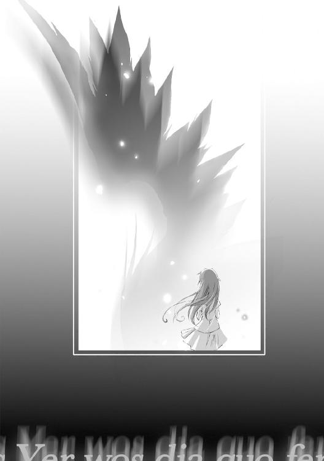
『さあ、あなたの道行きを教えて』
道行き。進むべき導。それは。
......あたしの選んだ道は。
──決めたんだろ？ そっちの道を選ぶんだって──
あたしの選んだ道は、きっとみんなと違う道。
だけどあたしも、もう迷わない。それが、送り出してくれた友人との約束だから。
「──意地悪」
にやりと、エイダは唇の端をつり上げた。
「あんた、ホントは分かってるんでしょ」
一瞬の沈黙の後。
自分に合わせるかのように、神鳥の瞳もまた微笑んでいた。
『とても好い。名詠士に在らざる少女よ。それは、とても好い決意です』
終奏 『諸人歌う 奏でる鎗使いの道行きよ』
１
背中越しに、背負う同僚の息づかいが聞こえてくる。弱々しい、か細い呼吸。
──ケイトの出血が止まらない。
「あとちょっとだから、それまで我慢してくれ！」
背負う彼女からの返事はない。
「......それまで保ってくれよな」
ここへ来る前に確認済み。最奥のメインホールには外への避難扉が確かにあった。
自身疲労で頭痛と目眩に見舞われながら、それでもゼッセルは走り続けた。
「......静か」
更衣室だろうか。職員用の研究服が並べられたロッカー。ネイトはその一つにじっと身を潜めていた。
......ケイト先生。
自分とエイダを逃がすため、一人残った教師。
「──僕」
競演会にも似たような無力感を味わった。ただあの時と決定的に違うのは、今この場所では自分が本当に独りだということだ。
いつも傍にいてくれたアーマがいない。夜色の触媒を用意してくれるミオがいない。そして、あの時のように名詠を見守ってくれるクルーエルがいない。
......また独りなの？
ずっとずっと前。自分が孤児院に預けられていた頃。話すべき相手もなく、頼るべき相手もいなかった。だから──朝が来て孤独を感じるなら、いっそずっと布団の中に隠れていたかった。いつまでもいつまでも、醒めない夜が続けばいいと思ってた。
でも。
今は亡き母親に拾われて、そこから、何かが少しずつ変わっていった。アーマと出会い、トレミア・アカデミーに来てまた沢山の人たちと会えた。緋い髪をした優しい少女と会い、母との約束を探し続けていた名詠士と出会い、大勢のクラスメイトにも出会えた。
「だから。今は、違うよね」
一緒にいてくれる人はいる。今は、僕がここでじっとしてるから会えないだけ。こんなとこで隠れてたって仕方ない。
「僕から行かないと」
ロッカーを僅かに開き周囲の様子を探る。平気だ、辺りにあの蛇や石竜子の姿はない。
更衣室を出、来た道の先へと通路を進む。
が、ものの数秒と経たず、靴先に異常があった。震えてる。僕が怯えてるから？ いや違う。これは──
「なに、これ......地震？」
２
音もなく、光妖精の幻灯が突如消えた。またしても灰色の名詠生物か。一瞬身構えたものの、ややあってエンネは安堵の息をついた。
落ち着いてみれば何と言うことはない。光妖精の発する光が、さらにまた別の光によって隠れただけ。
暗い通路を照らす、わずか一筋の光明。それは閉じかけた扉の奥から、木洩れ日のように通路を照らしていた。
「......メインホールだよな」
ゼッセルの独り言だとは分かっていたが、それでも頷くことにした。
灯りという灯り全てが途絶えた研究所でただ一か所、最奥に位置するメインホールのみ照明が生きている。偶然だと言うにはあまりに作為的な状況。今までの状況からして、これで良い場面に行き着くという可能性は限りなく零。あのホールへ突入するかどうか自体が分の悪い賭けになる。あの奥で待っているのはおそらく──
......だけど、行くしかない。避難路はこの先だ。これ以上はケイトの身体が保たない。一刻も早く、医療機関へ運ばなくては。
扉を蹴り開ける。部屋の眩しさにまぶたを閉じかけるも、睨みつけるように部屋の中央へと視線を向ける。
向けたまま、エンネは目を細めた。
──そういうことだったのね。
奥歯を嚙みしめる。ようやく、この馬鹿げた茶番の正体が見えてきた。
「これが原因だったわけね」
巨大な空間の中央。宝石が施されているらしき絢爛な灯籠、その上に据えられた灰色の〈孵石〉。さながら、五色に輝く玉座に構える灰色の王と喩えるべきか。視線をずらせば、部屋の隅にはさらに五色の〈孵石〉。
「......さすがにこの触媒を精製した施設だけあるな」
ケイトを背負うゼッセルの、皮肉にも似た呟き。
トレミア・アカデミーに持ち込まれた物は五色の〈孵石〉が各一つずつだったと聞く。ならばこの施設にまだ相当数が残っていてもおかしくない。
「この研究所も〈孵石〉が暴走したのか？」
「それは、まだ断定できないわ」
小さく、エンネは首を横に振った。
学園に持ち込まれた触媒は既存の五色のみだったと聞く。研究所で精製した〈孵石〉が五色のものだけならば、この灰色の〈孵石〉はそもそも何だ？ それに今のところ、灰色の〈孵石〉はこの部屋にある一個しかわたしたちは見ていない。仮に触媒の単純な暴走だとしても、この灰色名詠生物群の数は勘定が合わない。せめて二つ、いや、あの量を詠び出すならば最低三つは卵が必要だ。
そして、研究室の碑石に残されたあの血文字......
──いいえ、やめましょう。
「今は、面倒なのは忘れた方が良さそうよ」
少なくとも今、現状の分析はわたしたちに求められていない。無事この場を脱出する、現状の打破が最優先だ。
「ゼッセル、一応その触媒には触らないでね」
〈孵石〉は触れられることで強制的に名詠を発動させる。仕掛けは今なお不明だが、それは前の競演会で証明済み。
「......ケイト、待ってろ」
もはや自力で背に摑まる体力すら残っていない同僚。自身疲労の色を浮かべつつも、ゼッセルが彼女を背負い直す。
部屋の奥、周囲の鈍色の壁と一線を画す朱色の扉。研究室のマップで確認したのと同じ、あの扉を越えれば外界へ出られるはずだ。
不意に。
「......地震？」
彼が微かに眉をつり上げる。それに併せるように、微弱な揺れが足先から伝わってきた。さらさらと、天井の壁材が剝がれ落ちていく。
不思議だ。この感じ、以前にも体験したような。
既視感？ いや違う。自分もゼッセルもミラーも、そしてカインツも。あの時、これと同じ鳴動を確かに目の当たりにした。
〈孵石〉の暴走。あの時生まれた怪物の地鳴り。
「エンネ！」
やおら、彼の声が裏返った。悲鳴か警告の入り交じった声音。自分たちが通ってきた扉。その扉の奥、通路の陰から灰色の生物たちがゆっくりと這い進んできていた。
「くそ、どこまで罠になってりゃ気が済む！」
「ゼッセル、急ぎましょ！ こんなの相手にしてら......」
──その足が、止まった。
「............うそ」
部屋の四隅。無造作に転がっているだけだった卵形の触媒、うちの二つが活性化の光を放ち出す。いやそれだけならまだいい。問題は、その卵の場所が避難通路の最寄りに置かれた二個ということだ。
名詠光が消え、倒れた〈孵石〉の両脇にそれぞれ数体の名詠生物。
背中に灰色名詠生物群。そして正面には宙を漂う黄の小型精命、その脇に控えるように、緑の体表をした双頭の毒蛇。
──囲まれた。じりじりと、中央部目がけて包囲の輪が狭まってくる。
「ケイト......やるだけのことはやるけど......ごめんね、最悪の結果になるかもしれない」
床を滑るように、足下から双頭の毒蛇が迫ってくる。天井伝いに灰色の蛇。左右からは灰色の石竜子と黄の小型精命。
数が、多すぎる！
──『Keinez』──
最も近い距離にいた灰色の石竜子数体目がけ、ゼッセルが猛火を名詠。ただしそれはバックファイアが届かぬ程度に抑えた炎。紅い熱波に混じり、足を止めることなく進んでくる灰色の影が確かに見えた。
──この程度の火力じゃ動きも止められないの？
真正面から迫る双頭の毒蛇を牽制するように、エンネは立ち位置をずらした。
一瞬、同僚の姿が視界に映る。彼のすぐ背後二メートルほど、ぞっとするほど近い距離まで黄の小型精命が音もなく忍び寄っていた。こいつの攻撃範囲、たしかヒトの身長程度だったはず。だとすればあの距離は──まずい！
「ゼッセル、後ろ！」
慌てて彼が振り向くも、あまりに距離が近い。反射的に飛び離れようとするゼッセル。しかしその直前で彼の膝が落ちた。直前まで差し迫った危険に、ケイトを背負っていたことを彼は失念していたのだ。同僚を背に支える負荷だけ、動きが鈍い。
黄の小型精命の発する光が黄色から青に変化。球状の発光体から絹糸ほどの繊糸が伸ばされる。
だめだ、ゼッセルは躱せない。そのことを本能的に悟った。
O muas dowa
......伏せる？
自分が言葉を理解するより先、セラフェノ音語によって綴られたその言霊に導かれるように、彼が背のケイトごと床に倒れ込んだ。
朱色に塗られた避難通路が、更なる真紅に染まり膨れ上がる。
刹那、その避難通路が音を立てて弾け飛んだ。粉砕された扉の破片が眼前の黄の小型精命を巻き込み、部屋の壁に猛烈な速度で衝突する。
......これは？
広大なホールのその床へ、優雅とも言えるほど静かに降り立つ真紅の巨鳥。
......黎明の神鳥？
周囲の状況も忘れ、エンネはその場に立ちつくした。自分のすぐ目の前に、あまりに有名ながらあまりに名詠事例の少ない、名詠士間でも半ば幻と化した名詠生物。
「ほらエンネ先生、早くこっち来て！」
「エイダ？」
巨大な鳥の背からひょっこりと顔を覗かせた少女に、呆然と声を失った。
「ゼッセル先生、ケイト先生と一緒に乗ってください！」
もう一人、神鳥の翼と同色の髪をした少女が自分たちに向けて手招きしてきた。
「おまえ、クルーエルか」
ゼッセルが目を見開く。彼が知っているということは、彼が講義を担当していた生徒だろうか。
「センセ、ちび君知らない？」
神鳥の背からエイダが飛び降りてくる。その手に──金属の光沢を放つ長大な鎗？
「ちび？」
「ああ、ネイト君のこと。あたしやケイト先生とここに来てたはずなんだけど」
「......ごめんなさい、ケイトとしか会ってないの」
予想に反し、少女の方は普段の飄々とした表情のままだった。
「ううん、それだけ教えてもらえればいいよ。探せば見つけられるだろうし」
それだけ残し。ゆらりと一人、自分たちから離れエイダが歩き出す。まさか本気でネイトを探しに行くつもりなのか？
「......エ、エイダ！ 何を！」
黎明の神鳥から離れてホールを進む少女に向かい、足を止めていた名詠生物群が一気に襲いかかる。
「エイダ、後ろ！」
神鳥の背に乗るクルーエルが叫ぶ。
少女のすぐ真後ろ、先ほど壁に吹き飛ばされたはずの黄の小型精命。
にもかかわらず、その警鐘に少女は振り向きもしなかった。
「──把握ってる」
黄の小型精命が伸ばした光の繊糸、それと同時に、背を向けたまま少女が鎗を背後の相手に突き出す。光の糸と鎗。互いが交叉し通り過ぎ──
「黄の小型精命の攻撃限界範囲は一・六七三メートル。対し、我が祓戈の長さは一・八九五メートル」
指先一本分の空隙を挟み、光の糸は少女の背中の直前で止まっていた。
対照的に。少女の鎗に突かれ、黄の小型精命が小刻みに震え出す。
「つまり、祓戈の端より〇・二メートルの箇所を持った上で突き出せば、〇・〇二二メートルの差で相手の攻撃は絶対に届かない」
届かない。その言葉と共に、黄の小型精命が光の粒になって送り還されていく。
死の境界線まで......僅か二・二センチ。
今、この少女は背後の相手に対し振り向いてもいない。いやそもそも、自分の持つ鎗すら見ていない。自分の握る箇所が指先一つ分ずれていればどうなっていたことか。
「一ミリだってずれませんよ、絶対に」
心中を見抜いたかのように、少女がぽつりと呟く。
「......そのくらいの研鑽は、ずっと昔に積んでますから」
その声音は不思議と、悲愴に満ちたものだった。
討伐難易度──易
なぜ少女が背後の相手を目にしていないか、その理由にようやく思い及ぶ。
眼中にもない、まさにその言葉の体現。既に彼女の視線は、次に倒すべき相手の方を向いていた。
「総数二十七、うち詳細不明のものが十三体」
足下から双頭の毒蛇が襲いかかる。
毒滴る牙が足先に触れる──そう錯覚するほどの距離で、だが蛇の牙は空を切っただけ。鎌首を持ち上げた姿勢のまま、その名詠生物が緑の名詠光を発して還っていく。
「残り二十六体。うん、何とかなるな。一通り掃討してからちび君探した方が楽そうだ」
少女は、その蛇の更に背後に立っていた。
──速い。いえ......やわらかい？
あまりに自然で滑らかな体捌き。水中で今と同じ動きを再現したとして、水面には波紋一つ立たないだろう。そう思わせるほど、あまりに流麗。今まさに返り討ちにされた蛇自身、自分がいつやられたのか最後まで理解できなかったに違いない。
「一通り......掃討？」
つい昨日、自分の講義で模擬テストを受けていた少女。彼女が用紙に書いていた名前を思い出し、エンネは息を呑んだ。
エイダ・ユン・ジルシュヴェッサー。
祓戈の到極者──祓名民の中で最高位にある称号であるとは聞いている。だけど、この弱冠十六歳の少女が既にそれを冠しているというの？
祓名民の頭領たるクラウスですら、その後名を手にしたのは二十代半ばだったと聞いている。なのに、こんな名詠校で名詠の勉強をしていた女の子が既にそれを？
にわかには信じられない。けれど、目の前の光景は圧倒的に本物だった。
小さな呼気だけを響かせ少女が踊る。名詠生物たちの眼前に自らの身体を晒し対峙する。命すら賭けた舞に、見ている自分たちの方が恐ろしくなる。
危険だから？ 否、その舞の可憐しさにこそ、背筋が凍った。
天井から落下する大蛇を払い、と同時に足下の双頭の毒蛇を躱し、灰色の石竜子の爪先をわずか数ミリの差で逸らす。圧倒的な体捌きに共鳴するかの如く、金属製の鎗が鞭のようにしなり、風鳴りを伴いながら周囲の相手を薙ぎ払う。
繊細にして豪放。機敏にして静謐。華麗にして残酷。鎗なのに、刀のような鋭さがある。鎗なのに、弓のように美しい放物線を描く。
そもそも、少女一人にして相手は三十近い。その全てが、自分たちを忘れたかのように、少女へ一斉に襲いかかっていた。にもかかわらず、四方を囲まれた中でなお少女の舞踊は一時として止まることがない。胸の鼓動すら凍るほど張り詰めた、死地の舞踏会。そのはずなのが、猛りも焦りもそこには存在していなかった。
......違う。わたしの知っている生徒じゃない。いえ、わたしの知っている名詠士じゃない。この少女は──名詠士に在らざる者。
振るう鎗が相手を二体をまとめて薙ぎ払う。断末魔の名詠光を迸らせ、次々と還っていく名詠生物たち。
残り十三体。そこで、初めて少女の動きが止まった。
右手に鎗を携えたまま、左手をだらりと下げている。
「エイダ、左手！」
クルーエルの悲鳴につられるように少女の手を見据え......そこで呼吸が止まった。赤銅色に日焼けした少女の左腕、灰色になった左手首だけが異様に目立つ。
「......かすってたか」
機械的な声音で少女が洩らす。その視線の先、残る十三体、それは全て灰色の名詠生物だった。
「エイダ、もういいわ！ 退きなさい！」
たった一人で名詠生物十数体を相手にしたんだ。もう十分だ。今すぐこの施設から脱出するべきだ。──にもかかわらず。
「それはできません」
あろうことか、背を向けたまま彼女は首を横に振ってきた。
「エイダ！」
どうして。どうしてそんなに意地を張るの。片腕が石化した状態で何ができるの。
「......あたしが、不器用な女だからです」
そう。名詠士になりたくて、でもなりきれなかった不器用な──幻聴か。そんな言葉が、少女の口からこぼれた気がした。
前後左右。あらゆる方位から名詠生物群が迫る。容易に捌ける数じゃない。エイダ、片手だけでどうしようというの。
その瞬間、少女が叫んだ。
「センセ、何色！」
──灰色名詠の反唱に、五色の中で最も適した色は何色だ。
その意図に自分だけが気づいたのはきっと、わずかな時であろうと自分が、この祓名民の少女の『先生』であったからなのだろう。
「あなたの選んだ色よ！」
彼女に伝わるように、エンネは肺に残る呼気全てを振り絞った。
返事の代わり、少女の持つ祓戈の先端が白色に輝く。先端の送還用宝石を真珠に入替。
そして、祓名民の少女はその祓戈を自らの左手に突き立てた。
さながら硝子が割れる音。
澄みきった乾いた音を立て、腕を石化させる呪いが一瞬にして祓われる。その意味が伝わったのか、灰色の生物群がわずかに動きを鈍くする。瞬きほどにも満たない逡巡。隙という隙ですらない微かな虚。だが祓名民の少女には十分だった。
──『Nussis』──
矛先の残像だけを残し、白く輝く祓戈が全方位を薙ぎ払う。蒸気が騰え立つように、部屋に残っていた全ての名詠生物が白煙を上げて消えていく。
その煙に身を委ねるかの如く、祓戈を携える少女はじっと瞳を閉じていた。
３
微弱な揺れが止まり、もうどれほど経っただろう。
ふと立ち止まり、ネイトは周囲を眺め回した。
通路は一本道、緩やかに右へとカーブしているらしい。自分は分岐路を左に逃げたから、方位としては総じて直進に近いはず。
......何もいない、よね？
数秒おきに背後を確認しているが、あの不可思議な灰色の生物たちが後を追ってくるという気配はない。照明の落ちた通路、微弱な緊急灯を頼りに進んでいく。
「避難......経路？」
通路の壁に貼り付けられたプレートの文字、たしかにそう刻まれていた。
ここをさらに歩いていけば、避難扉に辿り着く。
再び足を進める、その前に──身体が震えた。
「あ、あれ」
身体だけじゃない。床、壁、天井。その全てが悲鳴を上げるように震えていた。
地震？ だとしたらさっきよりも大きい。
......一体何が起きてるの？
「エイダ、すごいじゃない！ そんな特技あったんだ」
鎗を抱えたまま戻ってくるクラスメイトに、クルーエルは思わず歓声を上げた。
鎗術会に入っているということは知っていた。けれど、まさかここまでの技量を持っているとは。クラス内では、まるでそんな素振りなど見せたことがなかったというのに。
「ん......まあ特技というか」
言葉を濁したままクラスメイトが後ろ頭を搔く。たった今神業的な技量を見せておきながら、その表情は不思議と寂しげな陰を映し出していた。
「クルーエル、先生たちを早く連れて帰ってあげて」
ケイト、エンネ、ゼッセルの三人。それに自分とエイダ。重量的に厳しいかとも思ったが、神鳥の方は問題ないと言ってきた。
「分かってる。エイダも早く乗りなさいってば」
ところが、一人背に乗り遅れた少女は苦笑気味に肩をすくめてきた。
「あたしはちび君探しておくよ。あたしが連れて来ちゃったようなもんだからね。さすがに責任感じちゃってるから」
「でも......」
『参りましょう。急ぐ必要があるのだから』
神鳥が首を持ち上げる。......確かに、冷静に事を考えるならエイダや神鳥の言う方が正しいことは目に見えていた。問題は、自分たちの担任であるケイト教師だ。背中の傷が深い。今すぐ医療機関へと運ばなくては。
「エイダごめんね、わたしもすぐ戻ってくるから」
「あいにく、遅刻魔のあんたに言われてもね」
軽い口調でエイダがおどける。あなたも同じでしょ。そう言い返す直前。
loar dime,Hir qusifluse feonen rawacley
shezadime, Hirqusinazariefeo eza dawavir uc corne
声が、何処からともなく、無風のはずの室内を駆けめぐった。
それと同時。
──ピシリッ──
何か硬い物がひび割れる音。あまりに小さい音ながら、奇妙なほど明瞭に、それはホール中に響き渡った。
solitiekaon,writh lefeza,lastis osfisaendehecmofy
arseiglio,ovanezisgliajesreive
老人のしわがれた声が、奇妙な旋律を歌い上げる。
いえ、ただの歌じゃない。これは〈讃来歌〉？
「な、なに......？ また？」
omunisvia-c-univa,Yer sistera pegezis, eza
zette yupathes Inecktloern
死者の怨念を思わせる旋律は、唯一残った〈孵石〉から──
「エイダ、今すぐこいつに乗れ！ その卵はまずいっ！」
エンネ教師に続き、ゼッセル教師が顔色を変えた。
中央に掲げられし灰色の触媒。
それが、殻が破れるかのように少しずつ外皮の部分が剝がれていく。内部から洩れる、鈍色の輝き。
Isa daboemafotondoremrenSer lalemenent,clar lefilmei arsa
jeseffectisqusi foLastihyt,ecta pegsterei orza
『この研究所そのものが罠だった、ということなのでしょうね』
神鳥の睨みつける先──
一際輝く名詠光。光の粒が螺旋状の環を描き、その中心に銀色の影が現れる。
『そして、これが最後にして最悪の罠のようです』
miqvyO evoiaarseitearl diselmaei I ──stereiefflectisEzehyt =ende arsa
銀色の何かがそこにいた。
体長二メートルほど。細長い金属針を合わせ人型を成したような形状。両手に相当する部位からは、直接銀色の剣が生えている。名詠式で詠び出される既存の名詠種とは違う、灰色の名詠生物たちとも風を異にする、あまりに人工的な外観。──その周囲、真精を護るように宙に浮く、十二刃にものぼる銀色に輝く鎗・剣・斧。
......まさか、こいつが灰色名詠の真精？
両手に二つ、その周囲に十二の刃を備えた銀色の名詠生物。
その真精が、ゆっくりと両の武器を持ち上げる......そう認識した瞬間。
自分たちのすぐ眼前に、その真精は立っていた。
『......捷い』
神鳥が洩らす驚愕の声。
あまりに唐突、何の予兆もなく動き出す。それも恐ろしいほど速く滑らかに。その動きに、クルーエルは全身が粟立った。この真精の動きは、エイダのそれに酷似している？
振り上げた剣が神鳥に向かって振り下ろされる。
「──虚け」
叩きつけるような銀閃が、さらに下から振り上げられた銀閃に弾かれた。
「棒人間、相手を違えるな！」
真精の正面、鎗を携えた少女が独り立ち塞がる。
「エイダ？」
「先に帰ってて。さっきも言ったでしょ、あたしはちび君を探してから戻る」
「何言ってるの、エイダも早く乗って！」
視線を正面の相手に向けたまま、彼女が無言で首を横に振る。その拍子。
......ぽちゃん。
小さな小さな飛沫が、床に落ちた。
「エ、エイダ、あなた？」
「お願い......先行って」
その飛沫は少女の瞳から。
「あたしは不器用な人間だから、これしかないの」
ゆっくりと、少女が横顔を向けてくる。
湖畔のように波立つ双眸を。
「......あたしさ、名詠士って憧れてたんだ」
──泣いていた。
初めて見た。エイダが、大粒の涙を頰から流していた。
「最初はね、ばか親に決められた道ってのが嫌だから、どうせなら反対の名詠士になってやるっていう、つまらない理由だったんだ。親と喧嘩別れしてこの学校来たようなもんだもん」
手元の鎗を抱き寄せ、真精が徐々に近づいてくる中で、あまりに無防備な格好で少女がこちらに振り向いた。
「でもね、やっていくうちに面白くなってさ。本当に名詠士になれればいいなと思うようになれたんだ。それだけはホント。たくさん友達ができたのだって、実はこれが初めてだったんだ。あたし......それまではずっと......ずっと」
〝──たとえばね、クルーエル。もしウチのクラスにさ、ちび君以外にも独りぼっちの子がいたとしたらどうする？〟
ふるえる声音。ふるえる身体。
ふるえる涙。ふるえる吐息。
あまりに弱々しく脆い、目の前で嗚咽を洩らす女の子。
「そう思ってたはずだったんだけどね。......初めてだよ。祓名民として過ごした思い出がありがたいと思ったの」
あふれる涙を隠そうともせず、そのクラスメイトが場違いな微笑をこぼす。
「あたしは......馬鹿で不器用だから......この道しかないみたい」
その仕草に、見る者すべてが言葉を失った。
あまりに儚くあまりに潔い。
それほどまでに、少女の立ち振る舞いは──紛れもない祓名民だったから。
「でもエイダ、いくらあなたでもこんな怪物相手に一人じゃ......」
「大丈夫。こんな木偶の坊なんかより、ウチの頑固親父のが百倍タチ悪いし」
壁という壁が、天井という天井の石材が崩れ出す。先の鳴動か、あるいはこれも罠の一つか。
『......クルーエル、ここを離れます』
神鳥がふわりと翼を羽ばたかせる。
......きっと、逃げろなんて言葉は届かないんだろうね。
ずっと名詠の学校にいた祓名民。
そして、今──それが彼女の選んだ道ならば。
「エイダ、さっさとネイト連れて帰ってきなさいよ！ 約束だからね！」
自分にできるのは、クラスメイトとして信じることだ。
......はいはい、分かってるよ。クラス委員。
口元の微笑を絶やさぬまま、エイダは避難扉を越える神鳥を見送った。
──ただし、ちょっとだけ遅刻するかもね。
視線を眼前の相手へと向け、両手で構えていた祓戈を片手に持ち替える。
物心つく前から与えられた自分の祓戈。
幾年の鍛錬を経て、祓戈の重さを一グラム以内の誤差で、間合いを一ミリ以内の誤差で把握する。この祓戈でできること、できないこと、その全てを我が身に刻印させる。──それを成し遂げた時、初めて父から、祓名民として名乗ることが許された。
十三歳。歴史上記録にない若さの祓名民が誕生した瞬間だった。
それから、三年。
この鎗はもはや自分の分身。鎗と振るい手の関係はそこにない。どちらもが鎗であり、どちらもが振るい手なのだから。
「さ、あとは二人だけで寂しく戦りますか」
......そう言えば、お前に話しかけるのは久しぶりだったね。
頰をつたう涙を拭う。周囲の壁を薄紙のように切り刻みながら近づいてくる真精。触れる者全てを切り刻む──高速で旋回し真精の周囲を護る、十二の銀色の刃たち。肌が焼けつくように痛む。刃ではなく、相手の発する殺気に当てられて。
紛れもなくこの相手は強い。それだけは認めざるをえない。今の、名詠士としての自分のままならきっと勝てない。ならば名詠士としての半年は無駄だった？ ......否。
ただ一つ、名詠士の学校で覚えたことがある。
勝てないからこそ、詠ばなくてはならない。
自分の最もよく知る、そして最も嫌いだった──あの日の自分を。
O toga Wemmillmo,HIr shoulda ora pegilmerigiris endezorm
詠え。思い出せ。
空想も想像構築も要らない。
詠び起こすべきは、かつて在りし日の自分。
過去に切り捨てた自分。手放し背を向けた、祓名民としての記憶。
ただ無心に祓戈だけを愛し、祓戈と共に生きた自分を──今一瞬だけ詠び起こせ。
ole shanilis, pegloar, pegkei, Hiret univasm hid
Hir bequsiGillisuxshao elesm thes,neckt ele
片手で鎗を廻す。次第に速く、次第に強く、美しく。
親から、周囲から、天賦の才と言われるのが嫌だった。だからこそ、誰にも見つからぬ場所で、言葉では到底喩えられぬほど研鑽を積んできた。
Lor be seGillisufeo olfeycori endeolte
lippshypnecooka,fifsia-c-ect-c-elepeg Gill,jes qusigiris
名詠の学校に来て、名詠の勉強を怠ることはあった。
鎗術会に入って、気まぐれに練習から逃げることはあった。
けれど──祓名民としての鍛錬だけは欠かしたことがない。
leideneckt elesm Yemhypne,reivezayxuylostasiaYem nehhe
O laLaspha,Wemshel zohearsalipps smcley
血豆ができてそれが潰れ、掌の皮が破け、激痛に瞳を濡らし、だけどそれでも祓戈だけは握ってた。冬の凍れる雨に打たれ気を失ったことも、夏の狂った熱線に灼かれ、肌が爛れ腐りかけたこともあった。だけど、それでも祓戈は離さなかった。
わたしの祓戈は裏切らない。振るった数だけ鋭くなり、泣いた数だけ強くなってきた。
そうだ。そう言い切れるだけの距離を、わたしたちは一緒に歩いてきた。
IsaO ora,stereiIes,sterei dacookadoremren
鎗が空を切り裂き、あたかも少女の身体を覆う刃の鎧と化す。
空を切り、楽曲にも似た調べを鎗が奏でる。
赤銅色の鎗使いが詠う、赤銅色の旋律。
Jes nehhequsi Ies,arseispil, Seola miqvyvirgia
名詠士としてではなく、祓名民の名を背負うのならば。
自身の背に護るべき者が、自身の前に倒すべき相手がいるならば。
──至高の称号を抱く者として、退けない道がある。
bekwistYem nehheolfeybestiGillshuvesher
焦りも猛りも、遥か彼方に消え去った。
身体の火照りも昂ぶりも、周囲の鳴動すら届かない。
「いくぞ真精！ 我を以て、祓戈の到極者が故と知れ！」
その部屋に名詠士はもういない。
歌と鎗の狭間に揺れる時期は、もう過ぎた。
──エイダ・ユン・ジルシュヴェッサー、参ります。
......地震、まだ続いてる？
前の激震は収まったが、髪を震わせる微弱な揺れは続いている。
にわかに、音が変化した。
壁が崩れる破砕音ではなく、透き通った金属の響き。硬い何かと何かが絶え間なく衝突する、冷たく鋭い旋律。音色は、自分が進む方向から聞こえてくるような。
「......明かりがついてる？」
扉だろうか、その隙間から銀色の光が。
音源は──その扉の奥？
扉の先へと顔を覗かせ、ネイトは息を呑んだ。
銀色の金属棒で構成されたようなヒト型の真精。両手に直接生やした刃を振り翳し、対峙する相手に斬りつける。
その相手として立ちはだかっているのは──赤銅色の肌をした、鎗を携える独りの少女。
......エイダさん？
右、左。零コンマ数秒の時間差で両の刃が打ち下ろされる。右の刃を鎗の切っ先で弾き、弾いた動作の流れのまま、左の刃に視線を向ける。既に、鼻先にまで迫った銀閃。
──弾くのは間に合わない。
刃の峰に鎗を合わせ受け流す。と同時、身体を床に伏せる。風鳴りを立て、銀色の鎗と斧が今まで自分の首があった地点を過ぎる。
「ッ！」
呼気を破裂させ、浮遊する守護剣たちを薙ぎ払う。キィィッ......ン。氷の鐘を打つような余韻を残し、鎗と斧が消滅する。
「......のこり八本か」
更なる追撃をバックステップで躱し、約四メートルの距離を置く。
四・四二メートル、それが自分の間合い。対し、相手の間合いが最大四・一四メートルであることまでは確認できた。二十八センチ──速度と武器のリーチで僅かに勝る分の差。ただし敵の周囲を護る武器たちは、真精の周囲六メートルまでを不規則に飛んでいる。
真精の間合いに留まるという選択肢はない。万一これ以上懐に飛び込まれれば祓戈のリーチが徒になる。ならば自分の立ち位置は、相手の周囲四・一四メートルから四・四二メートルの範囲内。それ以上近づけば相手の間合い、それ以上離れれば相手の攻撃だけが一方的に届く。
二十八センチの空間内。その矮小な持ち幅が生と死、勝利と敗北を隔てる境界線。この空間を外すか外されれば負ける。けれど、違えずとも今のままでは停滞が続く。
──見出せ。この天秤をひっくり返す手段を。何がある？
が。考える間を与えることなく真精は距離を詰めてきた。
......常識が通用しない未知の相手、か。
常人では目で追うことすら能わぬ剣閃。瞬きする間に切り伏せられる速度で抉り、穿ち、突き、振り下ろす──かと思えば唐突に退き、退いたと思えば猛烈な速度で突進してくる。衝突してくるかと思えば突然に速度を落とし、再び退く。
まるで動きが読めない。
剣術の型をまるで無視した不規則な斬撃。ヒトの持つ呼吸を無視し、ヒトの持つ間合いを無視し、ヒトの為した剣技を嘲笑うような出鱈目な斬撃を繰り出してくる。視線が何処を向いているかすら定かではない。
......だめだ、乱されるな。自分の呼吸を保て。
突き出される右の剣を、身を捩って躱す。左の剣をぎりぎりまで引きつけ、身体を反らしてすり抜ける。銀光が頰をかすめる。熱い、皮膚一枚を削られ血が滲むのを感じる。
けれど、それを代償に相手の攻撃は躱しきった。
最速の動作で祓戈を突き出す。真珠を加工し付設した先端。乳白色に輝く鎗の切っ先が真精の胴体へ伸びる。
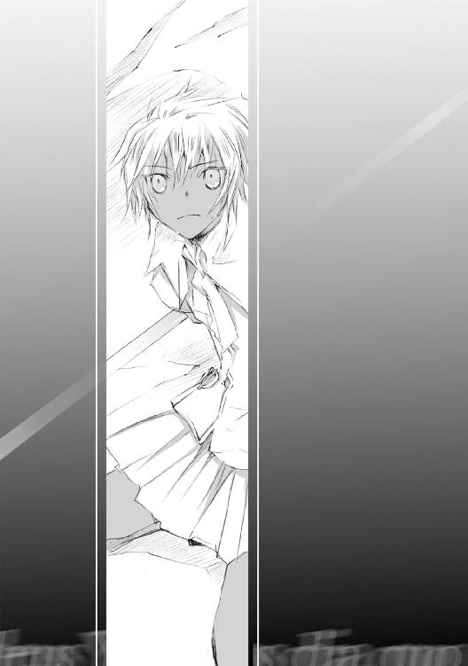
が、鎗が貫いたのは真精ではなく、その周囲を護る剣の一刃だった。
「──またか！」
意図せず苦い吐息が洩れる。
対峙して悟った。真精の周囲を舞う十二の刃、これは真精の武器にして護り。この真精に一撃を与えるには、まずこの十二の守護剣を先に還さなくてはならない。その数、残り七。
頰を伝う汗に血が混じる。
相手の弱点は予想がついている。真精の身体を構成する銀の金属片たち。それをまとめ上げているのは、中枢部で鈍色に輝く〈孵石〉。あの触媒がこの真精をこの世界に留めているコアだというのは想像に難くない。
......身体はまだ動く。平気だ。
身体の動きが鈍る前に、精神が摩耗する前に敵の守護剣たちを全て還す。還した上で、相手の中枢に祓戈を叩き込む。
「行くよ、祓戈」
自分の握る鎗に向かって頷き......
──リィィィ......ンッ──
何か、何かとても冷たい音が手元で響いた。気力、威勢、覚悟、決意。その全てが消え流されてしまうほど......悲しい音。
「......祓戈が？」
最初は目の錯覚かと思った。信じられなかった。だけど見つめれば見つめるほど、それが錯覚などではないことを証明するだけだった。
鎗の先端から半ばにかけ、蜘蛛の巣のように罅入った細かな亀裂の存在を。
......エイダさん？
彼女に何かが起きた。傍目にもそれはネイトにも伝わってきた。
突如、少女から何かが消えたのだ。体力？ 違う、もっと根源的な何か。
闘う気力そのものが消滅したかのように、ただただ相手の攻撃を避けるだけ。そう。避けるだけなのだ。鎗で払うことも受け流すこともない。ひたすら後ろに下がり続けるだけ。
だけど──それは無茶だ。いくら彼女でもそれだけで避けきれるわけがない。
瞬きする間に、彼女の背が壁に触れる。逃げ場のない少女に向け、真精が一挙に距離を詰める。剣が肩を掠め脇腹を抉り、浮遊する斧が足を裂く。
「エイダさんっ！」
扉を越え、ネイトは彼女の下へ駆けだした。
......噓でしょ、ねえ噓でしょ。
祓戈に罅が入るなんて。今までそんなことなかった。手入れは一日たりとも欠かしたことがない。普段の扱いだって細心の注意を払ってた。別に、今の応酬だって実際に刃を重ねたのはせいぜい数太刀。祓戈の強度を考えればこの程度で──ならばこれは、もっと違う理由？
考えられるのは唯一つだけ。
生命ある者、形ある物、それら全てに等しく定められた節理──寿命という名の縛鎖。十数年にわたる過酷な鍛錬に触れ、その結果あまりに早く訪れることとなった、祓戈としての限界。
......嫌だ、嫌だ。そんなの噓だ。
自分の分身が？ 一番初めにできた友達が？
──あたしを、置いていっちゃうの？
──そしてそれは、あたしのせいなの？
極限まで高め上げていたもの全てが、音を立てて崩れていく。
真精が剣を打ち下ろしてくる。祓戈で弾くこと、やろうと思えばできたかもしれない。けれど、どうしてもできなかった。
「っ！」
身をかがめて躱す。肩先に鋭い痛みが走る。小さく、だが深い裂傷。
......でも、でも構わない。
祓戈で受ければ、祓戈の寿命はまたさらに短くなる。それだけは絶対に嫌だ。
浮遊する武器から逃げ、振りかぶってくる相手の剣から逃げる。
──トン。つと、背中に硬い感触。壁？
と同時。真精がこちらに向かって一気に距離を詰めてきた。突きだしてくる剣、自分からさらに距離を詰めて外す。そのつもりが、足が動かなかった。
「痛っ！」
浮遊する斧がふくらはぎを抉っていた。痛みに一瞬視界がぶれる。再び顔を持ち上げた時、そこには真精の持つ大剣。
......避けられない！
祓戈で防ぐ？ でも、他に方法はないの？
思念の回転が逆に徒となった。身体が動かない。
「エイダさんっ！」
振り下ろされた大剣がぴたりと止まった。動きを止めた真精が背後へと振り返る。メインホールに現れた闖入者。まだ幼さの残る顔つきの小柄な少年。
......ちび君？
金属の擦れる音を撒き散らし真精が疾る。その照準は──
だめ......だめだよちび君......早く逃げて、早く......きちゃだめだって。
「来るなぁぁっ！」
「え？」
その場に呆然と佇立する少年。真正面に迫った真精が大剣を振り上げる。それを為す術なく見上げる少年。あまりのことに、彼の方はまだ事情を理解していないのだ。
「あ......あ......」
眼前に迫った真精の威圧に呑まれ、彼がその場に凍りつく。
〈讃来歌〉を詠わずに名詠ができる者ならともかく、とかく名詠士は直接自分を狙われると脆い。だからこそ、名詠士の前に、盾として祓名民が存在する。なのに、ここに祓名民がいるのに。よりによって、目の前で名詠士の方が先に。
......いやだ。あたしはもう後悔したくない。目の前で友達が傷ついて、競演会の時にあれだけ胸が痛くなったじゃないか。
誰一人として守れない？ ならばこの鎗は何のためにある？
何も成すことなく寿命尽る。
それは、あたしの祓戈が本当に望んでいることなのか？
〝エイダ。この道が、本当につまらないだけの道と思うか〟
〝祓名民の家系に生まれた者は誰だって一度は同じ疑問に辿り着く。──私だってそうだった〟
〝だが、それでもある日気づいたよ〟
......そういえば。そんなことも言われてたっけ。
〝......親父、あたしには分からない〟
〝分からないわけじゃない。お前がまだ気づかないだけだ〟
ようやく気づいた。あの日あの時、父親の瞳が告げてきたものが。
〝あたしは......馬鹿で不器用だから......この道しかないみたい〟
自分が、自分に為せることを探して選んだ結果がこれだっただけのこと。
自らの意志で選んだこと。
もう戻れない。生涯この道を歩くしかない。
あまりに過酷であまりにつまらない道。......でもそれでも。
──この道は、きっと誰かを守れる道だから。
少年へと振り下ろされる無慈悲な銀閃。真精の持つ両剣、その周囲を舞う守護剣。
その悉くが、乳白色の煌めきに薙ぎ払われた。
「......エ、エイダさん」
「平気かい？ ちび君」
無言でこくりと頷く少年。その頭をかるく撫でてやる。
ふと視線を移した先。祓戈の先端、罅がさらに大きくなっている。
たぶん、次でお前とお別れなのかな。
......最後まで、あたしと一緒に戦ってくれる？
「ちび君、触媒持ってる？」
口早に、唇を動かさず背後の少年へと問いかける。
「え？ は、はい」
「じゃあ一つ頼もうかな。君が一番最初にみんなの前で見せてくれた名詠、あれここでやってちょうだい」
競演会で見た名詠ではない。彼が転入して来た初日。実験室で彼が詠った〈讃来歌〉にこそ用がある。
「え......で、でもあれは僕にはまだ」
「失敗して構わないよ。〈讃来歌〉付きで、真精に聞こえるよう派手にお願いね」
「──っ！」
少年の表情に緊張が走る。自分が何を意図し何を狙っているか悟ってくれたのだ。
「エイダさん、たぶんあれは一分以内で消えちゃいます。......うまく合わせてくださいね」
目配せだけを残し真精の正面へと飛び込む。
真精の携える両の剣。そして周囲を飛び回る守護剣。身を捩る、しゃがむ、跳躍し、躱す。祓戈で受けてはいけない。残された最後の一撃分。それを確実に当てるために、今は避け続けなくてはならない。
「──cart lefdimi-l-shadidenca-c-dowa」
自分の背後、少年の奏でる〈讃来歌〉がホール全体にそっと拡張していく。
YeR beoratorLom nehhe
lor bestibluci endebranousi-l-symphoeki
O shesairaqersonieLaspha──
少年の足下、うっすらと夜色の名詠門が浮かび上がる。
薄皮一枚分まで惹きつけた銀の大剣とすれ違いに、渾身の跳躍で相手の懐に入り込む。
同時。彼の名詠が終詩を紡ぎ終えた。
──『Ezel』──
途端。室内が一瞬にして膨大な量の黒煙に包まれた。
名詠の暴走が生み出す一現象。
真精、ネイト、エイダ。三者の視界が皆等しく零になる。
......だけど！
目を痛めつける刺激の中、エイダは目を見開いた。夜目の訓練はしているが、目的は別にある。相手の中枢、灰色に輝く〈孵石〉だけは、この黒煙の中でも煌々と光を発しているからだ。
──つまり、お前はそこにいるっ！
防御は考えない。ただ無心で祓戈を突きだした。
一方で、灰の真精にも目印はあった。
少女の持つ祓戈の先端、乳白色に輝く宝石。これが相手の位置を教えてくれる。両の剣、浮遊する守護剣。持てる武器全てを、その宝石の周囲目がけて突きだした。
そして......
──黒煙が晴れた。
少女と真精。互いが互いに、自らの武器を突きだした姿勢のまま動きを止めていた。
「......終わったね」
身体が触れるほど接した状態で、エイダはその相手を見上げた。
祓戈の先端が〈孵石〉を貫いたのは感触で分かっていた。
一方で、真精の突きだした銀剣は、悉く見当外れの壁を穿っていた。
「今の状況でまともに戦ったら相打ちか、あるいはそっちが勝ってたかもだけど」
穿たれた壁に、わずかに灯る乳白色の光。
それは、自分が名詠で詠びだしておいた偽りの目印。
『............』
真精は応えない。少女の張っていた二重の策。それを称賛するかのように、ただじっと名詠の光を見つめていた。
自分がネイトに頼んだのは初めから、名詠暴走時に発生する黒煙だった。互いに視界が奪われた時、目印になるのは〈孵石〉の光と、祓戈の先端に付設した宝石の輝きだ。
その宝石の輝きに似せた白光を、エイダはネイトの名詠と同時に詠んでいた。
もともと白色名詠は自分の専攻。触媒は祓戈の真珠。そのための〈讃来歌〉は──
〝真精に聞こえるよう派手にお願いね〟
ネイトにあえて大声で〈讃来歌〉を詠わせ、その声に隠れるかたちで自分の〈讃来歌〉を重ねる。あとは──真精の剣は偽造の祓戈へ向けて振るわれ、自分は相手の〈孵石〉目がけて祓戈を突きだせばよかった。
さらさらと、真精を構成する金属片が細かい砂となって消えていく。
浮遊する七本の守護剣が消え、真精の持つ大剣が消え、身体そのものが消え。中心を穿たれ破砕した〈孵石〉だけが、メインホールの床に転がっていた。
そして、同時に。
自分にとって大切な物の一つが、音を立てて砕けていった。
「エイダさん！」
放心したような表情で立ちつくす少女。今にも気を失い倒れるのではないか、その悪寒に、ネイトは慌てて彼女のもとへ駆け寄った。
「傷、だいじょうぶですか」
「......平気だよ」
平気なはずがない。両足から流れ落ちる血が、靴先までを紅く染めているのだから。
なのに、彼女はそれすら意に介した様子もなく、ただ自分の足下を見つめていた。
血濡れた靴じゃない。少女がじっと見つめる物はそのさらに先。
──祓戈が？
少女と十数年共に歩んできた祓戈が、その切っ先から砕け散っていた。床に零れた、小さな小さな、数え切れぬほどに砕けた刃の欠片。
「ちび君、ごめん、先帰っててくれないかな」
ぽつりと、力なく彼女が吐息をこぼす。
「......でも」
「お願い。『二人きり』にしてほしいの」
避難扉から少年が外へ走り去っていく。
静寂の帳が降りたホール。その場に立つのは、もう独りだけ。
目を瞑ったまま、祓名民の少女は砕けた鎗を胸に抱きかかえた。
「......ごめんね」
今まで、一番近くで護ってくれてたのはお前だったのに。あたし、気づくのが遅かった。......本当に、本当にごめんなさい。
４
いつから、もうどれだけ待っていただろう。
冷たい波の押し寄せる砂浜。距離的には、分校と研究所の間だろうか。海を赤く染める陽が水平線の彼方へと消え、砂を攫う波はとうに昏い色になっている。
「星が出てきたね」
隣に立つ、緋色の髪の少女がぽつりと呟く。その言葉に誘われるように、ネイトは頭上を見上げた。
天上に小さな星明かり。
燦めく光の粒が、あの時砕け散った祓戈を思わせる、そんな刻。
「心配したんだからね。よりによって一人ではぐれちゃってるなんて」
研究所から戻る途中の道で、彼女はずっと自分を待っていてくれた。
「......ごめんなさい」
「でも、キミが無事で良かったよ」
「あ、あの。ケイト先生は？」
「すぐお医者さんに連れて行ったから平気よ。他の先生たちも看ていてくれてるし」
数秒、互いに言葉が途切れた。
「......ごめんね」
波飛沫の残響に合わせるように、先に口を開いたのは彼女の方だった。
「謝るのはわたしの方だよ。名詠が怖いなんて悩んじゃって。キミに、変な心配かけちゃったね」
空を仰ぐように、両手を一杯に広げる彼女。
「でも、もう平気。これでまたいつも通りだから」
いつも通り。それは、彼女の優しい口元を見れば自然と伝わってきた。
「僕、最初からクルーエルさんのこと信じてましたから」
自分がそう言い終えるやいなや。
「......ねえ、ネイト？」
にやりと悪戯っぽい笑みを浮かべ──彼女は突然に、自分の両方の頰をぎゅっと引っ張ってきた。
「いっ、いふぁっ！ くぅーえうふぁん、いふぁいでふ！」
「ふふふ。こういう時はね、『はい』って言った方が素直ダゾ？」
「ふ、ふぁいっ！」
「うん。それでよろしい」
満足そうに頷き、手を放すクルーエル。
「......うぅ、ひどいや」
反射的に頰を手で押さえたものの......ふと、ネイトはぽかんと瞬きを繰り返した。
あれ、ほっぺ痛くないや。さっきはあんなに痛いと思ったのに。
「......クルーエルさん、加減してくれたんですか？」
「何言ってるの、当たり前じゃない」
くすりと、口元に手を当てて彼女が微笑む。
......そっか。
それ以上、言葉はなかった。互いに無言のまま、波の満ち引きを眺め──
ふと、誰かが砂を踏む小さな音が浜辺に響いた。
「風邪ひくよ、お二人さん」
長身黒髪の少女。トレミアの白制服をなびかせ、ゆっくりと彼女が近づいてくる。
「......サージェスさん？」
思えば全ての始まりは──祓名民の少女が屋上で鎗の練習をしていることを教えてくれたのは、この人だった。
「あ、あの、サージェスさん」
「なに？」
その場に立ったまま、潮風に張りついた前髪をはらう彼女。
「エイダさんのこと知ってたんですか」
「祓名民のこと？」
......やっぱり、サージェスさんは最初から全部知ってたんだ。
「あの子についてはわたしが一番良く知ってるよ。生徒の誰より、先生の誰よりね」
ふっと表情をゆるませ、彼女もまた頭上を見上げた。その視線は上空に漂う雲を越え、燦めく星くずを越え──現実にはもう振り返ることのできない、昔のことを見つめていた。
「ネイティと同じだよ」
僕と？
「この学校の入学式の時、一人だけこそこそしてた子がいてさ。......きっと、自分だけ違うってのを過剰に感じちゃってたんだろうね。話しかけたら、その途端勢いよく向こうから色々喋ってきたんだ。不安でしょうがなくて、それが一気に爆発したみたいな感じで」
──それがエイダさん？
「もともとは明るい性格だから、今じゃ想像つかないでしょ。やたら長い鎗を大事そうに抱えてさ、こっちを不安そうに見つめてる姿」
小笑いと共に、彼女は両手を背中にやった。
でもね。小さく、普段より低く抑えた声音で彼女はそう言ってきた。
「誰かさんにお姉さん役が必要なようにね、あの子も本当は、一緒に馬鹿騒ぎしてあげられる友達が必要なんだと思う」
えっと、誰かさんて？
「それが分かるまで、ネイティはまだまだ『ちび君』なのさ。ね、クルーエル？」
「え、なに？ お姉さん役って誰のこと？」
「......こっちも自覚なし、と」
呆れ笑いの混じった溜息をこぼし、そっと、彼女は砂浜を歩き出した。
その方向──
夜の星空を背負うように、しずしずと歩いてくる小柄な少女。その背には、先端の砕けた鎗が背負われていた。
「......ばか、あんまり遅いから心配したんだから」
そう告げて。名詠士の少女は、親友たる祓名民の少女に抱きついた。
「うん。ごめん。もう平気だから」
弱々しくエイダが笑う。
「噓。ばればれなんだって」
「──え」
エイダを抱く腕に、サージェスがさらに力をこめる。
「あんたに作り笑いは似合わないって言ったでしょ。もっとメリハリつけなさい。はしゃぐのは元気ある時でいいから。辛いときには、友達に頼ってよ？」
「............」
「それとも、わたしじゃダメ？」
「......なに言ってんの。そんなことない......すごく、嬉しい」
──祓名民、名詠学校に来て良かった。
なみだ混じりの声。
波飛沫に混じって、小さくこだました。
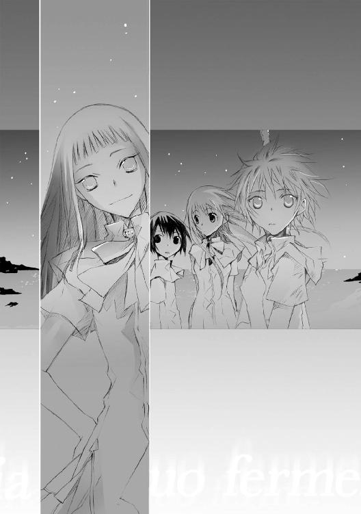
間奏・第二幕 『三年前──』
「二人とも、すまなかったな」
手元の報告紙を机に置き、トレミア・アカデミーを束ねる老人が苦い吐息をこぼす。
「まさかここまで凄惨な状況になっているとは」
「こればかりは学園長のせいにするわけにもいかないでしょう」
青い研究服に身を包むミラーが腕を組む。
「人を石化させる謎の名詠。研究所に罠として仕掛けられていた〈孵石〉。そして、二人の報告にあった『Lastihyt』という謎の血文字。どれもこれも、現状では理解できぬものばかりです。教員及び生徒に最悪の事態が起きなかっただけでも幸運と言える」
「......ま、そういうことです」
「ですね」
肩をすくめるゼッセルに、今度ばかりはエンネも頷くことにした。
石化していた研究所職員たちも無事救出され、今は医療施設で介護を受けている。皆一様に衰弱しているが、それもあと数日中には聞き取り調査が可能と聞いている。あの日研究所で何が起きたか、他ならぬ職員たちならば当然目の当たりにしたはず。
「──自分の方でも、一通り調べはつきました」
分厚い紙束を学園長へと手渡すミラー。
「あの研究所において〈孵石〉の精製に成功したのは、どうやら一人の助手の力が大きかったようです」
「助手？」
反芻する老人に向かい、彼が小さく頷いてみせる。
「ええ、研究所の所長でもなく正式な研究員でもない、ただの雇われ助手。だからこそ公には名前が決して載っていない。自分の方もその助手の存在を突き止めただけで、名前までは辿れませんでしたから」
「......ねえそれって」
ミラーの言葉を遮り、エンネは一歩前に出た。
つまりその何者かは、自らの名前が残らぬよう、あえて雇いの助手を演じていた。その実、〈孵石〉を精製するということだけは研究所の施設を利用していた？
「そう考えるのが妥当だろうな」
眼鏡のブリッジを押し上げ、ミラーが首肯する。
「その助手は三年前に研究所を出ている。最後に研究所職員の名義で、ファルナ荒野への鉄道チケットを購入したことだけは突き止めた」
「ファルナ？」
地名だろうが、エンネにとっては初めて聞く単語だった。
「一言で言えば未開の地だ。まだまだ人より獣の息が多い場所と言うべきかな。灰色の砂で埋め尽くされた荒野が延々広がってる場所だよ」
──灰色の砂？
学園長の答えにひそかに眉をひそめる。隣では、やはりゼッセルも同じように目を細めている。
「......逆に言えば、三年前、その助手はファルナ荒野で消息を絶ったとも言える。か」
腕を組み、ミラーが二の句を継ぐ。
「ラスティハイト。そういえば、カインツがその名前を探していたのも......あれは三年ほど前だった記憶がある」
三年前。それはゼッセルの証言ともぴたりと重なっていた。
と同時に、カインツがその名の者を探していた時期。
そして、〈孵石〉を精製した研究所職員が消息を絶った時期。
「あえて言うなら、そのカインツが五色全てをマスターしたのも三年前だったな」
ぼそりと、独り言のように呟く老人。
全てが、三年前という一つの時間軸上に集結している。
偶然か。それとも──
室内の全員が沈黙する中、にわかに部屋の扉が開いた。
若葉色のスーツを着た女性に、部屋の中央に構える老人が目を見開く。
「......ケイト君」
生徒を庇って大けがを負った女性教師。つい数日前まで集中治療を受けていたはずだ。
「おいケイト、まだ休んでろって」
「いえ。ご心配をおかけしましたけど、もう平気です」
気丈だ。スーツの襟元に袖、至る箇所から包帯が痛々しく覗いているというのに。
「ケイト君、すまんかったね。......そして礼を言う。君が身を挺して生徒を庇っていなければ今頃どうなっていたことか」
頭を下げる学園長に、しかしケイトの口元は優しげだった。
「いえ、......むしろ、私は嬉しいんです」
──嬉しい？
「私の生徒。エイダが......いえ、クラスの皆が、全員胸を張って誇れる生徒だということが分かったのですから。教師として、これ以上の幸せはありませんでしょう？」
窓越しに、生徒のいないがらんとした校庭を彼女が見つめる。
「夏が終わって、また生徒たちと会えるのが楽しみです」
窓にそっと映る自身の姿。それを見つめるかのように──
「夏休みなんてたかだか一か月だけど、きっと生徒たちは、その短い間にもずっとずっと成長しているはず。そんな気がしますから」
そう告げて、ほっそりと、その若手教師は微笑んでみせた。
贈奏 『奏でる祓名民の栄光は』
武家貴族。
その希少性と反比例するかのように、祓名民の需要は桁外れに多い。中でも──始祖にして最も優秀な一族とされたユン家の活躍は大陸中に響き、その技能と伝統の継承、発展に貢献することを期待され、公的な敷地と一定以上の収入を永年保証されている。
〝先輩も、大変ですね〟
虹色名詠士が何気なく口にした台詞をふと思い出す。
実力に添う活躍を期待される。時には期待という言葉を超え、実力以上のものすら強いられる。そんな日々が続く生活。
......カインツ、お前のようにふらりと旅してみたくなる気持ちも分かるよ。
だが妻を持ち子を持ち、家庭を持つことを選んだからには、もはやそれも叶うまい。
ユン家を守るというより、今はもう家族の日常を守るためか。
「......人それぞれということさ」
苦笑の息を肺に押し戻し、クラウスは屋敷のダイニングへと足を向けた。広大な屋敷にたった三人。いや、娘がいないから今は妻と二人か。
その寂しさにも、もう慣れた。
──ん？
だが。部屋のテーブルに並べられた椅子は三人分だった。
「カインツはもう出発したはずだが？」
「エイダ、今日帰ってくるんですって」
厨房の奥。沸きたつ鍋から目を離さぬまま、伴侶は口早に言ってきた。
「......そうか」
何の風の吹き回しか、夏休みに戻ってくるという手紙を数日前に受けている。
「あなた、祓名民のことについては──」
「分かっているよ。あの子には自分の好きな道を選ばせるさ」
もう諦めもついた。
娘も十六になる。......もはや親が口を出すべき歳ではない。
「夕食まで、すこし庭に出てくる」
自分の祓戈を携え、広大な敷地の庭園につま先を向けた。
鎗を持ったまま、しかしそれを振るうことなく頭上の星明かりを見つめる。燦めく星くず。時の経過の中で星がその位置を移動するように、人の通念もまた移ろい流れる。
──時代、か。
親が子を縛りつける時代の、終焉。子が自ら己の道行きを決める時代。それが果たして良い時代なのかは分からない。ただ、善い時代だとは信じたい。
ふと、芝を踏む小さな足音。
聞き慣れた妻のものではない。それと比較できないほど微細な足音。常人ならば聞き逃してしまうほど微かな、祓名民の足音。
振り返る。一年ぶりに見る、日焼けした小柄な少女。......いや、少しは背丈も伸びたか。
──珍しい、ずいぶん疲れているようだな。
力なく、肩を落として歩いてくる我が子の姿。
「夕食もすぐできる。母さんが待っているから、家に入れ」
が、娘はその場に立ちつくしたままだった。
「親父。お願いがある」
お願い？ 娘がそんな言葉を紡ぐのは、今まで何度あっただろうか。
「こいつを......直してくれないかな」
右手に持っていた細長い荷物。白布に幾重にもくるまったそれを丁寧に解いていく娘。布から姿を見せたそれは、先端が砕けた祓戈。そして、砕け散った宝石部分。
「直してどうするつもりだ」
「それは、本当に分からないから訊いてる？」
思わぬ反駁に息が詰まった。
「......直すこと自体はできる。だがそうして直したところで、その祓戈はもう握るべきではない」
なぜ。少女の視線がそう訊いてくる。
「お前も知っているはずだ。祓戈は非常に精密な設計になっている。一度ここまで粉砕されてしまえば完全な復元は難しい。修理から戻ってきた物は重さも長さも異なる、お前の知る祓戈ではない」
自分の覚えている鎗の感触を信じて振るえば、必ずいつか致命的なミスをする。直したとしても、もうそれはお前の分身たる鎗ではない。
「誰もが通ってきた道だ。──私もな」
「......でもあたしは、そんなのは嫌だ」
叫ぶわけでも絶叫するわけでもない。だがその言霊には、一年前自分の部屋に怒鳴り込んできたあの日には決してなかった何かがあった。
「誰もが通ってきたなんて、そんなくだらない決まりきったのが嫌で......あたしは名詠の勉強がしたくなったんだ」
「では、名詠士としての勉強を続けるか」
一瞬、少女が口をつぐむ。
「続けるよ。だけど」
娘の、祓戈を握る手に力がこもるのが伝わってきた。
「だけど、あたしは祓名民の方も......やめたくない」
名詠士と祓名民。
詠ぶ者と、送り還す者。
相反する道を選ぶ。
「それがどれだけ困難な道か、知らないわけもあるまい」
「知ってるよ。だけど、もう決めたから」
視線の交叉。普段すぐに目を逸らすはずの娘が、今だけはじっとこちらを見上げてきていた。
──瞳の色、あなたに似てるわね。強情で、でも真っ直ぐなところ。
十六年前。娘が生まれた時、妻に言われた言葉を思い出す。あの時は恥ずかしさも手伝って曖昧な相槌しか返さなかったが。
「直せるか保証はしないぞ」
一度大きく嘆息し──
呆気にとられたような娘の手から、破砕した祓戈をクラウスは奪い取った。
「......え」
「この鎗がお前の分身ならば、この鎗もまた私の娘だからな」
「じゃっ、じゃあ！」
娘が声を弾ませる。まったく、こんなに嬉しそうな表情を見たのはもう何年以来か。
「その代わり。夏期休暇の間、ここでその鎗を握り続けることが条件だ」
修理された祓戈の重さを、零コンマ一グラムの精度で。
修理された祓戈の間合いを、零コンマ一ミリの精度で。
十六年かけ骨の髄まで染み込んだ祓戈の情報を修正する。どれだけの月日、どれだけの研鑽を要するか。娘もまた、その過酷さを知らないわけではあるまい。
「......逃げ出さないよ」
その言葉、今まで何回聞いたことだろう。
──だが今度は、まんざら噓でもなさそうだな。
「あたし家に入るね。母さんも待ってるんでしょ」
「エイダ」
その背中に声をかける。
「大切なものは、守れたか」
瞳の奥、一瞬迷いの色を見せた後。娘は苦笑とともに肩をすくめてきた。
「あたし一人じゃ無理だったけどね」
「一人で背負う必要はない。お前には名詠学校でできた友人もいるだろう」
「......そんなの知ってるよ」
ぶっきらぼうに言い放つ娘、その強がりな表情に心中苦笑する。
「ああ、そうだったな」
意固地な少女の髪をくしゃくしゃと撫でる。
「こら、親父、子供扱いするなっての！」
口を尖らせながらも──
娘は決して、その手をどけようとはしなかった。
〝......なあ、親父〟
なんだ。
〝親父はなんで、祓名民になりたいなんて思ったの？〟
これはまた唐突だな。
〝いいから、教えてよ〟
昔、一人の名詠士と一緒に仕事を請け負ったことがあった。そいつは腕は良いんだがどうにもせっかちでな、放っておくといつか必ず失敗すると思った。
〝──それで？〟
実際それは程なくして起こった。そいつは暴走した名詠生物を止めようと一人で立ち向かっていった。その結果案の定大けがを負ってな、私が駆けつけなければ今頃どうなっていたかも分からない。
〝それがきっかけ？〟
その時かな、自分が初めて人を助けられたのは。初めて、自分が祓名民で良かったと思ったよ。
〝親父が助けた名詠士って、あたしの知ってる人？〟
エイダ、お前、自分の母親が昔何をしていたかも忘れたか？
〝............〟
つまらない話だったか？
〝......ううん。悔しいけど素敵だと思うよ〟
──もう、いくら待っても夕食に来ないと思えば。
庭の陰から我が子と夫の姿を覗き、かつて名詠士であった女性はこっそりと微笑んだ。
娘も帰ってきたことだし、今年の夏休みは久しぶりに一家揃って賑やかになるかしらね。
回奏 『三年前 Lastihyt ; miquvy Wer shela -c-nixer arsa』
人の骨片にも似た色の、灰色の砂利が際限なく続く土地。
死者の亡き声すら想わせる、低く重苦しい風鳴り。突風に吹かれ、足下の砂利が肌に叩きつけられる。──旅人すら滅多に訪れることなき、人の吐息の届かぬ荒野。
その荒野にただ独り、濡れ羽色の髪の女性がじっと佇んでいた。
その肩に漆黒のトカゲ。こちらも、岩のように押し固まったまま微動だにしない。
──さながら、両者だけ凍れる時の澱みに居るように。
頭上を見上げたまま微動だにしない彼女へ、黄砂色のローブを纏った老人がゆっくりと近づいていく。
「御機嫌よう」
女は返事をしない。ただじっと頭上を見つめるだけ。
上空に流れる千切れた雲の欠片を越え、灰褐色の空を越え、ただただじっと、自分の上に在る何かを見つめていた。
「あなたを探しておりました」
再度、老人が会釈する。
女は返事をしない。
「イブマリー、あなたの名前はそれでよろしいかな」
「............」
まず先に動いたのは肩先のトカゲだった。睨みつけるように、相手の存在価値を測るように老人を凝視する。
それからさらに、優に数分間の空隙を経て──
ゆっくりと、女性は老人へと顔を向けた。
「......誰」
その問いに、微笑のような泣き顔のような、老人は奇妙な表情を形作った。
「──ラスティハイト、そう名乗っておきましょう」
黄砂色のローブの懐中、老人が何かを取り出す。
掌に載っていたのは、灰色に輝く宝石だった。
宝石？ 否。
楕円形。宝石の構造では決して成りえぬ形状──卵の形をした何か。
奇妙な宝石が、銀色にも似た灰色の光を放ち出す。
「イブマリー、夜色名詠の歌い手よ。あなたの歌を、聴かせてもらいたい」
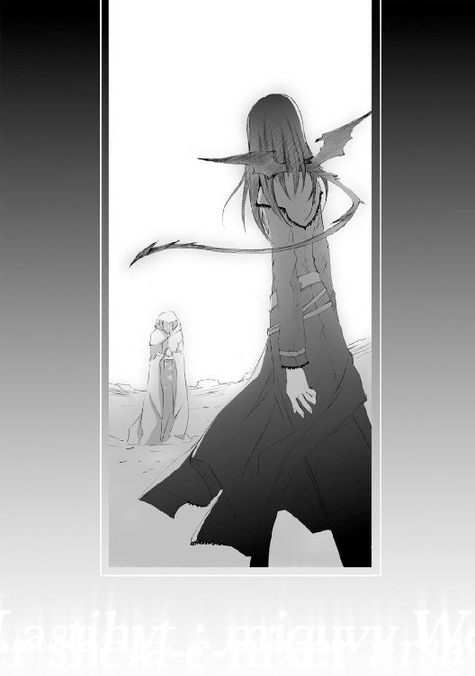
あとがき
皆様、お久しぶりです。
一月の『イヴは夜明けに微笑んで』刊行以来、四か月。多くの温かいご声援のお陰で、なんとかこうして、「黄昏色の詠使い」の続編たる第二巻目に着手することができました。
四か月。時間感覚が麻痺しているせいか、よく分からないうちに時は無情に流れ──不思議と、常に焦りながらの四か月でした。......おかしいなぁ、多分怠けてはいなかったはずで......あ......どうだろう......やっぱり怠けてたのかも（弱気）
とまあ、そんな怠け者の告白はさておき──
二巻『奏でる少女の道行きは』──クラスメイト編と細音が勝手に位置づけている小話でしたが、いかがでしたでしょうか。
ネイトたちのクラスの雰囲気や学園外の風景、文明。それに加え、名詠士以外の特殊な職である祓名民や、一巻とはまた異なった風の詠。いずれも一巻で描ききれなかった「外の世界」であり、前作を刊行する前から描きたいなと思っていたものです。
『イヴ』の持つ雰囲気を大切に、かつ、またちょっと違った一面を目指した今作ですが、気に入って頂ければ幸いです。
......しかしクラスメイト編と銘打ったはいいものの、気づけばすっかり祓名民メインの話。エイダ編と言っても過言ではない感じになっちゃいました。
編集Ｋ様「細音さん、エイダ好きですよね」
ずばり指摘される状況。......ち、違うんです。むしろ自分はクラウスが（ぇ？）
というのも──一巻でもそうですが、『黄昏色の詠使い』においては各登場人物ごとに大切な場面というのが存在します。それも登場人物の数だけ、彼らが主役となる小話が丸々一冊分存在すると言っても過言ではないくらい。
二巻では、それがエイダでした。お気づきになった方もいると思いますが、二巻でエイダを主軸とするための準備として、一巻ではネイトのクラスメイトはほとんど描写が無い中、エイダだけは一巻の各所に顔を出しております。
この物語における主人公はネイト＆クルーエルですが、時としてカインツや教師を初めとする大人達に、時として傍にいる学友に助けられ少しずつ成長していく二人を、今後とも温かく見守って頂けると嬉しいです。
──そして、七月に刊行される三巻の説明を少しだけ。
かつて夜と虹が交わした旧い約束。『旧約』を巡る物語であった一巻。
二巻で、少しだけその様子の片鱗が明らかになった外の世界。
今までの物語を踏まえた上での三巻。
本当の意味で、ようやく黄昏色の詠使いの本編という感じです。旧約から遥かな時を越えて誓われる、新しい約束。『新約篇』とも呼ぶべき本編が第三巻に当たります。
三巻──「夜色の少年」の織りなす、新しい詠と約束の物語。今までのお話で残った謎や疑問も少しずつ明らかに出来ればと思いますので、何卒お付き合い頂ければ幸いです。
《短編掲載のお知らせ》
五月に二巻。七月に三巻。この隔月刊行の間──五月、六月、七月の三か月。
その三か月の間、富士見書房より刊行されている「月刊ドラゴンマガジン」にて、『黄昏色の詠使い』の短編が掲載されます。
二〇〇七年スケジュール予定。
五月 黄昏色の詠使いII 刊行
「月刊ドラゴンマガジン 七月号」にて連載一回目＆特集
六月 「月刊ドラゴンマガジン 八月号」にて連載二回目
七月 黄昏色の詠使い 刊行
「月刊ドラゴンマガジン 九月号」にて連載三回目
──以上のような感じです。日程の詳しい事は本屋さん等でお確かめ頂くか、細音のホームページ＆ブログでもご紹介しますので、ご参考にして頂ければと思います。
三か月連載ということで、全三回の短編。
内容はもちろんのこと、その発表順も頭を抱えに抱えつつ、現在取り組んでいる最中です。時々「......もうだめだ、今回こそは間に合わない」とか言いそうになるくらい頑張ってます（実際、夜な夜な独りで呟いてたりするのは秘密）。
ちなみに連載一回目については、二巻と三巻の間の時間上の小話。加えて特集の頁も設けて頂けるようなので、是非とも御覧頂きたいなぁと。
第二回、第三回については......内容に関しては秘密ですが、今まで出てきた人物たちはほぼ全員、どこかの回で登場する予定です。本編では描けなかった小話、こちらも、本編同様お付き合い頂ければ幸いです。
※加えて「ドラゴンマガジン」の読者アンケートハガキにて「黄昏色の詠使いが面白かった」と書いて送って頂けると、個人的に凄くありがたかったりします！（キッパリ）。
──とまあ、宣伝はここまで──
《一巻を書き終えてから、今まで》
冒頭にも述べましたが、沢山の方からお手紙やメール等でご感想を頂きまして、本当にありがとうございます。一つ一つのご感想、大切にしています。毎週一回は読み返してるくらいです。一巻においてはかなりの数の人物たちが登場しましたが、気に入ってもらえた人物たちも千差万別で、多くの人物を気に入って頂けて本当に嬉しい限りです。人気に関しては多くの人物に混じって夜色飛びトカゲ票が目立ち、当人（当トカゲ）も大変喜んでいたようです。（下手するとベスト三に入るくらいの勢いでした）
......トカゲに表彰台を取られたままでいいのか、数多の人間たちよ。
......そして、そんなのでいいのかな、この物語。
《最後に》
二巻が刊行されるにあたり、本当に多くの方のお力に頼りつつ、ここまでやってこれました。まずは、二巻の原稿を何度も何度も丁寧に確認し、作品を磨いてくださった担当編集Ｋさま。一巻同様、素敵なイラストを描いてくださった竹岡美穂さま。
お二方とも、お忙しいスケジュールの中本当にありがとうございます。
風邪を引いて一週間寝込んだ時、様々なサポートをしてもらった家族。
そして何より、一巻に引き続き二巻を手にしてくださった全ての方々。
本当にありがとうございます。これから一層頑張っていきますので、何卒お付き合い頂ければと願っております。
※ 追伸 メールやお手紙を下さった方へ。
メールでもお手紙でも、今のところ何とか三か月以内にはお返事を出すよう心がけています。もし三か月経ってもお返事が返ってこないという場合、左記のホームページ上のブログに催促のコメントなりメールなり頂ければ慌ててお返事しますので、よろしくお願いいたします。
それでは。短編、そして三巻にてお会いできることを願いつつ──
この度は第二巻を手にとって頂き、本当にありがとうございました。
三月 某日 志方あきこ『蒼碧の森』を聴きながら──細音 啓
HP 『細やかな音の部屋』 http://members2.jcom.home.ne.jp/0445901901/
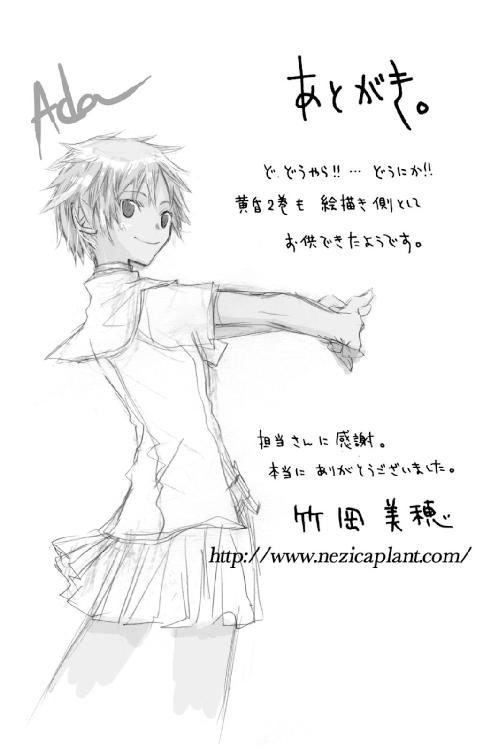
黄昏色の詠使い
奏でる少女の道行きは
細音 啓
平成23年12月28日 発行
発行者 山下直久
発行所 株式会社富士見書房
〒102-8144 東京都千代田区富士見1-12-14
http://www.fujimishobo.co.jp/
(C)2007 Kei Sazane, Miho Takeoka/Fujimishobo